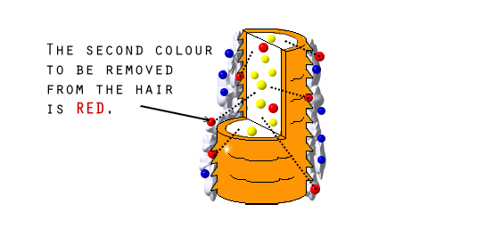
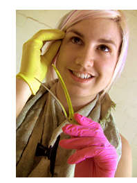
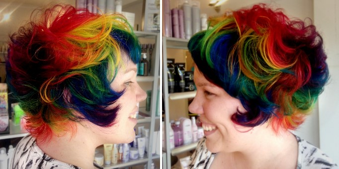

Any Colour of the Rainbow
The Ultimate Guide to Alternative Hair Colour
Welcome
Note: Please read this guide all the way through before you buy any product or start colouring your hair.
Colouring your hair is great fun and with a bit of creativity the sky's the limit. No matter if you are goth, scene, punk, emo, hippy, or just want to stand out from the crowd then creative hair colour is a great way to express your individuality.
Be inspired to try new things. For me the Rainbow hair colour is my signature style, but I'm always experimenting. The great thing about this dye is that you could have a different colour each month if you wanted. I'll teach you how, but what colours you want to do is up to you!
Lightening Products
Why lighten the hair first?
As you may know white reflects light and black absorbs it. White is also the absence of all colour and so reflects all colours. Where as black is a combination of all colours and absorbs all colours.
These basic rules apply to hair colour as well.
So if you use a vibrant hair colour, for example blue, and you colour black hair with it, you won't see the blue very much at all. You will probably only get a very slight hint of blue under strong sunlight. However if you apply the exact same blue dye to very light blonde hair, you will see a truly vibrant blue under most light.
This is because the blue colour pigments are reflected by light perfectly on a white base, and have no other other colour pigments to alter them. However on the black base the blue can't be reflected because the black absorbs the light, and the blue can't be it's true colour because all the other colour pigments are present in black and so the blue is altered.
This is why we must lighten the hair to get vibrant results. The lighter the hair the truer the rainbow dye colour can be.
What if the hair is already white, or naturally blonde?
You can use the crazy colours directly on your natural hair and you will get a good result. However, I have found from experience the colour will fade a lot faster on non-lightened natural hair. I have also found the colours to be a less vibrant and more soft/pastel in tone than on a pre-lightened hair.
This is because naturally light hair is less porous/absorbent than hair that has been chemically lightened. This means it doesn't grab and hold the colourful dye very well. If you only want the colour to last a week or two then this is fine, use a deeper shade then the colour you desire. For example if you want a standard blue I suggest you use a deeper 'midnight blue' shade as it will lighten a lot with each wash.
Another thing to note with naturally light blonde hair: You will find your natural colour, even if it is very light, will still have golden yellow tones in it. Using a shade like blue, the natural golden yellow in your own hair will effect the result and give you a more greenish blue. As it washes out you may even find it changes to a light green as the level of blue pigments decreases and you own gold tones show through (blue + yellow = green).
With naturally white hair this will not happen as there are no existing colour pigment left in the hair.
You will find it fades faster than hair that has been chemically lightened. With white hair you may find greys mixed in, and for this reason I would still choose to bleach the hair in the first instance to give you a good clean base for the rainbow colours. This way the colour will also last much longer.
Colour will fade a lot faster on non-lightened white, or naturally light blonde hair. So I would recommend you bleach the hair first if you want the colour to last.
Are there any exceptions where I don't need to bleach my hair first?

Yes! Red and Orange.
Red and Orange are the only colours that are available in a hi-lift dye. This is where you apply the dye and it both lightens and deposits pigments in one step. No pre-bleaching needed. Plus these dyes are permanent. This is perfect for those of you who want a full head of vibrant red, a few streaks of red and orange, or maybe a bright red fringe. It saves time, money and the condition of your hair. Awesome stuff. I'll go into more detail and give you the brands and shades in the 'Dye Products' section. I'll explain how to apply in the 'One Colour' section and how to maintain this type of dye in the 'Maintenance' section. So if you are planing on going Hayley Williams colours or Little Mermaid red all over please look out for this info as we go.
What are the best products to lighten hair and what shouldn't I use?
The best way to lighten hair is with bleach. The reason a lot of people have problems with lightening their hair is because they use the wrong product. Often people will buy a box of blonde tint/dye off the supermarket shelf and end up with orange/yellow hair. Tint/dye is NOT bleach and works differently.
Another reason people use a tint/dye rather than a bleach is because they have heard horror stories about bleach being used in the wrong hands. The truth is that bleach causes almost the same amount of damage to the hair as some tint products. In fact bleach has come a long way since your mums days of streaking caps. Today you can even get ammonia free bleach, which hardly causes any damage! Once you have that blonde pre-lightened hair you can swap and change the funky colours with out having to re-bleach again. (NOTE: There are a few exception to this which I will cover in the 'Future Changes' section). Bleach generally come in a powder form and is mixed with Hydrogen Peroxide developer cream.
What is Hydrogen Peroxide Developer Cream?
Hydrogen peroxide developer cream, also know as "Oxidant", "Developer" or "Activator" is what is mixed with all standard tint/dye and bleach products. Normally it comes as a cream in a bottle. The hydrogen peroxide developer cream works by opening the hair's protective cuticle's to allow colour pigments to either be removed or to be replaced (similar to the way a pine cone opens with heat). When hydrogen peroxide developer cream is mixed with bleach powder it removes the natural colour pigments in the hair leaving the hair a pale yellow colour. The amount and speed of natural colour pigments that are removed from the hair depends on the strength of hydrogen peroxide developer. Peroxide developer is available in three strengths...
20 Volume / 6% Peroxide
This is the most commonly used peroxide developer and causes the least amount of damage. It can be used on both natural virgin hair and already dyed hair. Click the image above for more info.
30 Volume / 9% Peroxide
Use for dyed and natural darker hair (e.g mid-brown hair.) Most commonly used on already dyed hair. Click the image above for more info.
40 Volume / 12% Peroxide
Off scalp ONLY. Best for natural black hair (such as Asian hair types.) This is the strongest level peroxide. Not recommended for fine, weak hair. Click the image above for more info.
Always store peroxide bottles in a cool place, away from direct sunlight. Also remember to put the lid back on when you finish. If the bottle is not sealed, the peroxide will oxides and become useless.
What bleach powder should i use?
Bleach powder is mostly the same across all brands. The level of peroxide developer that is mixed with the bleach powder is what changes the strength and result. However bleach powder does come in two types:
-
ON Scalp: If you wish to do an all over scalp bleach you will need an ON scalp bleach powder. These are more gentle and suitable to apply directly to the scalp. This type of bleach is also available for people with sensitive scalps.
-
OFF Scalp: If you wish to do streaks of colour in foil (which would not touch the scalp) you can use ether type of bleach. However the OFF scalp type is usually sightly stronger and would be most suitable for doing streaks in already dyed or darker hair types.
Another thing you will want to consider when choosing your bleach is cost and quantity. All of the professional bleach and developer products come in large amounts, as they are intended for salons, but they are also the best value for money, and give far better results than any supermarket product. Purchase a big tub or bag and it will last you a year or more, which is economical if you intend on touching up your roots as they grow out. Share a bag with a friend, and even do each others hair.
However I understand some of you may want a smaller amount for a one off bleach. For this you can get bleach kits which come with both bleach and peroxide and are designed for a single use.
It is possible to mix developer with a differant brand of bleach powder. But for best results when mixing bleach powder and peroxide developer stay within the brand and product range. So if you use a L'Oréal bleach, ideally you should mix it with the corresponding L'Oréal peroxide developer.
Professional Bleach Products
Below is listed a range of bleach prodcuts to help you find whats right for you. Click on the name of the product to go the site where you can purchase online.
Salon Smart:
This brand is widely available in most salon suppliers in Australia and New Zealand, but I haven't been able to find it stocked anywhere else in the world, even though it's made in Italy!
Salon Smart Super Blue On Scalp
Brand: Salon Smart
Type: Super Blue - Original Formula Bleach
Powder.
Average Price: $11.99 (AUD)
Size: 550g
Value for money: 2c (AUD) per g
Made in: Italy
I love using this brand. Brilliant value for money for a professional bleach and works perfectly for achieving a creamy blonde on both coloured and natural hair. Gives up to 7 levels of lift. The Super Blue is more gentle and suitable for both on and off scalp. Powder is blue in colour and can be mixed to a nice constancy to work with. Mix ratio is approximately 1:1 – 1:2 (for example 10g bleach powder to 10g – 20g peroxide developer.) Dust free powder so you don't breath it in when mixing, and has a pleasant fresh smell. Also available in little 50g sachets for $9.95 for one off use.
Also Available in an Ammonia Free Version:
The Ammonia Free version of Super Blue is much the same, but kinder to the hair and without the ammonia smell. This version also doesn't swell or expand as much. It is also a "Rapid Formula" so works a bit faster, so keep an eye on it! Also available in little 50g sachets for $9.95 for one off use.
Salon Smart Super White Off Scalp
Brand: Salon Smart
Type: Super White - Original Formula Bleach
Powder.
Average Price: $11.99 (AUD)
Size: 550g
Value for money: 2c (AUD) per g
Made in: Italy
This is the OFF SCALP version, and it is a bit stronger, better for darker hair types. Again I love this brand, great value for money. Works on both coloured and natural hair. Gives up to 8 levels of lift. Powder is white in colour and can be mixed to a nice creamy constancy to work with. Mix ratio is approximately 1:1 – 1:2 (for example 10g bleach powder to 10g – 20g peroxide developer.) Dust free powder so you don't breath it in when mixing, and has a pleasant fresh smell. Also available in little 50g sachets for $9.95 for one off use.
Also Available in an Ammonia Free Version:
The Ammonia Free version of Super White is much the same, but kinder to the hair and without the ammonia smell. This version also doesn't swell or expand as much. It is also a "Rapid Formula" so works a bit faster, so keep an eye on it! Also available in little 50g sachets for $9.95 for one off use.
Salon Smart Peroxide Developer
Brand: Salon Smart
Type: Peroxide Developer
Average Price: $10.99 (AUD)
Size: 990 ml
Value for money: 1c (AUD) per ml
Made in: Italy
These are the developers you mix with the Salon Smart Bleach powders. Mix ratio is approximately 1:1 – 1:2 (for example 10g bleach powder to 10g – 20g peroxide developer.) Refer to the guide above to see what level you need. Again great value for money and doesn't have any chemical smell. The 12% (40vol) level developer is for OFF scalp use only.
L'Oréal Professional:
This range is designed for professionals and it's what I use in the salon day to day. It's a fantastic range and I highly recommend it, although more expensive than other brands, it would be my first choice. Available from most salon suppliers world wide. Click the price in your currency to buy online in your county.
L'Oréal Platifiz Bleach on scalp
Brand: L'Oréal Professional
Type: Platifiz Precision Bleach Powder On
Scalp
Average Price: $46.50 (AUD) | £11.99 (GBP) | $24.99 (USD)
Size: 500g
Value for money: 9c (AUD) per g | 2p (GBP) per
g | 5c (USD) per g
Made in: Spain
This bleach powder has been L'Oréal's original On Scalp beach for the longest time, and before Infinie Platine came out it was my favorite bleach. It gives 7 levels of lift, and is suitable for natural hair only. But I love how gentle it is on the hair, and I find the constancy wonderful to work with, both in full head bleach applications and in foils. The powder is blue in colour. Maximum development time is 50min without heat. Mix ratio is approximately 1:1 – 1:2 (for example 10g bleach powder to 10g – 20g peroxide developer.) The bleach (like most bleaches) swells and expands as it develops. Don't apply too much in foils or it will expand and leak, drip and bleed out the foil.
There is another bleach by L'Oréal called 'Quick Blue' which
is the American version of Platifiz. I've only seen it in the
USA, it's $24.99 USD. Gives same 7 levels of lift, On Scalp,
blue powder, same mix ratio, and same development time. It's
available in a big tub (453g/16oz) and in small sachets
(28g/1oz). You can get this bleach from Sally Beauty supply
L'Oréal Platine Bleach Off scalp
Brand: L'Oréal Professional
Type: Platine Precision Bleach Powder OFF
Scalp
Average Price: $46.50 (AUD) | £10.49 (GBP)
Size: 500g
Value for money: 9c (AUD) per g | 2p (GBP) per
g
Made in: Spain
This bleach powder is L'Oréal's OFF Scalp bleach. It gives 7 levels of lift on natural hair and up to 5 levels of lift on dyed hair. Because it is an off scalp bleach it is stronger than Platifiz and harsher on the hair. I only use this bleach when lightening dyed hair and naturally dark and strong Asian type hair. The powder is white in colour. Maximum development time is 50min without heat. Mix ratio is approximately 1:1 – 1:2 (for example 10g bleach powder to 10g – 20g peroxide developer.) The bleach (like most bleaches) swells and expands as it develops. Don't apply too much in foils or it will expand and leak.

L'Oréal Infinie Platine on scalp
Brand: L'Oréal Professional
Type: Infinie Platine Bleach Powder (with
Pro-Keratine) On Scalp
Average Price:
$39.95 (AUD) | £7.99
Size: 500g
Value for money: 8c (AUD) per g | 1p (GBP) per
g
Made in: Spain
This is my new favorite bleach powder! It was only launched by L’Oréal in November 2012, it's a high-powered lightening powder with up to 8 levels of lift, but it's also gentle and can be used on the scalp. It gives the highest and fastest level of lightening in the L’Oréal bleach range. It also has 'Pro-Keratine' (Keratine is what your hair is made out of) which helps to strengthen and condition the hair at the same time. Love it! Dust free powder so you don't breath it in when mixing. Mix ratio is approximately 1:1 – 1:2 (for example 10g bleach powder to 10g – 20g peroxide developer.) Can be used for full head scalp bleach and in foils. The powder is blue in colour. Maximum development time is 50min without heat. Suitable for all hair types, both coloured, natural and dark hair. I have personally used this on my own scalp and found it to be the most gentle bleach I've ever tried. Practically no discomfort when compared to other on scalp bleachs. This is my number one recommendation for a bleach.
L'Oreal Peroxide Developer
Brand: L'Oréal Professional
Type: Peroxide Developer 6% (20vol), 9%
(30vol) and 12% (40vol)
Average Price:
$23.35 (AUD) | £5.75 (GBP)
Size: 1000ml | 1-litre
Value for money: 2c (AUD) per ml | less than
1p (GBP) per ml
Made in: Spain
These peroxide developer creams (Oxidant Cream) come in 3 levels: 6% (20vol), 9% (30vol) and 12% (40vol). They are designed to be mixed with the L'Oreal bleach powders: Platifiz, Platine and Infinie. Mix ratio is approximately 1:1 – 1:2 (for example 10g bleach powder to 10g – 20g peroxide developer.) The 12% (40vol) level developer is for OFF scalp use only.
L'oreal Platinum Range:
The Platinum range from L'Oréal Professional is the most gentle bleach available. It contains white beeswax and lipids which maintain 100% of the hair's outer lipidic layer. This barrier layer gives the hair elasticity, shine, and protects the cuticles. This means the Platinum range of bleach can lighten the hair by 7 levels and still maintain the hair's optimum condition. Perfect for those with weak or dry hair, who don't want a harsh bleach. These bleaches are not powders, but pastes, and can only be mixed with the corresponding Platinum Nutri-developers. They are one of the most expensive ranges of bleach out there, but worth the money if you are concerned about the condition of your hair.

Platinum Plus Bleach Paste ON Scalp
Brand: L'Oréal Professional Platinum
Type: Plus (On Scalp) Bleach Paste
Average Price: $47.50
(AUD) |
£28.95 (GBP)
Size: 500g
Value for money: 9c (AUD) per g | 6p (GBP) per
g
Made in: Spain
Platinum Plus is the stronger of the two bleach pastes in this range, but it is still gentle enough to use on the scalp. Ideal for dyed, or natural darker hair types. Best on medium to coarse hair. This bleach doesn't swell or expand like most bleaches do. This is great in foils as you don't need to worry about it bleeding or leaking out. Also great for touching up the roots as you don't get a swelling of bleach that can overlap onto previously bleached hair. The paste texture can make it difficult to mix together with the Nutri-developer, you have to work at it to get the lumps out! But once mixed it is a nice constancy to work with. I have personally used this on my own scalp and found it to have minimal discomfort. However because it is a gentle bleach I found 30vol was needed to get the same result I would normally get with 20vol and a classic powder bleach. Even with the higher developer, the condition still felt better than the result you get with a classic powder bleach. Mix ratio is approximately 1:1 – 1:2 (for example 10g Platinum Plus bleach paste to 10g – 20g Nutri-developer.) Maximum development time is 50min without heat.

Platinum Ammonia Free Bleach Paste
Brand: L'Oréal Professional Platinum
Type: Ammonia Free Bleach Paste
Average Price: $47.50
(AUD) |
£28.95 (GBP)
Size: 500g
Value for money: 9c (AUD) per g | 6p (GBP) per
g
Made in: Spain
Platinum Ammonia Free bleach paste is the weaker and most gentle of the two bleach pastes in this range. L'Oréal says this can be used ON scalp, however I have personally used this on my own scalp and found it to be the most painful experience of a scalp bleach EVER! It itched like a thousand mosquito bites all over my head, totally unbearable. This may have just been a personal reaction, but you can understand why I have never used it on a clients scalp after that experience. However the condition of my hair was the most amazing after, almost felt like it hadn't even been bleached! So I'll leave it up you if you want to use this on your scalp, but I would recommend a skin test first. (Which is what I should have done, but I foolishly presumed such a gentle and ammonia free bleach would be kinder on my scalp than the regular powder bleach. Lesson learned, always do a skin test when using a new product!) Apart from that experience I love using this bleach in foil, beautiful results and wonderful condition.
This bleach is ideal for naturally lighter hair types. Lightens the hair by 7 levels. Best on medium to fine hair. This bleach doesn't swell or expand like most bleaches do. This is great in foils as you don't need to worry about it bleeding or leaking out. The paste texture can make it difficult to mix together with the Nutri-developer, you have to work at it to get the lumps out! But once mixed it is a nice constancy to work with. Mix ratio is approximately 1:1 – 1:2 (for example 10g Platinum Plus bleach paste to 10g – 20g Nutri-developer.) Maximum development time is 50min without heat.

Platinum Nutri-Developer
Brand: L'Oréal Professional Platinum
Type: Peroxide Developer 6% (20vol), 9%
(30vol) and 12% (40vol)
Average Price: $27.50
(AUD) |
£7.15 (GBP)
Size: 1000ml | 1 Litre
Value for money: 2c (AUD) per ml | Less than
1p (GBP) per ml
Made in: Spain
These are the Nutri-developers and they should only be mixed with Platinum Plus and Platinum Ammonia Free bleach pastes in this range. These developers contain the restoring lipids that maintain the condition of the hair during development. Mix ratio is approximately 1:1 – 1:2 (for example 10g bleach powder to 10g – 20g peroxide developer.) The 12% (40vol) level developer is for OFF scalp use only.
ION Color Brilliance:
This is an American brand and is only available in the United States, Canada, Mexico and Chile. ION also launched it's own range of bright colours in May 2012, I will review them in the 'Dye Products' chapter. You can get this brand from Sally Beauty supply, Amazon and Marlo Beauty.
Bleach Powder Lightener On
Scalp
Brand: Ion Color Brilliance
Type: Bleach Powder Lightener On Scalp
Average Price: $19.99 (USD)
Size: 16 oz | 453g
Value for money: $1.25c (USD) per oz | 4c
(USD) per g
Brilliant value for money for a professional bleach and
works perfectly for achieving a creamy blonde on both coloured
and natural hair. Works even on darker hair types. Powder is
blue in colour and has a lovely fruity, floral smell. Contains
gardenia and coconut oils which stops this product from drying
out while developing, and also helps to maintain the condition
of the hair. However the oil does make it a little more
stubborn to shampoo out. I'd suggest you give three washes with
a strong shampoo to help ensure it's all gone. Mix ratio is
approximately 1:1 – 1:2 (for example 10g bleach powder to 10g –
20g peroxide developer.) Maximum development time is 50min.
This stuff works FAST so keep a close eye on it, and wash it
out as soon as you reach the desired shade. Do NOT add heat
during development, this bleach will heat up on its own.
Although this is an On scalp bleach, I know a few people who
have had reactions to this bleach and found it irritating on
the scalp, so I suggest you do a skin test first to make sure
this one suites your skin. Only use 6% (20vol) or 9% (30vol)
with on scalp application. Never use 12% (40vol) on scalp. For
the price you pay, it's a fantastic bleach, gives good results
and leaves the hair in great condition. Also available in
small sachets (1oz/28g) for $3.79
(USD)
for one off use.
Ion Ammonia Free Lightener On
Scalp
Brand: Ion Color Brilliance
Type: Ammonia Free Lightener
Average Price: $21.99 (USD)
Size: 16 oz | 453g
Value for money: $1.37c (USD) per oz | 5c
(USD) per g
The same as the Ion Bleach Powder above this is brilliant
value for money for a professional bleach. Main differences are
that this one has no ammonia, and is not as strong. I wouldn't
use it on dyed hair. Gives best results on natural light brown
or lighter hair. Has a lovely smell, and of course no ammonia.
Mix ratio is approximately 1:1 – 1:2 (for example 10g bleach
powder to 10g – 20g peroxide developer.) Maximum development
time is 50min. This stuff works FAST so keep a close eye on it,
and wash it out as soon as you reach the desired shade. Do NOT
add heat during development, this bleach will heat up on its
own. Can be used for both on and off scalp applications, but
ONLY USE 6% (20vol) if you are applying to the scalp. For the
price you pay, it's a fantastic bleach, gives good results and
leaves the hair in great condition. Also available in small sachets (1oz/28g) for $4.59
(USD)
for one off use.
Sensitive Scalp Peroxide
Developer
Brand: Ion Color Brilliance
Type: Peroxide Developer 6% (20vol), 9%
(30vol) and 12% (40vol)
Available in two sizes...
Large Size: 32 oz | 907g
Average Price: $5.69 (USD)
Value for money: 18c (USD) per oz | less than
1c (USD) per g
-
Small Size: 8 oz | 226g
Average Price: $3.19 (USD)
Value for money: 40c (USD) per oz | 1c (USD)
per g
These peroxide developer creams (Oxidant Cream) come in 3 levels: 6% (20vol), 9% (30vol) and 12% (40vol). They are designed to be mixed with the Ion bleach powders. Mix ratio is approximately 1:1 – 1:2 (for example 10g bleach powder to 10g – 20g peroxide developer.) The 12% (40vol) level developer says you can use on scalp for 2 levels of lift, but this is in reference to mixing with the tint/dye colours. The bleach powders give up to 7 levels of lift, so don't use 12% (40vol) level developer on the scalp with bleach powder. As a general rule I never use 12% (40vol) for scalp bleach. These peroxide developers are designed for sensitive scalps, so if you have a sensitive scalp and want to do a scalp bleach use 6% (20vol) or 9% (30vol) (depending to the desired level of lift). The consistency is more liquid, which makes applying the bleach drippy, but easy to spread, and also helps stop the bleach from drying out while developing.
Dye Products
Semi-permanent Dyes:
Also know as 'Direct Dyes'. These semi-permanent alternative dyes are all synthetic, contain no ammonia and should NEVER be mixed with peroxide developer. They work as a deposit only dye, which means they simply stain and deposit pigment on the hair surface rather then breaking into the core of the hair like most permanent chemical tints/dyes do. Because these are deposit only dyes, it also means they do not lighten or lift at all, this is why the hair needs to be lightened first before using this kind of dye. If fact they are so kind to the hair it's like applying conditioner. So it is totally safe to re-apply again and again to refresh your colour as often as you like with zero damage. Awesome stuff!
Semi-permanent dye is perfect for people, like myself, who love to experiment with their hair colour and want a totally different look every 4-6 weeks.
Here I have listed as many hair dye brands as I know of. A lot of them I have personally used, either on myself or on client's hair. The brands I haven't used I've researched to provide you as much information about them as possible. However please remember that everyones hair is different. So where one brand may work well for one person, it may not give the exact same result for your hair. I have done my best to give you as much information as possible so that you may make your own informed choice. And I would also encourage you to experiment with different brands until you find what works for you and your hair. I have rated the brands 1 - 5 stars, with 5 being the best rating.
InkWorks
Brand: Paul Mitchell
Lasts: 3 to 6 weeks
Average Price: $20 (USD)
Size: 118ml | 4oz
Value for money: 17c (USD) per ml | $5 (USD)
per oz
Rating: ★★★
Made in: USA
This product is intended for professionals only, but you may be able to purchase from a friendly salon supplier. After you rise this dye out, Paul Mitchell recommends that you wait 48 hours before the first shampoo to give INKWORKS time to set into the hair. Colours last quite well. This brand has 11 shades including 'Black' and 'Clear'. The Clear can be used to dilute the other vibrant shades to create pastel tones. If you dilute the dye to make a paste shade the colour won't last as long. Pastel shades will only last 1-2 weeks. Overall this is a good dye, colours are vibrant, however it's very expensive for the amount of product you get.

URBAN SHOCK Color Craze
Brand: Scruples
Lasts: 2 to 4 weeks
Average Price: $12 (USD) | $19.95 (AUD)
Size: 2.5oz | 75ml
Value for money: 16c (USD) per ml | $4.80 (USD) per oz | 27c (AUD) per ml
Rating: ★★
Made in: USA
This product is a professional range, however it is available for retail purchase. You will need to go to a salon supplier, or a salon that stocks this range to purchase. The dye has a fruity scent. Available in 7 shades. When you squeeze the dye out the tube you will see the dye has magic sparkles in it. This is just for fun, once the dye is rinsed out your hair the sparkles will disappear. This is one of the most expensive American brands. You will need two tubes for a full head. You can also mix this dye with the Scruples "ER Emergency Repair Conditioner" to create pastel shades. If you dilute the dye this way to make a paste shade the colour won't last as long. Pastel shades will only last 1-2 weeks. Check out the Scruples website for a free instructional video on how to create pastel shades. I've featured the new packaging here but you can also get the old packaging for a cheaper price on places like eBay and Amazon, still the same product just the old design. Overall this is a good dye, colours are vibrant, however it's very expensive for the amount of product you get.
CHI Chromashine
Brand: Farouk Systems, CHI
Lasts: 3 to 6 weeks
Average Price: $20 (USD)
Size: 8oz | 236ml
Value for money: 8c (USD) per ml | $2.50 (USD)
per oz
Rating: ★★★★
Made in: USA
This product is intended for professionals only, but you may be able to purchase from a friendly salon supplier. Comes out a bit darker than it looks in the tube. I have seen this brand online for as low as $18. Recommended processing time is 10 minutes under low heat and a 5 minute cool down time. It's important to allow the hair to cool down before rinsing this dye out. You can also do longer than 10 minutes under low heat for a more long lasting colour. This brand comes in 8 shades. The tubes are very big, one tube can do two full head applications, so if you have very thick or long hair then it would be a great brand for you. Colours can be mixed to create your own unique shades. Vibrant and long lasting. This brand is good value for money compared to other 'professional only' brands.
VERO K-PAK COLOR INTENSITY
Brand: Joico
Lasts: 8 washes
Average Price: $12 (USD)
Size: 118ml | 4oz
Value for money: 10c (USD) per ml | $3 (USD)
per oz
Rating: ★★★
Made in: USA
This product is intended for professionals only, but you may be able to purchase from a friendly salon supplier. This brand was used to dye all the wigs and hair pieces in the film 'The Hunger Games'. Comes in 9 shades, and one tube will do one full head application. Colours can be mixed to create your own unique shades. This brand is not bad value for money compared to other 'professional only' brands, however not very long lasting.

Special Effects
Brand: Special Effects
Lasts: 3 to 6 weeks
Average Price: $13.99 (USD) | £9.40 (GBP)
Size: 118ml | 4oz
Value for money: 12c (USD) per ml | 8p (GBP)
per ml | $3.50 (USD) per oz
Rating: ★★★★★
Made in: USA
This brand claims on their website to be; "The most intense, long-lasting, semi-permanent hair colour out there." And they are right. If you want a super long lasting, strong hold semi-permanent this is your brand. In fact some shades such as the 'Atomic Pink' are so long lasting I think they should be classes as permanent, because they simply never leave your hair, and can in fact be quite hard to remove. This is great if you want the same colours for a long time, but if you like to change your colours often this may not be the best brand for you. The consistency is quite thick so you do have to work it in to ensure even cover. I don't like the squeeze bottle packaging. The consistency makes it is quite hard to squeeze the dye out the click open/close lid, (same as RAW dye). I normally just unscrew the cap to get the dye out more easily. They have a good range of shades, and some glow under UV black light. The smell is quite pleasant, reminds me of marzipan or marker pens. You only need one bottle to do a full head of colour. Overall I love working with this brand and would highly recommend it.
Manic Panic
Brand: Tish & Snooky's MANIC PANIC
NYC
Lasts: 3 to 6 weeks
Average Price: $8.99 (USD) | £7.20(GBP) | $22
(AUD)
Size: 118ml | 4oz
Value for money: 8c (USD) per ml | 6p (GBP)
per ml | $2.24 (USD) per oz
Rating: ★★★★★
Made in: USA
This brand is probably one of the most famous and had been around since the 70's. With celebrities like Rianna and Katy Perry using this brand it's no wonder they are so popular. I use this brand quite often, and like all semi-permanent dye brands there are pros and cons. Tish & Snooky's Manic Panic has a great range of shades, including some that glow under UV black light. They also have the 'Amplified' formula which lasts 30% longer than the 'Classic' Manic Panic. I love the pots they come in. I wish all dyes came like this because it's so much easier to use straight from the pot. Just dip your brush in, then put the lid back on when you're finished for minimum product wastage. Which is why I'm frustrated at the new 'Squeeze' Bottle packaging design for the 'Amplified' range. Because it's now in a bottle like 'Special Effects' you have to squeeze it out into a bowl to use with a brush, and that means product wastage if you don't use everything you squeeze out. Or you can squeeze the dye out directly onto you hair for one colour all over, but this gets messy. I hope they bring back the pot packaging, it's one of the best things about this brand. Plus I love to re-use the pots for when I mix up my own shade's.
The consistency of this dye is good, not too thick or drippy. The smell is not bad, reminds me of the smell of paint, but it's not strong, you have to hold the dye up to your nose to smell anything. Like all semi-permanent dyes some shades are better that others. One of my favourite shades is the 'Electric Banana', it's like a highlighter yellow it's so bright. The 'Ultra Violet' comes out more blue than it appears in the pot. The colours last well, depending what shades you use, however they are not the most long lasting of the semi-permanent dye brands. If you use the same colour all the time you can get 'Salon Size' 8oz bottles of dye from salon suppliers, which can be better value for money. Manic Panic also make a 'High Voltage Intense Colorizing Shampoo', in four shades. This is great if you have one colour all over, as the shampoo deposits colour, keeping your hair vibrant for longer (not suitable for multicoloured hair).
Raw Color
Brand: RAW
Lasts: 3 to 6 weeks
Average Price: $12.99 (USD)
Size: 113ml | 4 oz
Value for money: 11c (USD) per ml | $3.25
(USD) per oz
Rating: ★★★★
Made in: USA
These dyes come in a re-sealable bottle with a click open/close lid. However I find the consistency to be very thick and hard to squeeze out such a small opening. Instead I suggest you simply unscrew the lid top and squeeze the product out directly from the bottle. Because of the thick 'paste-like' consistency of this dye it can be hard to spread though the hair and results can be patchy if you don't take time to really work the product into the hair and ensure even coverage. As such it's not the easiest product to use in foils, and you will need to keep the section of hair fine to ensure the the dye penetrates. With 113ml of product you only need one bottle to do a full head of colour. It has a nice bubble gum smell. Colours are vibrant and last a long time. I've found with some of the darker shades the residue colour can be quite hard to lift from the hair. Overall this brand is comparable to Special Effects, and is slightly cheaper, however of the two, Special Effects is the most long lasting.
Splat Box Kit
Brand: Developlus
Lasts: 3 to 6 weeks
Average Price: $8.98 (USD)
Box Includes:
- 3oz (89ml) bottle of hair dye
- 2.5oz (70ml) of 9% (30vol) Peroxide Developer
- 1.25oz (35g) Sachet of Bleach Powder
- Gloves
Value for money: 8c (USD) per ml | $3.25 (USD)
per oz
Rating: ★★★
Made in: USA
Splat comes in a box kit which includes splat dye, bleach, peroxide and
gloves. The bleach should NOT be used on the scalp. The gloves you get with
the kit are quite big. Dye is a gel-like consistency and has a bubblegum
smell. Colours last quite well, about 4-6 weeks. These box kits are widely
available in America from drug stores and shops like Walmart, Fred Meyer
and CVS. You need
to saturate the hair with the dye, because if you use too little the result
will be a lot lighter. For example, 'Lusty Lavender' comes out more pink if
you don't apply enough dye. Because of this you will need two kits (total
$18 USD) for a single full head application.
You might like that the kit includes bleach, however if it's not needed (i.e. if you need an ON scalp instead) you will need to purchase the dye individually. They come in little 1.5oz (44ml) sachets for $4 (USD). With the singles being so small you would need 4 sachets for a full head, (total coast $16), so works out to be quite an expensive dye after all.
Because this dye requires extra product to get good results, it actually makes it more expensive than some of the professional bands.
Grenades
Brand: Affinage Colour Grenades
Lasts: 3 to 6 weeks
Average Price: $13.99 (USD) | $25 (AUD)
Size: 200ml
Value for money: 8c (USD) per ml | 12c (AUD)
per ml
Rating: ★★★★★
Made in: USA
This brand was previously called "Affinage Colour Dynamics" so you might still see some in the old packaging, but it's still the same product. This is quite a good brand, colours last well and are very deep and vibrant. However the range of shades is quite limited. The pump tops work well, you can just hold your brush under it and pump out the dye directly onto the brush (like toothpaste) so mess and product wastage is limited. Or you can pump dye into your hands for larger amounts when doing an all over application, but this will get messy. The down side of the pump top is that it can be hard to reach that last bit of colour in the bottom. I love 'Manic Magenta', it is a beautiful dark, rich pink colour. Also 'Moody Blue' is fantastic, however it's a very green based blue, more like deep aqua/teal tone. Has a pleasant smell, like a floral soap. Used to come in 250ml/8.45oz in the old 'Affinage Colour Dynamics' packaging, now it's the same price but just 200ml. Still a lot of product, will do a full head application twice. Good for thick or long hair. I have also seen this brand available in Australia in some salon suppliers and it is good value for money compared to Fudge Paintbox.
Punky Colour
Brand: Jerome Russell
Lasts: 5 - 40 washes
Average Price: $8.95 (USD)
Size: 3.5 oz | 104 ml
Value for money: 9c (USD) per ml | $2.56 (USD)
per oz
Rating: ★★★★
Made in: USA
This brand is available in the USA, Canada and Mexico, but can be a bit harder to get your hands on anywhere else. Comes in pot packaging (like Manic Panic and Directions), which I love. Makes it easy to use and you can get to every last drop of dye. One pot will do a full head application. Price is good, I have seen this dye online for as little as $7.50 (USD). The consistency is great, it's a creamy gel-like texture, perfect for spreading through all over, but not so runny it doesn't stick in foils well. Has a very strong grape smell, personally I think it smells delicious, but some people find the smell to strong, like grape medicine. Instructions say not to use conditioner before applying and to leave for 15-30min, but I prefer to do an hour. Although it is advertised as lasting 5 - 40 washes, this dye is actually very long lasting, (5 weeks or longer) not as long as Special Effects, but longer than Manic Panic, comparable to Ion or Raw. I've found 'Spring Green' to be the fastest fading colour in this range, only lasting 2-3 weeks. Colours are not all as advertised, and some come out darker than expected. The 'Flamingo Pink' is more of a dark magenta pink and 'Ebony' looks more like a dark navy blue. Be warned: this dye has a serious amount of running/bleeding and stains everything it comes in contact with! It's hard to remove from skin, and even weeks after dying it will still be running/bleeding a lot with each wash. Even running your fingers through dry hair, dye will rub off and stain your nails that colour. Most of these types of semi permanent direct dye will bleed and stain, but this brand is the worst for it.

Ion Color Brilliance Brights
Brand: ION
Lasts: 4 - 6 weeks
Average Price: $4.99 (USD)
Size: 60ml | 2.05oz
Value for money: 8c (USD) per ml | $2.43 (USD)
per oz
Rating: ★★★★
Made in: USA
This is a fairly new range of dye from ION, it was launched May 2012. ION has in the past brought out a range of bright colours but have not had much success with them. This is however a totally new range formulated in Italy. They claim it to be the "longest-lasting colors available" and I've even heard this range being compared to Pravana Vivids. They come in a tube like Vivids, but that's as far as the similarity goes. These are not as good as permanent. I'd still say Special Effect are the longest lasting as far as this type of semi-permanent, direct dyes goes. But that said these colours are very long lasting, longer than Manic Panic. The price may look cheaper than Manic Panic as well, but if you compare the amount of dye you get in a tube with the cost, Manic Panic is the better value for money. With only 60ml of product you would need two tubes of this brand for a full head of colour.
The consistency is super thick, like oil paint. This makes it hard to work with, and time consuming to apply to a full head. When using in foils it's better because the thick consistency helps the hair stick to the foil, and stops the foil slipping or dye bleeding out. But you need to take the section of hair for a foil finer, and really work it in, because this thick dye doesn't spread easily. The smell of this dye is bad, like a damp old rag and it lingers. If you have a sensitive nose you might want to try another brand. You'll want some super sweet, strong, nice smelling conditioner to try and cover the smell of the dye after. The best shade in the range is the 'Sky Blue', beautiful colour, lasts very well. Actually all the cooler colours are great. The 'Purple' comes out very dark but lightens to a lovely shade with a few washes. The worst shade is the 'Magenta', it's results are very unpredictable, and sometimes it doesn't take at all. Use the 'Fuschia' shade instead. In April 2013 ION launched 3 new pastel shades for this range; Rose, Azure and Lavender.
Adore Colour
Brand: Creative Image
Lasts: 5 - 40 washes
Average Price: £4.50 (GBP) |
$5.99 (USD)
Size: 118ml (4oz)
Value for money: 4p per ml | £1.12 per oz | 5c
(USD) per ml | $1.20 (USD) per oz
Rating: ★★★★★
Made in: USA
This dye is THE cheapest one available (both in the UK and USA) but is also an excellent dye! This brand is more targeted toward Afro hair types, and can often be found in shops or salons that specialise in African hair (e.g., deadlocking, braiding, chemical straightening). However this dye can be used on all hair types, and works the same way as all the other semi-permanent direct dyes listed here. It's available in a whopping 40 different shades, including a wide number of natural tones as well as the bright rainbow colours. (I've mainly listed the bright colours in the chart here, but for the full colour chart just click on the name 'Adore Colour' above to go to their website.)
If you are using the bright rainbow colours, you will still need to pre-bleach the hair blonde first to get vibrant results. Because these are semi-permanent direct dyes, they can not lighten your hair, only deposit colour. Vibrant un-natural colours will fade to a pastel tone.
However if you want to use the natural shades DO NOT bleach your hair first. The natural shades (e.g; 'Mocha', 'Black Velvet'...etc.) are best applied to natural hair to add tone or depth. When natural shades are applied to bleached or very blonde hair they don't fade out well. Blacks fade to a nasty dull greenish gray and browns fade to a flat, gross khaki colour. There is a reason and science for why this happens, but it's to complicated to explain here. But when you apply the natural shades to natural, non-lightened hair they fade very nicely back to your own colour.
This dye is very runny, drippy gel constancy, great for spreading though a full head application, but harder to apply in foils. However because of the constancy one bottle can stretch to two full head applications. Combined with how long lasting it is, makes this dye excellent value for money. It has a delicious smell, like juice, and leaves the hair soft, silky and shiny. Adore has some super bright colours, 'Raging Red' comes out a fluorescent pink toned red, 'Violet Jem' is another stunning colour and 'Aquamarine' comes out a beautiful blue/turquoise tone, great for mermaid hair! And the colour lasts really well, I'd say 4-6 weeks at least, just as good as Manic Panic, if not better. I also find it doesn't stain your skin as badly as some other dyes.
Directions suggest processing for 15 minutes, but I prefer to do 50-60 minutes. Also you MUST USE HEAT for 15 min with cap. It's important to cover this dye or it will dry out, and if you don't use heat it won't take as well and will fade faster. Overall I really love this brand, it's the best value for money, lasts really well, great colours, the only reason it's not my favorite is because of the drippy gel constancy, and the fact you need heat is a slight inconvenience. Otherwise highly recommended!
Jazzing Sheer Haircolor
Brand: Clairol Professional
Lasts: 5 - 40 washes
Average Price: $6.49 (USD)
Size: 89ml | 3 oz
Rating: -
Made in: USA
This brand is not suitable for bright vibrant rainbow hair. The reason I have included them here is so you don't get confused by the colour chart and think they do bright colour. This is a 'Sheer' colour, it's a very liquid dye and is designed to give a transparent tone to hair that has just been permed or relaxed (chemically straightened). This is basically your old lady's 'blue rinse' colour after a perm. Also used on dark African hair after being relaxed to add shine and tone back into the hair. It best used to add a slight tone to natural or gray hair. It is not for getting bright colours on bleached hair. For example I know people who have tried to get blue by applying 'Mood Indigo' to bleached hair, and all you get a silvery blue/gray tone. The colour chart is a bit misleading if you don't know what this dye is for. That's why I haven't given this dye a rating as I just wanted to raise awareness, so you don't buy this thinking it will give you bright colour.
Beyond The Zone Color Jamz
Brand: Beyond The Zone Color Jamz
Lasts: 1 - 3 weeks
Average Price: $6.29 (USD)
Size: 125ml | 4.2oz
Value for money: 5c (USD) per ml | $1.50 (USD)
per oz
Rating: ★★
Made in: USA
This is not a great brand, but then this is one of the cheaper USA brands. Colours fade quickly, and you need to use heat while processing. Some of the shades don't even take unless you add heat. So if you use this brand I would advise you wrap foil around the hair while the dye is on. This will stop the dye from drying out. Then use a hair dryer and apply the hot air to the foil. I'd also suggest you leave on for longer than the recommended 10-20 minutes. Try an hour instead for better results. Colour don't always come out as advertised, or even as seen in the bottle, rather they come out lighter than you'd expect. The 'Tripped Up Turquoise' shade is more green than blue, and the reds more pink. The 'Raspberry Kamikaze' is the best shade in this brand, quite long lasting, doesn't come out as dark as advertised, more of a magenta shade. On the plus side this dye has a very pleasant smell and you get a lot of product for the price. One bottle would do a full head application.
'N Rage
Brand: N' Rage
Lasts: 3-6 weeks
Average Price: $9.99 (USD)
Size: 113ml | 4oz
Value for money: 8c (USD) per ml | $2.50 (USD)
per oz
Rating: ★★★★★
Made in: USA
This brand is available in the USA, Canada and Mexico, but can be hard to get hold of anywhere else. It is good for a long lasting colour. I'd compare it to Special Effects and RAW. It has a very high concentration of colour pigments and results are very dark at first. However with each wash, colours become brighter before fading. The constancy is quite thick, and hard to get out the small click top lid, so just unscrew the lid and squeeze out of the bottle. Has a delicious bubblegum smell, 'Blue Black' smells like grape flavor and 'Purple Plum' more a plum flavor scent. This a limited colour range with only 7 shades and no yellow, orange or green. 'Twisted Teal' is my favorite shade from this brand, it lasts really well and is a stunning vibrant teal/turquoise colour. The 'Purple Plum' is a very blue based purple, and comes out almost a dark navy blue at first, and as it fades turns more blueberry purple. Because these dyes come out dark at first, they also bleed and mix more. For example, if you have a light pink from another brand next to a streak of 'Twisted Teal', it will turn some of the pink hair more purple. The instructions say to leave for 15min development time but I'd suggest longer, 50min or longer for better results.

N'Rage also has 3 colours, Pink, Red and Purple in a
'Mix N' Go One Step Bleach and Color
System'. These colours work by bleaching and colouring at the same
time, so you DON'T HAVE TO PRE- BLEACH. These 3
colours come in a box kit containing: 5 oz. colour/bleach
packet, 1 oz. developer/peroxide, gloves, mixing bowl, spatula
and hook brush. A box cost $10.99. This one step bleach and
colour product is only for using in foiled streaks, and
OFF scalp only. Not to be used for full head
applications. Product drys out if it's not covered inside a
foil. It's not suitable for already bleached hair and will
cause damage if applied to bleached hair. Must always be
processed with heat. Processing time is 30 min with heat
for medium to dark brown natural hair, 15 min with heat for
naturally lighter hair types. Must be allowed to cool for 5min
before shampooing out with cool water. This colour is not
permanent, when the colour fades use the regular N'Rage
semi-permanent direct dye to brighten it up, don't apply this
'One Step' bleach colour again the second time, as it will
damage the hair the same way over bleaching does.
Rusk Scream
Brand: Rusk Scream
Lasts: 1 to 3 weeks
Average Price: $11.82 (USD) | $12.95 (AUD)
Size: 119ml | 4oz
Value for money: | 15c (AUD) per ml
Rating: ★
Made in: USA
This is one of my least favourite brands. Colour fades very fast, which is fine if you need the colour to be gone by the end of school holidays, but not if you don't want to be re-colouring all the time. This brand is also available in Australia. The Hot Pink is the longest lasting in this range and is a popular colour. Quite a runny consistency, more like a gel. This is good for all over colour as a little goes a long way. Makes it difficult to use in foil or for more creative techniques. But the biggest reason I don't like this brand is because you can't mix it with other brands to make new shades. (For example: if you mix Rusk Scream Rocket Red with Fudge Paintbox Blue Velvet to try and make purple, it may look purple in the bowl but the result on the hair will be just be blue.)
Color Fiend
Brand: La Riche Directions
Lasts: 10 washes
Average Price: £4.00 (GBP) | $5.99 (USD)
Size: 4.2 oz
Rating: ★★★★★
Made in: UK
This has become a hard to find hair dye since Hot Topic has stop selling it and now only stocks the Temporary Comb In and Spray Colour in this brand. (NOTE: The Temporary Comb In colour that comes in a box is not worth getting.) But the actual bottles of semi-permanent dye are great and you can still find some of them on places like eBay. Also this dye is very thick, so I suggest you cut the tip down lower so it's easier to get out.
Crazy Colour
Brand: Crazy Colour
Lasts: 3 to 6 weeks
Average Price: £3.90
Size: 100ml | 3.38 oz
Value for money: 4p per ml | £1.15 per oz
Rating: ★★★★★
Made in: UK
This is an awesome brand, has been around since the 1970's punk era and is one I personally use often. It's the great value for money, one bottle will do a full head of colour and it's the second cheapest brand out there after Adore Creative Image dye (when comparing the recommended retail price and amount of product you get). They have a great range of 27 different shades, the colours are beautiful and the deeper shades last around 4 weeks, the lighter shades 2-3weeeks. The 'Orange' shade I personally find lasts forever and can be quite hard to remove. The constancy can vary a lot. Sometimes it's runny, other times thick and sometimes it's runny with thick lumps in. If your using this brand I would always recommend giving the bottle a good shake to help even out the constancy. Some of my favourite shades are 'Peacock Blue', 'Aubergine' and 'Pine Green' all beautiful colours that fade out well. If you want a blue use the 'Capri Blue' and not the 'Sky Blue'. The blue shades aren't as strong and deep as some other brands and will go green if you try to use them on a very yellow/golden blonde base hair. I also love the blonde toning shades 'Platinum' and 'Silver' great for getting rid of brassy tones in blond hair. Crazy Colour has also recently created 3 new 'Candy Shop' shades... "Bubble Gum Blue", "Marshmallow" and "Candyfloss". There is also a "Neutral" designed to mix with the other shades to create you own pastel tones. Overall this may not be the best brand out there, but for the price you pay you get an excellent dye.
Directions
Brand: La Riche Directions
Lasts: According to La Riche, 8 washes, but I
find it's more like 4 - 6 weeks.
Average Price: £4.00 (UK) |
$9.99 (USD)
Size: 88ml | 3oz
Value for money: 4p per ml | £1.35 per oz |
11c (USD) per ml | $3.33 (USD) per oz
Rating: ★★★★★
Made in: UK
This is my all time favorite and number one recommendation for bright colour. I just LOVE this dye. This brand has been around since the 80's, has a great reputation and for me it ticks all the boxes... Results match what is advertised on the colour chart, colour lasts really well, longer than Manic Panic, but not so long that you have trouble trying to change. Value for money is fantastic! This is the third cheapest dye out there (In the UK) after Crazy Colour and Adore, (when comparing the recommended retail price and amount of product you get). Colours fade nicely. Constancy is a perfect creamy texture to work with, not too runny and not too thick. Fantastic wide range of 34 shades, I'm like a kid in a candy bar with the amount of choice! Smell is pleasant, but not too strong. Also love the pot packaging for easy dip, use and re-seal with no product wastage. Plus it's great to re-use the pots when mixing my own shades. It's super easy to find in the UK, but Directions also has distributors world wide.
If I had to compare this brand to another I'd say it's like Manic Panic, only better, cheaper (only in the UK, if you are USA then Manic Panic is better value) and longer lasting. But some of the shades are almost identical, Directions Fluorescent Glow is almost exactly the same shade as Manic Panic Electric Banana. Some of my favorite shades are Plum, Dark Tulip, Spring Green, Mandarin... ok so this list might get too long! They are all awesome. The instructions suggest applying to clean damp hair, but I prefer to apply to clean dry hair as I find the water in the hair can dilute the dye. Recommended processing time is between 15 and 30 minutes. But as with all bright colours, the longer you leave it the longer it lasts, so I personally do between 50 minutes to 1hr. Does stain skin/bathroom/towels, but that's like all bright colours. Personally I think if it doesn't stain your skin it won't stain your hair. That is basically how this type of dye works. The solution is simply to use Vaseline/barrier cream on your ears/hairline, use an old towel and just be careful! My only complaint with this brand is that I wish it came in bigger pots! Double the size and they would be perfect, I find 88ml isn't enough for a full head, you would need two pots for a full head application. Overall this is a totally brilliant brand, fantastic value for money, and would be my first recommendation for rainbow dyes.
Stargazer
Brand: Stargazer.
Lasts: 15 washes
Average Price: £4 (GBP)
Size: 70ml | 2.37oz
Value for money: 6p per ml | £1.69 per oz
Rating: ★★
Made in: UK
Prices range between £3 and £5. Compared to other UK brands this is is not the best value for money as you only get 70ml of product. You would definitely need two bottles if you plan on doing a full head of colour. Comes in a box with plastic gloves. I suggest you don't cut the nozzle as the product is quite thick and hard to get out, and once you cut it you can't re-seal the bottle. Instead I suggest you simply unscrew the nozzle top and squeeze the product out directly from the bottle. This brand has a wide range of shades. Some of the shades, such as 'Royal Blue' can be unpredictable and not come out as shown on the chart. My favourite shade is the 'Magenta', and this brand has also added four new UV shades that glow under UV light. The UV Red looks nothing like the colour chart, it's more vermilion red and fades to orange. Colours fade quite fast.
Smart Colour
Brand: Smart Beauty
Lasts: 6-20 washes
Average Price: £4.49 (GBP)
Size: 50ml | 1.69oz
Value for money: 9p per ml | £2.66 per oz
Rating: ★
Made in: UK
Comes in a kit box which includes gloves and tint brush. You can buy this at Superdrug or online. If you buy from the online store they do an offer where you can buy three boxes in the same shade for £9.99. However with just 50ml of product this is the most expensive UK dye. You would need two boxes if you plan on doing a full head of colour. The colour range is also very limited with only 6 shades and no green, yellow or orange. So you can't do a full rainbow with this brand. Colours also fade quite fast. This would not be my first choice for a UK brand.
Fudge Paintbox
Brand: Fudge
Lasts: 3 to 30 washes.
Average Price: $16 (AUD) | £5.99 (GBP) | $15 (USD)
Size: 75ml | 2.53oz
Value for money: 21c (AUD) per ml | 8p (GBP)
per ml | $5.90 (USD) per oz
Rating: ★★★★
Made in: AUSTRALIA
If you are in Australia this is the easiest dye to find, as it is available in most salons as well as hair suppliers. I've found the price can vary a lot from $12 - $20 (AUD). If you buy online most sites sell it for $13 (AUD) and if you buy in store the RRP is $16. But for just 75ml of product this is an expensive brand. You need two tubes if you plan on doing a full head of colour. Despite the price, I personally use this brand a lot, the colours are beautiful and the deeper shades are long lasting. The consistency is great, not runny and drippy, but not too thick or hard to spread either. Great for foiling and all over applications. 'Blue Velvet', 'Blueberry Hill' and 'Raspberry Beret' are some of my favourite shades in this brand, vibrant and long lasting. The lighter shades like 'Pink Moon' and 'Blue Hawaii' only last a few washes, they are better used for people who want a short term colourful 'toning rinse' effect in their bleached hair. Overall I really enjoy using this brand, but find it expensive for the amount of product you get. It is also available online in the United States. I've featured the new packaging here but you can also get the old packaging for a cheaper price on places like eBay and Amazon.
Hair Color Plus
Brand: Vitalitys
Lasts: 1 to 3 weeks
Average Price: $14.99 (AUD)
Size: 100ml | 3.3 oz
Value for money: 15c (AUD) per ml | $4.54
(AUD) per oz
Rating: ★★
Made in: Italy
This brand is available in Italy, and across Europe. You can also buy it in Australia. It's not bad value for money compared to other brands available in Australia (such as Fudge). The brand is not as long lasting and with only 6 shades this is quite a limited colour range. They have a lovely but strong sweet smell, reminds me of Ribena blackcurrant juice concentrate. Makes the hair smell very nice. The twist top nozzle applicator makes applying straight from the bottle easy, and the consistency of this dye is very runny so it comes out the nozzle applicator no problem. Actually you do not want to take the nozzle applicator off and use from the bottle directly because the dye is so liquid it just gushes out and makes a mess. The liquid consistency does make it very easy to spread and work into a full head application, but is more tricky to use in foils. Also the twist top nozzle applicator is resealable, which I like, much better then the nozzle applicators you have to cut leaving the bottle permanently open.
The results with this brand are not particularity intense or vibrant and wash out very fast. Perfect if you want a bit of short term colour before going back to school or work. The colour looks darker in the bottle and while developing on the hair, but once it's rinsed off and dried the result is much lighter than expected. You might like this brand if your looking for pastel tones, because after a few washes that's what you get. Particularly the pink, which starts off very pastel and light anyway. I don't recommend this brand if you want long lasting colour, or deep, vibrant tones. I have also seen this dye online cheaper for about $12. The best thing about this dye is the smell, however the price is quite high for a colour that fades so fast.
JEAN'S COLOR
Brand: Alfaparf Milano Jean's Colour
Lasts: 3-5 weeks
Average Price: €19.50 (EUR) | $9.50 (AUD)
Size: 250 ml | 8.45 oz
Value for money: 8c (EUR) per ml | 3c (AUD)
per ml
Rating: ★★★★
Made in: Italy
This brand is available world wide. You can also buy it in Australia from 'Hair Health and Beauty' salon supplier. If you're in Australia this is the best value for money dye with a massive 250ml of product for just $9.50. Considerably cheaper than Fudge Paintbox. Places like Amazon and eBay are also a good place to purchase if you live in the USA. The down side with this brand is they have only five shades and it's a limited colour range. There used to be more colours, but the company felt there was not enough demand for the other shades and discontinued them. Colours are vibrant and last well. Smells like a mixture of fruit and flowers. One bottle will do a full head colour twice, so if you have very thick or long hair then it would be a great brand for you.
Candy Color
Brand: Candy Color
Lasts: 3 to 6 weeks
Average Price: $25 (Brazilian Real)
Size: 130ml
Value for money: 19c per ml
Rating: ★★★
Made in: Brazil
Is a very runny, drippy constancy. So if you are doing more than one colour I suggest you put them in bowls first and use tint brushes to apply to ensure you don't drip or mix colours by mistake. But if you are doing one colour all over this is great as it spreads well and you can use straight from the bottle.
Exotic Colors Criativ
Brand: Exotic Colors Criativ
Lasts: 3 to 4 weeks
Average Price: $34.90 (Brazilian Real)
Size: 125ml
Value for money: 28c per ml
Rating: ★★
Made in: Brazil
This brand is made in Brazil and I haven't seen it available anywhere else. It's available in 37 shades and lasts on average a month. They have recently brought out a 8 new pastel shades called "Blond extreme" but they don't last as well, average 15 washes. The constancy is liquid and runny, making it easy to spread through the hair, but harder for foil applications. These dyes have a lovely sweet tropical scent. Stains quite badly compared with Alfaparf Jean's Colour, sticks to clothing and pillow. The big reason I don't like this brand is the colour chart on their site. It's made up of photos that have been copied from the internet. This is misleading for buyers as the results shown are not accurate.
Permanent Dyes:
Now for those of you who have played the field, tried every colour combination and have finally found your perfect shade or colour combination, congratulations! Problem is your sick and tired of re-applying. So now your looking for a way to settle down, and have more serious, long term relationship with your hair colour. Well allow me to introduce to you permanent, punky, vibrant hair dyes... and these are definitely not for those with commitment problems! NOTE: I do not recommend these dyes to people who like to experiment with different colours.

Goldwell Elumen Pure
Brand: Goldwell
Lasts: Forever
Average Price: $20.95 (USD)
Size: 200ml
Rating: ★★★★★
Made in: USA
This is my number one recommendation for permanent, long lasting, vibrant colour. This is because it does not contain ammonia and is not mixed with peroxide. So this dye causes zero damage. However, like the semi-permanent dyes, the hair needs to be pre-bleached first before applying your desired shade. Because this is a professional product it uses a colour code to identify the shades. (Click the image to see the shade chart and colour codes). This consistency of this dye is quite globby, like partially-set jelly, it can be more tricky to apply, so be thorough and work it in. Leave in to develop for a minimum of 30 minutes (the longer the better). Also I recommend you use two other Goldwell Elumen products to get the best results when using this dye.
Goldwell Elumen Prepare
Brand: Goldwell
Average Price: $10.50 (USD)
Size: 147.8ml (5oz)
Made in: USA
This pre-colour treatment is required to prepare the pre-bleached hair structure for the Elumen colour. It creates optimum polarisation within the hair, which helps to anchor the Elumen colour pigments. It's designed to improve the durability, vibrancy and intensity of the colour. Use this after you have bleached and washed your hair. Apply 'Prepare' to the bleached area, leave in and blow-dry. Then apply your chosen Elumen 'Pure' colour to the clean, dry, bleached and prepared section.
Goldwell Elumen Lock
Brand: Goldwell
Average Price: $13.96 (USD)
Size: 250ml (8.4oz)
Made in: USA
This seals the colour result and reduces the colour bleeding. Drives the remaining colour pigments even deeper into the hair and locks them in. Reduces colour fade during shampooing prolonging the durability of the colour. Essential after each application of Elumen 'Pure'. Apply approximately 40 ml of Elumen Lock to towel dried hair and distribute evenly using a wide toothed comb. Leave to process for 5 minutes and then rinse only.
This is a permanent colour, however should you wish to change your colour in future you can get a product called Elumen Return. This will gently remove the hair colour. However I would recommend you go to a salon that specialises in this service rather that attempt it yourself. This dye also stains the skin quite a lot, but you can get Elumen Clean which is the stain remover designed to lift this dye off skin.
ChromaSilk VIVIDS
Brand: Pravana
Lasts: Forever
Average Price: $9 USD
Size: 88ml (3oz)
Rating: ★★★★★
Made in: USA
Technically these dyes are semi-permanent, but they should be classified as permanent as they so long lasting. This is why I've listed them here and not with the semi-permanent dyes. The great thing with this dye is that does not contain ammonia and is not mixed with peroxide, (like Elumen). But again, the hair needs to be pre-bleached first before applying your desired shade. These colours are vibrant and intense. If you want to mix pastel colours with these use the Pravana Silk Degrees Demi-Permanent Shine Treatment. The only problem with these dyes is that unlike the Elumen Return, these dyes can NOT be removed with Pravana’s Artificial Hair Colour Extractor and they can't be bleached out either. So once you use these colours you have reached the point of no return! On the plus side they are more affordable than Elumen, and you don't need the 'Prepare' and 'Lock' so all round you spend less money. However you also get more bleeding with these dyes than with Elumen, and you will experience a slight fade over time, but like I said, they should be classified as permanent because they won't leave your hair. Also the green comes out more of a turquoise shade than a true green. Pravana will now have new pastel shades available from May 2013.
Miracle Permanent Hair Dye
Brand: Miracle
Average Price: £6.50
Box Includes:
- 50ml bottle of 9% (30vol) Peroxide Developer.
- 50ml tube of hair dye.
- 1 sachet of conditioning treatment to use after
colouring.
Rating: ★★★★★
Made in: Thailand
So as you can see from the contents of the box , this brand of dye is mixed with hydrogen peroxide developer. This means it works in the same way as a classic chemical tint would. The peroxide developer opens up the protective cuticle layer of the hair, which enables the colour pigments to penetrate into the core. Because the pigments are inside the hair, rather than just staining the surface (like a semi permanent direct dye), the colour can not be washed off the surface, making this dye permanent.
Because this dye contains ammonia and is mixed with 9% (30vol) peroxide developer, it does cause a little damage to the hair (in the same way a normal chemical tint would). On the plus side these dyes are A LOT cheaper than Goldwell 'Elumen'. One box will do a full head application. So if you are on a budget this dye is great, but if you can afford it the Elumen or ChromaSilk VIVIDS dye it is is better as it causes no damage at all. I would also strongly recommend a skin test first with this dye as it does contain chemicals.
You DO NOT need to pre-bleach the hair if using this dye on naturally light hair such as medium blonde (level 8) or lighter. This is because the 9% (30vol) peroxide developer gives this dye a few shades of lift/lightening power as well as depositing colour. In this case Miracle dye is a better option than Elumen or ChromaSilk VIVIDS, because you don't need to pre-bleach first to achieve vibrant, permanent results. No pre-bleach means better condition hair, time saved and money saved on bleach product. Awesome!
However, you DO need to pre-bleach the hair if using this dye on naturally darker, dark blonde (level 7) or darker. Because the 9% (30vol) peroxide developer mixed with this dye only gives a few shades of lift/lightening power, it is not enough to achieve vibrant results on naturally darker hair. In this case you will still need to pre-bleach the hair before applying your desired shade in order to get true results. Because you will be both bleaching and then using this dye with 9% (30vol) peroxide developer there will be some damage to the hair compared to using Elumen or ChromaSilk VIVIDS. As such I would only recommend this to those with all natural, strong or thick hair that is in good condition. This is a good option for Asian hair, or strong resistant hair types.
DO NOT use Miracle dye if your hair is dyed or naturally darker and is fine, dry, split, weak or already damaged. This is not a suitable dye for you. The pre-bleaching, plus the peroxide in the dye would cause too much damage and stress on the hair. If the condition of the hair is damaged it will not be able to hold the dye. Damaged hair means the protective cuticle layer is broken, and so the colour pigments in the core will escape through the broken parts of this outer layer. In this case the colour may only last as little as 2-3 days before it washes out.
Miracle dye is available online from www.hairlights4u.co.uk and they do free world wide shipping.
Red & Orange Hi Lift Permanent Dye (No Pre-bleaching):
Now if you recall what I said back in the 'Lightening Products' chapter about how the only colours you don't need to bleach you hair first for are Red and Orange...
Well allow me to introduce to you this magical hi-lift dye. This is where you apply the dye and it both lightens and deposits pigments all in one step. No pre-bleaching needed. Plus this dye is permanent. It saves time, money and the condition of your hair. Magical stuff. So if you are planing on going Hayley Williams colours or Little Mermaid red this is what you need.
L'Oreal Majicontrast
Brand: L'Oreal Professionnel
Rage: Majicontrast
USA Version:
L'Oreal Excellence HiColor Red HiLights
F
Average Price: £6.85 |
$18.95 (AUD) |
$6.49 (USD)
Size: 50ml (Majicontrast) | 1.2oz (Excellence HiColor)
Value for money: 14p (GBP) per ml | 37c (AUD) per ml | $5.41 (USD) per oz
Rating: ★★★★★
Made in: Spain
Majicontrast is desinged to work on dark base hair colour, both natural and previously dyed. It is a hi lift tint, which means you don't need to pre-lighten/bleach and it still gives a really intense result. This is a permanent range, and colour does not wash out, or fade to blonde like the direct semi-permanent dye. However there is still a little fading, and change of tone over a few months. This is a professional only range and is available at most salon suppliers, and you can also buy it online.
Because this is a chemical dye, not a direct semi-permanent dye, it contains ammonia and is mixed with peroxide developer. I would recommend a skin test first. This dye may not be subtitle if you hair is very dry and damaged. The vibrancy of Majicontrast's colours will depend on the strength of peroxide you mix it with. Use L'Oreal peroxide developer 6% (20 vol) for more subtle colour or 9% (30 vol) or 12% (40 vol) for more intense colour. Personally I like to use 9% (30 vol) as I find the 12% (40 vol) can be drying on the hair. 12% (40 vol) is better suited to thick strong hair types such as Asian hair.
It'll work best on natural or dyed hair shades 3 (darkest brown) to 5 (medium brown), with best results on previously dyed dark hair. Not recommended for lighter hair types, as reds appear more pink and 'washed out' and colour fades fast. The Pure Copper can be used on slightly lighter hair shades, both dyed and natural, 4 (dark brown) to 6 (light brown). Do not use on bleached hair, it would cause damage because it is hi lift, and colour results would not be true. Not recommended for people with more than 30% white hair.
Development time is 35min and if you add heat it speeds it up to just 15min. Works best in foil, however can be used for a full head tint. Because this is a hi lift tint it has the normal thicker 'toothpaste' consistency that you get with tints. But of course when mixed with the developer it becomes a creamy consistency that is easy to apply. Has a strong ammonia smell.
When doing root regrowth touch ups mix with the peroxide as normal and apply to roots only and set timer. Then to refresh the lengths and ends simply mix equal parts Majicontrast and warm water and apply to the rest of your hair. Mixing it with water makes this dye a deposit only colour. This means it only deposits pigment and doesn't lift/lighten the hair any further. Alternatively for a cheaper option to refresh the lengths and ends, use one of the semi-permanent direct dyes listed earlier (such as Special Effects or Crazy Colour). DO NOT use Majicontrast and peroxide over faded lengths and ends, this will cause unnecessary damage as it is a hi lift tint. The hair was already lightened/lifted in the initial application, and now only needs deposit only dye to refresh colour.
The 'Magenta Red' shade is my personal favorite, it's a deeper more red based tone, and fades to a dark pink. The 'Red' shade is a brighter red and more orange based, fades to a vermilion tone. This is one of the more expensive brands and with just 50ml of product it is not great value for money. That said I love this range, love the results it gives, and I have personally use this on both my own hair and clients hair.
Equipment and Suppliers
Equipment you will need:
1. Foil
Used to separate hair, enabling you to create streaks and multiple colours. Kitchen foil works fine, and makes no difference to the results. However I find it thinner and more difficult to work with than salon foil. Salon foil is available at all salon suppliers.
2. Pin Tail comb
The Pin Tail comb has a thin metal tail which is used to draw precise, straight sections in the hair. Use it to pick out or weave small sections of hair for use in foils. It can then be used to precisely fold the foil into a neat package.3. Plastic mixing bowl
This is used to mix bleach in. You must always mix bleach in a plastic or glass bowl. Do not use a metal bowl. (Further explanation in the 'Safe Pre-Lightening' chapter). Although you can use the dye straight from the tube or pot, you will also need mixing bowls if you intend on mixing up your own shades.4. Tint brush
These come is a range of different shapes and sizes. The wide ones are good for fast one colour all over applications, but the smaller ones are better for foils. Get the ones with the pointed tail, as they are great to help section hair as you colour.5. Rubber gloves
You'll need these if you don't want tie dyed hands or bleach eating into your fingers. You can buy these individually, and some dyes will come with them. But I suggest you buy a pack/box if you intend on touching up and maintaining your roots, it much better value for money. For a fun pack of multicoloured gloves check out Colorbrite Vinyl Gloves6. Old t-shirt and towel
Don't dye with your mum's new white towels. Or you really will be dead. Hair colour is a messy business so only wear/use old stuff that you don't mind getting covered in hair dye.Because it will.
7. Large tooth comb
These are great for combing through products like dye and conditioner in the hair, as there is less resistance than regular combs. (NOTE: Don't comb hair with bleach on, as the hair is very delicate during this process).8. Plastic sectioning clips
You will need these clips to hold your hair in sections. When using bleach you need to use plastic and not metal clips. They come in a wide range of shapes, colours and designs. My personal favourite is the double-hinged design "Croc Clip"9. Mirror
An absolute must if you're colouring your own hair, or else you'll be flying blind. If your friend is doing it for you, it's not so essential, but you will probably want to have one anyway so you can keep an eye on them! And of course you'll want to check it all out when it's finished.
10. Barrier cream or Petroleum jelly
Petroleum jelly (Vaseline) or Barrier cream is great for when you are applying dye all over and you don't want that tell-tell hairline stain. I particularly recommend this if you are doing dark colours, as they are the worst for staining skin. Also good if you don't have any stain remover handy for after colouring. Rub some around your hairline before you apply the colour, but be sure not to get it on your hair.11. Measuring Scales
You'll need these to measure out your bleach powder and peroxide quantity. Any kind will do, even you mum's cooking scales. Just pop the plastic mixing bowl on, set it to zero and away you go.12. Stain Remover
This is always a good idea, particularly if you had no barrier cream and now have a stained forehead. I recommend Ion Stain RemoverSuppliers:
You can buy all the dye, equipment and lightning products online or at your local salon supplier. Although I have given links to where you can buy each product online, you may want to search for your local salon supply store, as you can find some products cheaper there. This will save paying postage and handling fees. I will list here a few good places to shop online and some salon suppliers. With the salon suppliers you may not be able to order online unless you are a registered professional, as some sites ask for a cosmetology license number. You can use the store locater on the site to find your local store. Most local salon supply stores will let you walk in and buy anything. In fact a lot salon supply store staff I meet are super helpful and love to give advice and feedback on products. So don't be scared to check them out and ask if your not sure about something. I'll also list here a few other good websites that specialise in bright rainbow hair dyes.
U.S.A
www.idyemyhair.com
Stocks:- Manic Panic
- Color Fiend
- Punky Colour
- Fudge Paintbox
- Splat Singles & Box Kits
- Adore
- La Riche Directions
- Special Effects
This site specialises in alternative hair dye. They also have non-professional bleach kits and some basic salon equipment. Online orders only, shipping to the U.S.A and Canada only.
10% DISCOUNT CODE: RAINBOWHAIR
Apply this code at the checkout at www.idyemyhair.com and get 10% off any size order valid for 1 use per customerwww.SallyBeauty.com
Stocks:
- Manic Panic
- Beyond the Zone
- 'N Rage
- Jazzing
The largest retailer of professional beauty supplies in the world. They have a range of professional bleach powders and peroxides, including L'oreal and Ion available online. You will also be able to find all the equipment listed above. You can order online or click 'Store Locator' to to find the nearest store to you. Ships to U.S.A only.
www.hairproducts.com
Stocks:- Punky Colour
- Splat Box Kits
- Jazzing
- Manic Panic
- 'N Rage Mix n Go
They also have a limited range professional bleach powders, but no peroxides. They stock all the salon equipment you need. Online orders only, world wide shipping, but fees apply if you are outside of the U.S.A.
www.Folica.com
Stocks:
- Manic Panic
- Punky Colour
- Fudge Paintbox
- Splat Box Kits
They have a range of professional bleach powders and peroxides, including Wella. You will be able to find the equipment listed above. Online orders only, world wide shipping, but fees apply if you are outside of the U.S.A.
www.ikickshins.net
Stocks:- Manic Panic
- Adore
This site specialises in alternative hair pieces such as cyberlox, dreadlox, braids, wigs and hair falls. They have have non-professional bleach kits and some basic salon equipment. Online orders only, world wide shipping, but fees apply if you are outside of the U.S.A.
U.K
www.beeunique.co.uk
Stocks:- Manic Panic
- Special Effects
- Crazy Color
- Directions
- Adore
- Stargazer
This site specialises in vibrant hair dye. They also has a range of non-professional bleach kits. Online orders only. World wide shipping except USA & Canada.
15% DISCOUNT CODE:
RAINBOW-EBOOK
Apply this
code at the checkout at www.beeunique.co.uk and get 15% off
your next order, no minimum order, valid for 1 use per customer.
Can also be used against all products such as tint bowls, brushes, gloves (but excludes gift vouchers and magazines).
www.sallyexpress.com
Stocks:- Crazy Color
This is the UK version of Sally Beauty. You can order online, the range of products on the site is limited. However they do have over 270 stores across the UK and Ireland, and a much wider range of rainbow dyes available in store. They also have a great range professional bleach powders and peroxides, plus all the salon equipment you need. I suggest you use the 'Store Locator' on the site to find your nearest store.
www.haircrazy.com
Stocks:- Crazy Color
- Directions
- Stargazer
- Special Effects
This site specialises in vibrant hair dye. Online orders only. World wide shipping.
15% DISCOUNT CODE: weloverainbows
Apply this code at the checkout at www.haircrazy.com and get 15% off your next order, valid for 1 use per customerwww.hairlights4u.co.uk
Stocks:- Miracle
- Fantasy
- Berina
- Dcash Master
This site specialises in permanent vibrant hair dye. All the dyes are manufactured in Thailand and come in a box kit that includes peroxide. They also stock a few non-professional bleach kits. Online orders only. Free World wide shipping (from Thailand).
E.U
www.pro-duo.com
Stocks more than 5,000 products. Pro-Duo is owned by Sally Beauty. They have 95 stores in Belgium, France, Germany and Spain. No online purchases available, in store only. I suggest you use the 'Store Locator' on the site to find your nearest store.Australia

www.hairhousewarehouse.com.au
Stocks:- Fudge
- Rusk
They are not an 'industry only' salon supplier, but a salon group that sell to the public. You will be able to find professional bleach, peroxide such a Salon Smart and L'Oreal, and all the equipment you need that was listed above. They may be more expensive than a real salon supplier but they are much easier to find as they have over 100 stores in Australia. No online purchases available, in store only. Use the 'Store Locator' on the site to find your nearest store.
www.hairhealthandbeauty.com.au
Stocks:- Fudge
- Rusk
- Jean's Color
Have a wide range of professional bleach and peroxide such a Salon Smart and L'oreal, and all the equipment you need that was listed above here. They are a 'industry only' salon supplier, so online purchase is only available if you are qualified. You don't need to be a professional to buy in store, use the 'Locations' tab on the site to find your nearest store. Online orders shipped to Australia only.
www.priceattack.com.au
Stocks:- Fudge
- Rusk
This is a salon group that sell to the public. You will be able to find professional bleach, peroxide such a Salon Smart and L'Oreal, and all the equipment listed above. They may be more expensive than a real salon supplier but they are much easier to find as they have over 120 stores in Australia. No online purchases available, in store only. Use the 'Store Locator' on the site to find your nearest store.
Colour Chart
What is best brand to use? What dye do you use?
I get asked these questions a lot. The truth is I haven't found one brand that does every shade perfectly. Some brands are great for warm colour, others for cool colours. Some brands do great light tones, another brand will do good dark tones. So I use quite a wide range of brands to achieve the results I want. I also love to mix and make up my own tones, even mixing across the different brands. I'll explain more about mixing in the 'Mixing Shades' chapter.
With this colour chart I'm showing my favorite dyes for each colour. But as I've said before everyone's hair is different, and so is everyone's taste. So where I like chocolate flavored ice cream my friend might prefer coffee flavor. Same applies to taste in hair dye. I might love to use Manic Panic for a dark red, but another hairdresser might prefer Directions. Things like smell, constancy and how long you want it to last will also affect your taste in brands. Personally I don't like my colours to last more than 6 weeks because that's how often I'll bleach up my roots and have a colour change. So for a pink I don't use Special Effects Atomic Pink on myself because it lasts too long. However if I had a client who wanted the ends of her hair dip dyed bright pink, for a long-lasting, low maintenance look, then I would use Special Effects Atomic Pink. Because I know she won't need to re-colour again for 8 weeks or more.
As you can see, it's not one-size-fits-all.
So use this colour chart as a reference, but don't think of it as the definitive or absolute catalogue of hair colour. Rather think of it more as Anya's personal favourite flavors of colour. As you may have a different taste in dye to mine, I would encourage you to also make your own colour chart. So when you find a shade that you love make a note of it. After all, it's everyone having their own taste, opinions and preference that gives us the colorful world we live in.
To use the chart just click on the hair colour swatch to see the brand and shade for that colour.
-
Dark Red → -
Bright Red → -
Orange → -
Yellow → -
Bright Yellow → -
Bright Green → -
Dark Green → -

Dark Blue/Green → -
Bright Blue/Green → -
Blue → -
Dark Blue → -

Blue/Purple → -
Purple → -
Dark Purple/Red → -

Dark Pink → -
Pink →


Safe Pre-Lightening
In order to use bleach safely you need to know how this stuff works and a few basic rules. So before we start I'm going to get the not so fun but VERY IMPORTANT bit out the way first...
BLEACH RULES:
1. NEVER use household bleach
Unless you like the idea of a blistering, burnt scalp and bald head? ...Thought not.2. NEVER mix bleach powder and peroxide in a metal bowl
The metal ions in the bowl will have an bad reaction with the peroxide.Always mix in plastic or glass.
3. DON'T put bleach on the scalp if using the 'OFF scalp' bleach powder
A burnt scalp is no fun. I know it might seem obvious but I've seen people do this.4. NEVER bleach hair that has metallic salts in
Metallic salts are found in 'Sun-In' Spray and most henna dye. If you have had these in the past and you then try to bleach your hair, the hydrogen peroxide will have an adverse reaction with the metallic salts, turning your hair to mush. So don't bleach if you've had these before. If you are unsure do a strand test. (I'll cover this as we go)5. DON'T bleach up to white
This will cause extreme damage. The lightest you should go is a pale yellow. If you want white hair you should use toner after bleaching. More on this later.6. Bleaching over dyed black hair NOT recommended
The hair will go orange. Which is fine if you wanted orange or deep red hair. But if you attempt to bleach agin to try and lift the orange you will cause severe damage to the hair.7. Always keep a close watch on hair with bleach on it
Bleach can damage hair if left on for too long. Set a timer and keep an eye on the hair to make sure it's not going too light/white as it can change quickly.8.NEVER bleach hair that has had perming or chemical straightening solutions.
These solutions will have broken down the structure of the hair. If you have had these in the past and you then try to bleach your hair it will cause serious damage and breakage. So don't bleach if you've had these before. If you are unsure do a strand test. (I'll cover this as we go)Bleach uses chemicals, such as peroxide and ammonia, to
lighten the hair and are harsh to both the hair and skin.
A strand and patch test is always recommended, particularly
for first time users.
How to do a patch test:
This is recommended for both bleach and dye, particularly if you suffer allergies, have sensitive scalp or have recently had a tattoo or given birth.
- Place a small spot of bleach or dye onto a
plaster and then stick on to the skin of the inner
forearm.
- Leave in place for 24 hours, then remove
and check for any reactions.
Avoid getting the plaster wet during this period. - If redness, itching, blistering or soreness has
developed on the skin in the area covered by the plaster
patch, it is possible that you are sensitive to, or have an
allergy to the product.
- Wash the affected area in cold running water for 3
minutes, do not scrub the area. Do NOT use this product if
a reaction occurs.
- If there is no reaction, the product is suitable for
you to use.
- If redness, itching, blistering, soreness or some other symptoms persist or worsen after washing the affected area seek medical advice immediately.
A patch test is only necessary if you are going to be applying the bleach or dye to directly to your scalp.
What can I do with my hair if I am allergic?
You can still bleach and dye your hair and do lots of cool colours and effects, but you simply can't apply the product directly to your scalp. The way to do this is by putting the bleach in foil. I will show you how to do this as we go. Of course if you are super sensitive and your allergy is very severe you should discuss this with your doctor before you attempt to colour.
What can I do if I have used Henna dye or Sun-In Spray?
The problem with henna dye and Sun-In products is the metallic salts.
Metallic salts work by reacting with the sulphur in the hair, and gradually over time it builds up on the outer surface of the hair. This is why they are also know as 'progressive dyes' because each subsequent application increases the coating on the hair and the colour progressively becomes more vibrant. In the case of Sun-in spray it will continue to lighten after first use, and over time can leave the hair looking very bleached and brittle. Although metallic salts sit on the surface of the hair they do not wash out. Once you have metallic salts on the hair they can not be removed. It has to be grown and cut out.
Metallic salts do not react well with any other chemicals.
If you used henna dye or Sun-In, you will not be able to put a regular chemical colour or bleach over it. Any tint dye or bleach mixed with peroxide (which is almost all chemical dye) will react badly. Any chemical straightening or perm solution will react badly. Reactions can result in hair turning green, smoking, and melting off. It's like using GHD straightening iron on synthetic hair. It turns into chewing gum.
If you have used Sun-In and your hair is already golden to light blonde, you can go straight to putting the rainbow semi-permanent 'Direct Dyes' in. These semi-permanent bright colours (Such as Manic Manic or Special Effects) are not mixed with peroxide, and have no ammonia, and so are safe to use over hair with metallic salts on.
How to do a strand test:
This is recommended particularly if you have used perm solutions, chemical straightening solutions, 'Sun-In' spray or henna dye in the past. Can also help give you an accurate idea of the result you will get if you have previously dyed your hair and are worried or unsure of the result you would get.
- Snip a few hairs from the back or your head or any
other area where it won't be noticed.
- Secure the hairs using tape to a foil (you can use
kitchen foil)
- Leave dye or bleach on the hair for around 30mins and
then rinse as normal.
- Examine the strand carefully to check for any damage or
colour inconsistency. To check the level of damage pull a
single hair. If it breaks easily, it is damaged and
not recommended to bleach.
- If you are happy with the results then proceed with using the product on your own hair
How does bleach work?
You may remember from your art classes in school the three primary colours are RED, YELLOW and BLUE. You would probably also know that you can mix these three colours to make any colour. Well this is true of your natural hair colour as well. Inside every single strand of hair sit colour molecules and these are made up of the three primary colours.
These colour molecules come from a natural pigment called "Melanin" which your body produces and it also gives skin it's colour. The only people with none of the three primary colours are people with white hair. Their hair has no colour molecules because the body has stopped producing Melanin pigment in the hair due to age, stress or hormonal changes.
The diagram below shows a single hair, cut open so we can see the colour molecules inside. We can also see from this diagram the natural colour they make when you look at the hair from the outside.
Now have you ever wondered why people who bleach their hair at home often end up with orange or yellow hair? Well it's all to do with your 3 primary colour molecules. Remember how bleach REMOVES colour from the hair? (As explained in the product section.) It removes the the three primary colour molecules in five stages...
Stage 1: The Blue colour molecules are removed.
Stage 2: The orange phase.
Stage 3: The Red colour molecules are removed.
Stage 4: The yellow phase.
Stage 5: The yellow colour molecules are removed.
Warning! You must shampoo off the bleach at this stage. Never let the bleach lighten the hair to white.
If you were to let the bleach remove all the yellow colour molecules, the hair would eventually go white. But you should always shampoo off the bleach before the white stage. When the bleach has removed all the colour molecules it starts to break down the hair structure. This is when serious damage and breakage happens, and this is why you should never let the bleach lighten the hair to white. If you want white hair you will need to use toner to neutralize the yellow tones. I will cover this in more detail in the colouring section.
Final Hair colour after bleaching: Pale yellow blonde (Butter Blonde)
This should be the result you get after you have bleached. Bleach normally takes between 35 - 40min to reach this pale yellow blonde colour. But of course this varies depending on your own hair to start with. (For example; If you are already naturally a dark blonde then it may take only 25min). Heat can speed up the development time by half. (So 20min with heat is equal to 40min without). This pale yellow blonde is now the perfect base for creating your vibrant rainbow colours.
How do I mix bleach and peroxide developer?
The bleach powder and peroxide developer should be mixed 1:1-2 (Unless otherwise stated on the instructions). Use some electronic cooking scales to measure the amounts.
For example:

Remember you are looking for a creamy consistency, if it looks too wet and runny, you need more of the bleach. If it's too hard and clumpy your need more of the developer. Wet and runny bleach mix works too slowly and won't lighten properly, hard and clumpy bleach mix will work too fast, and look patchy and uneven.
What level of peroxide developer I should mix?
Here is a quick re-cap and reference for you from the 'Lightening Products' section. Simply click on the image's below to see what level peroxide should be used on the different shades of hair.
20 Volume / 6% Peroxide
This is the most commonly used peroxide developer and causes the least amount of damage. It can be used on both natural virgin hair and already dyed hair. Click the image above for more info.
30 Volume / 9% Peroxide
Use for dyed and natural darker hair (e.g mid-brown hair.) Most commonly used on already dyed hair. Click the image above for more info.
40 Volume / 12% Peroxide
Off scalp ONLY. Best for natural black hair (such as Asian hair types.) This is the strongest level peroxide. Not recommended for fine, weak hair. Click the image above for more info.
How do I Apply bleach to my hair?
How you apply bleach will all depend on where you want to see the bright colour in your hair (for example, if you want a few streaks you will need to use foil). I will show you how to do a few simple basic applications here. Once you have mastered them you can try a few ideas of your own.
Make sure your hair is not freshly shampooed when you bleach. If your hair is oily and greasy before you apply bleach, it will help stop the bleach from drying the hair out as much.
Full Head Bleach
Full head, also know as 'global' application is one of the standard ways to apply bleach. However there are some things you should consider before you do the full head...
Pros:
-
UNLIMITED COLOUR OPTIONS
Full head bleach is great for one bright colour all over, full head of rainbow, multi-colours or two tone (For example one side pink the other side green). In fact the options are endless as to how you can apply the bright colours as you have a totally blank canvas.
-
VISUALLY STRIKING
Full head application will give you striking, stand-out-from-the-crowd, attention grabbing hair. You will definitely get comments with this.
Cons:
-
DAMAGING
Using the right bleach and peroxide level, and correct application will keep damage to an absolute minimum. However if you compare bleached hair with natural hair you will of course feel a difference in the condition. This is something you may wish to consider before you do a full head bleach. Especially if this is your first time bleaching your hair. You may want try doing a streak or panel first to see how bleached hair feels before you commit to a full head bleach. Once you do a full head you will not be able to get the same condition as your old natural hair again without growing it all out.
-
HIGH MAINTENANCE
Because you have none or your own natural hair to camouflage the re-growth, when your roots grow out they are very obvious. This means you will need to touch up your roots every 3-4weeks. Of course it's not a colour option that you can maintain yourself, as you will always depend on someone to help you with the back. Also because the condition of the hair is more sensitive after a full head bleach I recommend you get it trimmed every 6-8 weeks to help maintain a good condition. So this application may not suit you if you like to keep your hair super long and only have it cut once a year.
-
EXPENSIVE
Full head application means you will be using the most amount of both bleach and dye compared to other application methods, such as streaks or panels. This means a higher cost as you will need more product for doing a full head. Because you are using the bleach and dye more regularly than with other application methods, it will cost more. You will need to pay for the more regular hair cuts to keep the condition of the hair healthy, and you may want to invest in a good shampoo, conditioner and occasional treatment hair mask. As these will help the condition of the hair. Full head bleach application is not for those who are on a budget.
-
IMPOSSIBLE TO HIDE:
A full head of bright colour means you have no natural hair left to try and hide the bright parts under for formal occasions/interviews/work/school. This is full on, no holds barred, none conforming, loud and proud, statement hair colour. If you want to hide this kind of colour you will need to get a wig or hat.
How to apply a Full head bleach on long natural/virgin hair...
Step 1: Prepare
A skin/patch test is strongly advised, especially if this is your first time applying bleach to your scalp. Start by wearing an old T-shirt. This may get messy. Wear rubber gloves (Unless you like an unbearable biting sensation of bleach eating away under you finger nails.) Mix up the beach before you start, and remember to use the 'on-Scalp' bleach for the type of application as we will be applying the bleach to the scalp later. For a full head bleach I suggest you mix approximately 40g 'on-Scalp' bleach powder and 80g peroxide developer (you may need more for thicker or longer hair). Also for this type of application I would advise you get the help of a friend or family member, as doing the back of your own head can be very tricky, but with a friends help you can be sure you didn't miss any spots.
NOTE: IF YOU HAVE SHADES 3-4 NATURAL BLACK OR DARK BROWN ONLY USE 9% (30vol) PEROXIDE DEVELOPER BECAUSE THIS APPLICATION IS ON SCALP. I DO NOT RECOMMEND USING 12% (40vol) ON THE SCALP. REMEMBER THIS IS ONLY FOR 100% NATURAL, VIRGIN, UN-DYED HAIR. IF YOU HAVE DYED HAIR SHADES 3-4 NATURAL BLACK OR DARK BROWN YOU WILL NEED TO SEEK PROFESSIONAL ASSISTANCE.
Step 2: Section the hair
Firstly section the hair into four parts. Using a pin tale comb divide your hair in two. From the middle of your forehead across the top of the head and down to the nape of the neck. Now you should have two sections like pig tails. Next use your pin-tail comb to take a section from the crown, down to the ear. Do the same on the other side. Now you should have your four sections. Use your plastic sectioning clips to hold the hair.
Step 3: Take a horizontal slice of hair with the pointed end of the tint brush
Pick one of the four sections to start on. Start at the top and a take horizontal slice of hair use the pointed end of your tint brush to help you. Make your slice 1-2cm thick, if it's any thicker the bleach won't penetrate.


Step 4: Apply the bleach to the mid-lengths and ends first
Hold the slice of hair with your hand flat behind it so there is something to paint against. Then take the bleach on your tint brush and apply it to the mid-length and end of that slice. Do NOT apply the bleach to the scalp or root area yet. Once the bleach is on the mid-length and ends of the slice, massage the bleach into the hair to help ensure it penetrates and gives you an even cover.
Be careful not to get the bleach on the scalp or root area yet.
Flip the bleached sliced of hair out of the way and take another horizontal slice of hair directly underneath. Continue to apply the bleach in this method taking horizontal slices of hair until you reach the bottom of your first section. Pick your next section and repeat this process until all four sections have bleach applied to the mid-length and ends.
Step 5: Work fast but be methodical.
The reason we work in four sections and take slices is to keep things methodical, this helps to ensure you don't miss any spots, and working with hair and bleach can get messy and out of control if you don't stick to a pattern. It also helps you to get into a rhythm as you apply each slice, this is important as a rhythm will help you to work fast, and you will need to be quick with your application of the bleach to help ensure even development.
Bleach starts to act as soon as at it touches the hair, so the first of the four sections you did will be slightly ahead in the development compared to the last section that you finish on. This is why it is important to work in a rhythmic, methodical pattern. There are of course a number of different ways to do this application but this is the simplest. Remember to massage the bleach into each slice of hair as you go. DON'T use a comb on hair with bleach in. You will struggle to pull the comb through and the tension it causes damage. Gently massaging the bleach into the hair is all you need, but don't be rough, you don't want to create knots.
Why not apply bleach to the roots first? Because heat speeds up the development of bleach, and your head produces heat. So the bleach on your roots will develop faster then the bleach on the ends of your hair. So to keep development time even we apply the bleach to the roots last.
Step 6: Apply the bleach to the roots.

Once you have finished applying the bleach to the mid-length and ends return to the first section and apply to the roots. Follow the same pattern as you did before until all the roots are covered. Now the hair should be completely cover with bleach from roots to ends. It is important to do the roots last to keep development time even, and create an nice even blonde. If we had done it the wrong way around you would end up with the roots blonde and ready to wash off, but the ends still yellow and needing longer to develop. Doing the roots last is key to doing a full head bleach and getting an even result.
Step 7: Set your timer.
Once you have finish set a timer. The development time will vary depending on the natural level you started with. Here is a guide to help you decide how long to set the timer for...

Step 8: Cross-check, clip up and clean up.
Once the timer is going take a moment to double check your work and make sure you have not missed any spots. Because we took horizontal slices when applying, the best way to make sure everything is covered is to go the opposite way and take vertical slices down the hair. This is called cross-checking. Once you feel confident everything is well covered with bleach, clip the hair up on your head so the bleach does not touch your neck. This also keeps the ends closer to your scalp near where the heat is. Then take a damp old towel and use it to clean up around the hairline, ears, neck and any other areas you may have made a mess on. If you like you can also cover your hair with an old shower cap. This helps keep dripping and mess to a minimum.
Step 9: Keep an eye on it.

About half way through the development time have a sneak peak and see how it's looking. This is a good time to re-apply any spots that may look a bit dry or where the bleach may have lifted away from the scalp. Some peoples hair will develop faster than others. If you have fine hair you may find it lightens quicker than someone with thick hair. Keep a close eye on it. To check the level of lift simply scrape away the bleach and see what the hair underneath looks like. If it's still yellow or orange you need longer, re-apply over that spot and give it another 5 min. Once the timer goes off check it again in the same way. Use your judgement, if you think it needs longer set the timer for another 5min. If it is looking blonde it's time to shampoo it out.
Step 10: Shampoo the bleach off.
Once you are happy with level of blonde, it's then time to shampoo the bleach off. Don't leave bleach on for more than 45min maximum. If it still looks yellow after 45min shampoo it off anyway. When you wash be gentle with your hair, it is still fragile. Start by rinsing thoroughly, once most of the bleach is rinsed out add shampoo. Use a deep cleanse shampoo and don't scrub too hard, your scalp will be sensitive. Be thorough, give 2-3 shampoos to ensure all the bleach is out. Rinse well, for 3-4min after the last shampoo. If you plan on doing the bright rainbow colours straight after DO NOT CONDITION. If you want to do the bright colours another day and keep you hair blonde for a few days then use conditioner as normal.
Expected Results
If you plan on doing the bright rainbow colours straight after and did not condition:

Your hair should feel like straw. But as it says in The
Hitch-hikers Guide to the Galaxy: "DON'T PANIC". This is how it
is supposed to feel. In this dry, thirsty state your hair is in
the perfect condition to suck up and absorb the bright rainbow
dyes like a sponge. Giving you vibrant and long-lasting
results. Conditioner would create a barrier causing colours to
fade faster.
The dyes will act like a deep conditioning
treatment, so by the time you are finished it will feel super
glossy and healthy again.  However while it is in this
pre-lightened state be gentle with it.
Don't use a comb and tug and tear tangles from your hair.
Instead use a soft bristled, wide paddle brush, or even better
a Tangle
Teezer. The Tangle Teezer is a professional de-tangling
bush perfectly suited for the job. Always brush from
the ends of your hair first and slowly work your way up to the
roots. If you have time, let you hair dry naturally before you
start the bright colours. If you don't have time and need to
blow dry, use the low heat setting.
However while it is in this
pre-lightened state be gentle with it.
Don't use a comb and tug and tear tangles from your hair.
Instead use a soft bristled, wide paddle brush, or even better
a Tangle
Teezer. The Tangle Teezer is a professional de-tangling
bush perfectly suited for the job. Always brush from
the ends of your hair first and slowly work your way up to the
roots. If you have time, let you hair dry naturally before you
start the bright colours. If you don't have time and need to
blow dry, use the low heat setting.
If you wanted it blonde for a while and did condition:
Your hair will now feel different from it's natural colour, it feel feel finer when wet and stiffer when dry. When you blow-dry you may find you have more body than before, but it won't have as much shine. This is the normal feel for bleached hair. If you like the colour and want to keep it blonde for a while use a 'Clear' semi-permanent dye. This will coat the hair with a clear gloss layer, and put the shine back into your hair and help it to feel full and glossy again. If you want to keep it blonde but feel it is to yellow or golden use a 'Toner' semi-permanent dye for a 5 minutes. These come with a light blue/purple tone. This will help neutralize the warm yellows and give you a nice creamy blonde. If you want white hair, use the same 'Toner' blue/purple tone dye, and leave it on for longer, approximately 30-40min. Bleached hair is always more sensitive than natural hair. So be gentle with it. Don't use a comb and tug and tear tangles from your hair. Instead use a soft bristled, wide paddle brush, or a Tangle Teezer (see above). Always brush from the ends of your hair first and slowly work your way up to the roots. I also recommend doing regular intensive treatments to help keep the condition feeling healthy. See the 'Maintenance' section for product recommendations.
If it looks very yellow or orange:

This can be due to;
1. Your natural hair was too dark, and even using 9% (30vol) for 40-45min you couldn't get it lighther.
2. You simply washed the bleach out too soon.
3. Your hair wasn't all natural as you thought. The dye you put in last year was in fact still there. Now you have blonde mid-length and roots, but the ends of your hair where the old dye was has come out yellow or orange.
4. The bleach mixture had too much peroxide, was liquid and so did not lighten as it should.
You now have two options;
Option 1: Make the most of the colour you have and use the bright colours anyway. You are however now limited as to what colours you can do.
Option 2: If none of these are colours you wanted, and you wished to do more cooler tones like blues and purples, then your second option is to bleach your hair again. If you decide you need to do a second bleach, first check the strength and condition of your hair to make sure it will cope with a second round...
How to check the strength and condition of your hair:
Take a strand of hair. Hold it between you fingers and pull
in opposite directions. If the strand breaks easily the
hair is not strong and you can't put bleach on it again. If the
strand stretches and is hard to break then the condition and
strength of the hair is good and you can do a second bleach.
This is called an 'elasticity test', as it checks the hair's
ability to stretch. If the hair is damaged and brittle it won't
be able to stretch and will easily snap. But if the hair is
strong it will stretch out.
If the strand breaks easily the
hair is not strong and you can't put bleach on it again. If the
strand stretches and is hard to break then the condition and
strength of the hair is good and you can do a second bleach.
This is called an 'elasticity test', as it checks the hair's
ability to stretch. If the hair is damaged and brittle it won't
be able to stretch and will easily snap. But if the hair is
strong it will stretch out.
How to bleach your hair a second time if the result was very yellow or orange after the first bleach.
If your hair passed the 'elasticity test' you are good to go for another round of bleach. Follow exactly the same application method as you did before with just two changes...
- Mix the bleach powder with just 6% (20vol)
peroxide this time. You don't need it as strong as
we only have a little bit more lightening to do this
time.
- Don't leave the bleach on for as long. Between 15 - 30min should be enough. But keep a close eye on it, you may find it goes to that blond stage quite fast.
What if my hair is dyed?
Dyed hair is always a bit more tricky to work with, it doesn't lighten as easily as natural hair. The biggest differences with bleaching dyed hair are peroxide levels and timing. Also it's important to remember that some dyed hair colours will never lighten to pale yellow blonde (Butter Blonde). So if the hair is dyed black, darkest plum, dark red or dark copper it will only lighten to an orange tone. This is fine if you want just bright red or orange hair, but if you want rainbow colours the cool tones won't take well over the orange base. There are always exceptions to this rule, I have in the past taken dyed permanent dark red to up to blonde, but it's not easy and I don't recommended you try to do this at home. Instead seek professional assistance. However if your hair is dyed medium brown or lighter this is what you can do at home...
How to apply a full head bleach If you hair was dyed less than 2-3 weeks ago:
Use the peroxide level guide above to see what level you should use. Then simply follow the same application method for the full head bleach as explained above, starting with the ends and finishing with the roots. For timing use this guide to determine how long you should set the timer for...

How to apply a full head bleach If you hair was dyed more than a month ago:
If it has been a while since you had your hair dyed you will have your own natural hair in the roots, also know as 're-growth', and the dye in the mid lengths and ends. This is where things get interesting as you now need to consider both the natural re-growth and the dyed mid lengths and ends. Again this comes down to peroxide levels and timing. You will need to follow the same application method for the full head bleach as explained above. But the key difference is that you may need to allow the bleach to sit on the dyed mid lengths and ends for a while before applying to the roots. OR if the dyed hair is lighter than your natural roots you may need to apply to the roots first. You may also need to mix up two different bowls of bleach with different peroxide levels in each, one for the dyed part of your hair and another for the natural hair in the roots. To work out what levels of peroxide you need, use the peroxide level guide above. To work out the timing use the guides for both natural and dyed hair. I'm going to give you some examples here to help you understand...

How to apply Example 1:
- Apply the 9% (30vol) peroxide bleach mix on the dyed mid lengths and ends first.
- Set timer for 15min.
- After 15min, apply the 6% (20vol) peroxide bleach mix on the natural roots.
- Set timer for a further 30min.

How to apply Example 2:
- Apply the 6% (20vol) peroxide bleach mix on the natural roots FIRST.
- Then immediately continue to apply the same 6% (20vol) peroxide bleach mix on the dyed mid lengths and ends.
- Set timer for 30min.
If your dyed mid lengths and ends are LIGHTER then your natural roots (like in example 2) it is very possible that the lighter mid lengths and ends may have already been bleached to get it lighter than your natural colour. I would suggest you do both an 'elasticity test' to check the condition and strength of you hair before you bleach. Plus a strand test to see how fast the bleach acts on the lighter mid lengths and ends. If it WAS perviously bleached it may only take 5-10min for it to lighten.
Panel Bleach.
This is where only an area or 'panel' of the hair is bleached, and the rest is left natural. With this technique it's all about where you place the panel. For example if you if you do the section over where you part your hair it will give you a strong visual impact as it is in the most visual area. However if you do the bleached panel in the side or through the underneath is will be more subtle and less obvious. This technique is my personal favourite, as it gives you a lot of creative freedom, not just in where you place the panel, but also in what shape and size you want to make it.
Pros:
-
LESS DAMAGING
Because only an area is bleached and the rest left natural the majority of your hair still feels like it's normal self. This is great if you don't like the feel of bleached hair, or if you already have dry/damaged hair and don't want to do a full head bleach.
-
LOW MAINTENANCE
If you do your bleached panel in the side or underneath, the roots/re-growth will not be visible. This means you don't have to touch up the roots all the time. You can go months without having to re-bleach the roots. However if you put the panel in the top or parting area, the roots/re-growth will visible and be the same as maintenance as a full head bleach (so every 3-4weeks).
-
MORE AFFORDABLE
Because less hair is being bleached and coloured, you use less product. Also if the panel is underneath you don't have to touch up the roots all the time, so less money is spent on bleach. Finally because the condition of the hair is good less money is spent on treatments, repair products and hair cuts, so all round this is a much cheaper option than a full head bleach.
-
UNLIMITED COLOUR OPTIONS
Panel areas can be any shape or size. You could do a big area through all the underneath, a star shape on the crown, a little panel on one side, or even a two long panels like tyre tracks each side on the top, so when you part your hair one side you get one colour and when you flip it the other way you see the second colour. Don't forget you can do multi-coloured rainbows in the bleached panel after. The options are endless, use your imagination and have fun with it.
-
EASY TO HIDE
If you do the panel area underneath in long hair, you can hide it for work or school by pinning up that area, while leaving the rest down so it is hidden. I call it the 'Vanishing Trick' and I'll show you how to do this in the 'Styling' section. It's harder to hide if you do a panel in the top.
-
GOOD FOR SENSITIVE SCALPS
This can be an 'Off' scalp application if you don't apply directly to the scalp.
-
GOOD FOR DARK OR DYED HAIR
Because this can be an 'Off' scalp application you can use the strongest bleach with 12% (40vol) peroxide. This is great if you have dyed hair or naturally dark hair, and need a strong bleach mix to lighten it.
Cons: None
How to apply a panel/section of bleach...
Step 1: Prepare
A panel application can be either 'On' or 'Off' the scalp. This is good if you have naturally darker or have dyed hair and want to used the stronger 'Off' scalp bleach and a higher level of peroxide. However if you are wanting to apply the bleach to your scalp be sure only use the 'On' scalp bleach only. Also do a skin/patch test first, especially if this is your first time applying bleach to your scalp.
Wear an old T-shirt that you don't mind getting bleach on and rubber gloves. Mix up the beach before you start, and remember to use the correct type of bleach powder. I suggest you start by mixing approximately 10g 'ON-Scalp' bleach powder and 20g peroxide developer (you may need more for bigger panels). If your chosen panel area is on the back of your head, I would advise you get the help of a friend or family member, so you can be sure you don't get bleach on the wrong parts.

Step 2: Section the hair
Start by sectioning out the panel of hair you wish to colour. Use a pin tail comb to help get the section neat, then use clips to secure the panel and the hair around the panel to keep it out the way while you work. If you have long hair you can even tie up the rest of your hair tightly so it's not going to fall in your way while you are working.
The panel you section out to be bleached can be any size, shape and in any place you want. But think about how the hair falls to help you get an idea of the result you will get. The example drawn on the left is a suggestion for a colourful side parting or sweeping fringe. The good thing with the location of this panel is you can easily swap you parting to the other side if you need to hide the bright colours for school or work.
Short hair tip:
Sectioning short hair can be tricky, so use styling wax or paste to stick the hair around the panel down and keep it out of the way. This will help you get the section nice and neat.

Step 3: Apply the bleach
Start around the outline of the panel, then take horizontal sections through it to ensure you don't miss any spots.

Off scalp: Don't apply the bleach to the
scalp, go as close as you can without touching it.
On scalp: Apply to the mid-length and ends
first, then go back through the panel and apply to the
roots/scalp last.
EXAMPLE OF OFF SCALP PANEL BLEACH IN LONG HAIR: This panel is in the back underneath layer of hair. This makes it easier to pin up the panel of colour and hide it for school or work (see styling section). With longer hair you need to gently massage the bleach into the mid-length and ends of each section in the panel to ensure even coverage. But don't be rough, you don't want to create knots.

Step 4: Work fast but be methodical.
Exactly the same principles apply to bleaching a panel as with the full head bleach:
-
Make sure you don't miss any spots.
-
Stick to a methodical pattern, working in horizontal sections.
-
Get into a rhythm to help you to work fast. This helps the development timing to be even.
-
DON'T use a comb on hair with bleach in.
Step 5: Set your timer
Once you have finish set a timer on your phone. The development time will vary depending on the natural level you started with and if you have previously dyed hair or not. Use the "Bleach Timing Guide on Natural Hair" and "Bleach Timing Guide on Dyed Hair"chart's provide above in the full head bleach section to find out how long you will need.
Step 8: Cross-check, clean up and clip-up.
Once the timer is going take a moment to double check your work and make sure you have not missed any spots. Because we took horizontal slices when applying, the best way to make sure everything is covered is to go the opposite way and take vertical slices. This is called cross-checking. Once you feel confident everything on the panel is well covered with bleach, clip the bleached hair up and out the way, so it doesn't touch the hair you left out. This also keeps the ends closer to your scalp near where the heat is. Then take a damp old towel and use it to clean up. If you like you can also cover the bleached panel with some foil. This helps keep dripping and mess to a minimum during the development time. It also keeps heat from the scalp in for an even development.
Step 9: Keep an eye on it.
About half way through the development time have a sneak peak and see how it's looking. This is a good time to re-apply any spots that may look a bit dry or where the bleach may have lifted away from the scalp if you did an 'On' scalp bleach. Also some peoples hair will develop faster than others. If you have fine hair you may find it lightens quicker than someone with thick hair. So keep a close eye on it. To check the level of lift simply scrape away the bleach and see what the hair underneath is looking like. If it's still yellow or orange you need longer, re-apply over that spot and give it another 5 min. Once the timer goes off check it again in the same way. Use your judgement, if you think it needs longer set the timer for another 5min. If it is looking blonde it's time to shampoo it out.
Step 10: Shampoo the bleach off.
Once you are happy with level of blonde, it's then time to shampoo the bleach off. Don't leave bleach on for more than 45min maximum. If it still looks yellow after 45min shampoo it off anyway. Bleach should not be left on for longer than 45min. When you wash be gentle with your hair, it is still sensitive. Start by rinsing thoroughly, once most of the bleach is rinsed out do your first shampoo. Use a deep cleanse shampoo and don't scrub to hard, your scalp and hair will be sensitive. But be thorough, I suggest you do 2-3 shampoos to ensure all the bleach is out. Rinse well, I suggest a good 3-4min rinse after the last shampoo. If you plan on doing the bright rainbow colours straight after DO NOT CONDITION. However if you want to do the bright colours another day and keep you hair blonde for a few days then you may condition your hair as normal.
Expected Results
You should now have a beautiful splash, stripe or chunk of blonde hair. The expected results of this bleached panel will be the same as explained in the full head section above. So if you plan on doing the bright rainbow colours straight after and did NOT condition: You hair should feel like straw. Don't panic. This is in the perfect condition for the hair to absorb the rainbow dyes like a sponge.
If you wanted it blonde for a while and DID condition: I recommend toning or using a 'Clear' semi-permanent dye. This will coat the hair with a clear gloss layer, which puts the shine back into your hair.
If the panel looks very yellow or orange: As explained in the full head bleach this can be caused by a number of things such as...
- Your natural hair was shades 3-4 (natural black/dark brown) and you couldn't enough lift with the bleach mix used.
- The bleach was washed out to soon.
- Your hair wasn't all natural and the dyed part has come out yellow or orange.
- The bleach mixture was to drippy and runny and so did not lighten as it should.

Either way, if it came out yellow or orange you have two options: First option is to use the bright colours anyway, however you are now limited to only doing dark or warm colours. Second option is to bleach your hair a second time. If you decide you need to do a second bleach, first check the strength and condition of your hair to make sure it will cope with a second round. Used the 'elasticity test' explained above to test this. If your hair passes the 'elasticity test' you are good to go for another round of bleach. Follow exactly the same application method as you did before with just two changes:
-
Mix the bleach powder with just 6% (20vol) peroxide this time. You don't need it as strong as we only have a little bit more lightening to do this time.
-
Don't leave the bleach on for as long. Between 15 - 30min should be enough. But keep a close eye on it, you may find it goes to that blond stage quite fast.
If you hair is dyed:
Please use the timing and peroxide levels guides plus the instructions given above in the full head bleach section. Simply apply the same guidelines to the panel application method.
Foiled Streaks.
This is where bleach is applied to a small slice of hair on a foil. The foiled is then folded together to keep the bleached slice of hair separate it from the rest of the hair. The result is a small streak of blonde hair, or if you do more than one, a few streaks. You can also do foils side by side to make a thicker, chunky single streak of blonde. This type of application if for people who want something more subtle, and less dramatic. It is also great for those who have a sensitive scalp as this is 'Off' scalp only application. However there are some things you should consider before you do foiled streaks...
Pros:
-
LESS DAMAGING
Because the majority of your is still natural and only small steaks are bleached this is the least damaging application method. This is great if you don't like the feel of bleached hair, or if you already have dry/damaged hair.
-
VERY LOW MAINTENANCE
If you do the foiled streaks the sides or underneath, as it grows out the re-growth will not be visible. This means you don't have to touch up the roots all the time. You can go months (up to 6 or 7 months) without having to bleach up the re-growth. But even if you put the streaks right over the parting, in the most visible area, the re-growth will still be better than a full head or panel bleach, because the majority of the hair is still your own natural colour. So even if you do foiled streaks in in the most visible area, you would still only need to touch up every 7-8 weeks. So this is the most low maintenance of the three basic bleach applications.
-
AFFORDABLE
Because less hair is being bleached and coloured, you use less product. Also because you don't have to touch up the re-growth all the time, less money is spent on bleach. Finally because the condition of the hair is good less money is spent on treatments, repair products and hair cuts, so all round this is a much cheaper option.
-
EASY TO HIDE
If you do only a few streaks, or one thick streak underneath in long hair, you can hide it for work or school by pinning it up, while leaving the rest down so the bright part is hidden.
-
GOOD FOR SENSITIVE SCALPS
This is an 'Off' scalp application, so because the bleach is inside the foil it doesn't touch the scalp. This makes foiled streaks perfect if you have a sensitive scalp and the bleach never touches you skin.
-
GOOD FOR DARK OR DYED HAIR
Because this is an 'Off' scalp application you can use the strongest bleach with 12% (40vol) peroxide. This is great if you have dyed hair or naturally dark hair, and need a strong bleach mix to lighten it, but don't want scalp burn.
Cons:
-
LIMITED COLOUR OPTIONS:
Foiled streaks have a certain look to them, unlike panels that can be any shape or size, streaks are limited to only one shape and size. The only options you have with foiled streaks is in the number of them, and where they are placed on the head.
-
HARD TO HIDE:
If you do a lot of streaks all over the head you will have trouble trying to hide them all. Although a lot less prominent then a full head of colour, you may still need to have a natural coloured wig for some occasions.
-
DIFFICULT:
This application is the most difficult to do. It's fiddly and will take patience to get it right. This is why most people will go to the salon to have foils put in their hair. If you have experience colouring you might find this easier. But if it's your first time you might want to do a few practice ones using conditioner instead of bleach, just to get the hang of using foil and working with small slices of hair. If you are doing the back of your head you will need a friend's help, it's impossible to do yourself.
How to apply bleach in foils...
Step 1: Prepare
For this application method you will need, foil, a pin tail comb and clips. Prepare the foil by ripping it to approximately the same length as your hair or slightly longer. Rip the same number of foils as you would like streaks in your hair (so if you want 4 streaks, rip 4 foils). Then do a small fold at the end of each foil to give you a straight edge.
Wear an old T-shirt that you don't mind getting bleach on. You won't need rubber gloves as you won't be touching the bleach, in fact I find they make it difficult to work as this is a more fiddly application. Mix up the beach before you start. I suggest you start by mixing approximately 10g bleach powder and 20g peroxide developer.
Step 2: Decide what sections you want the streaks in.
Think about how you want to do the sections, and what effect you want to create first. The natural texture of your hair, whether it is straight or curly, what sort of cut and style you have will all effect how the streaks will fall and look.
Streaks/Foils applied directly to the parting in straight hair will look like stripes, and be very defined lines in the hair. One in the front can work great to 'frame the face', but lots through the parting will look like zebra stripes. For slightly softer look try doing the streaks each side of the parting instead and try doing them diagonally as well for a less stripy look. The lower down your head you put the streaks the less obvious they will be. If you do them right underneath at the back of your head you will only see the tips of them. However if you do a streak on the neck, hairline or behind the ears you will see it when you tie your hair up.

Step 3: Slice and Secure a foil
Sectioning the hair by parting it in half where you want the first streak. Use a pin tail comb to help get the part straight, then use a clip to secure the hair above to keep it out the way while you work.
Then using the pointy end of the pin tail comb again to take a fine slice of hair.

The easiest way to do this is by drawing a line with the pointy end of the pin tail comb along the scalp, like a pen. Then pull the pin tail comb away from the scalp so it separates the slice hair from the rest of the hair. As you pull the pin tail comb away use your hand to take hold of the slice of hair between you fingers. Make sure you don't take the slice to thick. You need to be able to see though it. If you can't see thought the hair then the slice will be to thick for the bleach to penetrate and the result will be patchy.
Once you have a good size slice of hair held in between you fingers you will need to pick up a foil you prepared earlier and place it tightly under the slice of hair.

I find the best way to do this is by looping the fold you made on the edge of the foil over the pointy end of the pin tail comb. Then holding the hair in one hand, and the pin tail comb with the foil hooked onto it with the other hand, tuck the foil under the slice of hair. Use the comb to help you push it tight against the scalp under the slice, while holding the slice of hair down against the foil so it is secure. Then just slide the comb out of the foil.
Step 4: Apply the bleach
Start by applying the bleach with the brush onto the top of the foil, but NOT on the scalp. WARNING: Do NOT apply the bleach to the scalp. Leave about a 1-2cm gap from the roots. Continue to hold the ends of the slice of hair while you do the top as it will stop the foil from sliding around.

With this method of bleach application, the bleach is NOT applied to the scalp. The bleach must stay inside the foil only. This is because we want to keep the blonde only on the small slice of hair. If the bleach leaks/bleeds out of the foil the result will be lines and patches on the scalp and root area around the foil. So keeping the bleach only inside the foil is key to this type of application.
Once you have bleach on the top part of the foil it will stick the hair to the foil, so now you can let go of the ends of the hair. Now place you hand underneath the foil flat like a board. Continue to apply the bleach on the foil to the ends. Holding you hand behind the foil like this will give you something firm and flat to paint against.

Use the brush to move the hair around on the foil and make sure you don't miss any spots. Be careful not to overload the hair with bleach, because the bleach will expand inside the foil later and if you have to much it will leak out of the foil and make a bleached mess on your hair. Again the key with using foil is to keep the bleach inside the foil only.
Step 5: Fold the foil.
Once the bleach is applied to the slice of hair on the foil, you will need to fold the foil securely so that it dose not slide or move around in the hair.

Do this by folding the foil in half, then in half again. Then fold each side in. I like to use my pin tail comb to create a bend in the foil so it folds easily and stays neat.

EXAMPLE: Here is an example of doing three foils back to back in the front to create a thick chunky streak of colour in the front. You may of course do a many foiled streaks as you like and place them where you want.
Step 6: Set your timer
Once you have finish applying as many foils as you want set a timer on your phone. The development time will vary depending on the natural level you started with and if you have previously dyed hair or not. Use the "Bleach Timing Guide on Natural Hair" and "Bleach Timing Guide on Dyed Hair"chart's provide above in the full head bleach section to find out how long you will need.
Step 7: Keep an eye on it.
About half way through the development time have a sneak peak and see how it's looking. Do this by gently unfolding part of the foil to see the hair inside. Some peoples hair will develop faster than others. If you have fine hair you may find it lightens quicker than someone with thick hair. So keep a close eye on it. To check the level of lift simply scrape away the bleach and see what the hair underneath is looking like. If it's still yellow or orange you need longer, re-apply over that spot, and fold the foil back up and give it another 5 min. Once the timer goes off check it again in the same way. Use your judgement, if you think it needs longer set the timer for another 5min. If it is looking blonde it's time to shampoo it out.
Step 8: Shampoo the bleach off.
Once you are happy with level of blonde, it's then time to shampoo the bleach off. Don't leave bleach on for more than 45min maximum. If it still looks yellow after 45min shampoo it off anyway. Bleach should not be left on for longer than 45min. When you wash be gentle with your hair, it is still sensitive.
Start by unfolding the foils completely and gently pulling them out. Don't rip them out while they are still folded, the hair is still sensitive and you will cause damage if you are to rough. Rinse the hair thoroughly. Once the bleach is rinsed out do your first shampoo. Use a deep cleanse shampoo and don't scrub to hard, you don't want to create knots and tangles. But be thorough, I suggest you do 2-3 shampoos to ensure all the bleach is out. Rinse well, I suggest a good 3-4min rinse after the last shampoo. If you plan on doing the bright rainbow colours straight after DO NOT CONDITION. However if you want to do the bright colours another day and keep the blonde streaks for a few days then you may condition your hair as normal.

EXPECTED RESULTS:
You should now have cute little steaks of blonde in your hair. Or a one chunky streak if you did the example above of doing three foils together. The expected results of the shade of blonde are the same as explained in the other bleach application methods. So if the steaks came out very yellow or orange please refer to the other bleach applications above to determine if you will just go on to use the bright colour or if you should do a second bleach. If you need to do a second application use the pin tail comb to help you pick out the yellow or orange steaks and repeat the foil application as explained above.
One Colour
Ok so now we are finally at the fun bit... Colouring time! Think back to your old art class, lots of colour, inspiration, mess, creativity and fun. The semi-permanent, direct dyes works like paint, so think of your pre-lightened hair is the blank canvas. It's time to get messy and start painting.
Doing just one colour is the EASIEST. It requires zero skill, only patience. Now you have already done the tricky bit of pre-bleaching the hair, so this will be effortless.
How does semi-permanent, direct dye work?
So as I've explained these semi-permanent, vibrant dyes are all synthetic, contain no ammonia and should NEVER be mixed with peroxide developer. They work by simply staining the hair surface rather then breaking onto the hair like most chemical tints/dyes do.
The hairs surface layer is made up of cuticles, that look like fish scales on the hair. These scales can be raise and closed, the same way a pine come opens and closes with heat. It is these cuticle scales on the surface layer of the hair that the dye stains.

Both shampoo and heat lift up the cuticles. Conditioner and cold closes the cuticles down flat and smooth. This is why if you shampoo only and don't condition the hair feel rough. To help the direct dye stain both on-top and underneath the cuticles we need to open and lift up the cuticles to help it penetrate and absorb on both sides. This is why you shampoo the hair only and don't condition before you apply the dye.

So as you can see there are no colour molecules being removed or added to the inside core of the hair. The dye is only staining the outer layer. This is why the dye gradually fades as it is washed away with each shampoo, and will go back to blonde eventually. This is also why there is zero damage with these semi-permanent, direct dyes.
When you rinse off the dye you don't shampoo. Only condition. This closes the cuticles down flat and smooth and locks the dye into the surface. Using a cool rinse also helps to seal the surface down.

So then every time you shampoo your hair the cuticles open and dye washes out. This is why each time you wash your hair you will see colour in the water. With each shampoo the colour will gradually fade back to blonde.

Some dyes can leave a permanent residue stain in the hair even after months of washing. This can happen if you use very long lasting dyes such as Special Effects which have a high concentration of colour pigments. This can also happen if you have been using the same colour repeatedly. Permanent residue can't be bleached out so consider this when you pick your dyes. You can however still dye over hair that has a permanent residue stain. I'll cover this in more detail in the 'Future Changes' chapter.
How do you apply semi-permanent, direct dye?
Just like with bleach there are lots of ways to apply dye in your hair to give lots of different looks and effects. I'm going to cover the same three basic applications here as I did in the 'Safe Pre-Lightening' chapter: Full Head, Panel and Streaks. Then we can look into more advanced stuff in the 'Creative Techniques' chapter later on.
Prepare:
1. First pick your colour.
2. Put on your favorite tunes to listen to while you work :)

3. Make sure you hair is freshly washed with a deep cleansing, or colour prepare shampoo. DO NOT CONDITION. Then blasted 100% dry with your hairdryer. You don't want any moister in your hair or it will dilute the dye. A cheap deep cleansing shampoo is perfect to strip the hair of any product build up or oil, you want it feeling squeaky clean. A great shampoo is LaRiche Directions pre colour shampoo (around £3.80 GBP/$7 USD) as it is designed to open up the hair cuticle layer before you apply semi-permanent, direct dyes. Your hair should feel like straw, very dry and crispy. As they say in Hitch Hikers' Guide to the Galaxy: 'DON'T PANIC.'  This is how your hair should be, because washing your hair with the right shampoo and no conditioner will leave it porous, like a sponge, so it will absorb the dye giving you more intense long lasting results. Don't worry the dye you're about to put on is extremely conditioning and will make it feel even softer than before you bleached it. Trust me.
4. Make sure you have gloves, hair clips, an old t-shirt and towel you don't mind getting covered in dye.
5. If the dye you have picked is very runny it would be a good idea to pour it into a tint bowl first and have a brush handy. (However squeezing the dye directly from the tube onto you hair will save product, and prevent unnecessary wastage). This is where I like the pot design packaging where you can simply unscrew the lid, dip your bush in and paint. Then when your finished just pop the lid back on and save the pot of leftover dye for another time.
6. Gently brush out you hair to make sure it has no knots or tangles in while you work. I suggest you use a tangle teezer to make light work of the knots.
7. Apply Petroleum jelly (Vaseline) or Barrier cream around your hairline, ears, neck... basically anywhere you think your going to make a mess.
8. Make sure you do this in your own home. Speaking from experience, if you drip dye on your friends carpet, their mum won't let you back in their house for a few years! Make sure anything you don't want dye splats on is covered with old towels or newspaper. If you have a white shower curtain or window curtains, remove them from the work area. Any kind of fabric will be stained if you drip, so remove any bath mats or rugs. If you are worried about making a mess in a new bathroom, and you have an outdoor space and good weather, just grab a portable mirror and head outdoors. This will get messy and this dye does stain, so be prepared. If you have a ceramic sink, bathtub or shower, don't worry about stains, hot water and household bleach will clean them off no problem. It's more fabrics, carpets, curtains that you should worry about.
Full Head One Colour
This application if for those who did a full head bleach, or those with already naturally blonde or white hair, or those who just want to add an all over slight 'tone' to their darker hair.
Section:
Once you have followed the perpetration steps section the hair into four sections in the same way we did for the full head bleach. Use a pin-tail comb and take a section from the front on the hairline straight through the middle to the crown and then down the middle of the hair at the back finishing in the hairline in back of the neck. Now you should have two sections like pig tails. Next use your pin-tail comb to take a section from the crown at the top, down to the ear. Do the same on the other side. Now you should have your four sections. Use your plastic sectioning clips to hold the hair.

Apply to roots:
Start by apply the dye to the roots. Be generous. If you are to frugal with the dye it can end up patchy. Work in horizontal slices down each of the four sections. Being methodical like this will make sure you don't miss any spots. You may need a friends help with doing the back. Try you best not to get the dye on your face, ears or neck, and keep an old towel handy to wipe off any drips or mess.
Apply to mid lengths and ends:
Once you have applied the dye to the roots, check to make sure you haven't missed any spots, then go on to apply the dye the the mid lengths and ends of your hair. Use the same sectioning pattern and take small horizontal slices and apply the dye. If you take the slices to thick the dye will not penetrate the slice and be patchy. If the dye you are using is particularly thick you need to extra careful of this, however if the dye is quite runny you will find it much easier to spread through.
WARNING: Do not rub the dye and hair aggressively, as this can change the colour and make it appear lighter where you have rubbed. Instead gently massage and emulsify slowly. This makes sure you get good coverage, without effecting the result.
Clip, Cover and Clean:
Once you have finished, and checked everything, clip your hair up so it's not hanging and dipping everywhere. Then wrap your head and hair in foil, and then put an old shower cap over it all. Yes you will look a bit silly, but it will help stop the hair from dripping everywhere, and keep the mess to a minimum. So now you can leave the bathroom and go watch TV without dye dripping all though the house and running down your face. Also the foil helps trap the heat from your head in, and heat is perfect to helping hair absorb dye. Plus the foil will stop aliens from reading your mind. ;) Don't forget to clean your face, ears and neck now your finished.
Timing:
So with semi-permanent, direct dyes the rule is: "The longer you leave it, the longer it lasts." So go read a book, watch a movie, play on the internet, update facebook land that your sitting with dye on your hair. (But don't say what colour so it's a surprise when people see you!)
However if you are tight for time, have a social life, kids, work, and other very important things to do, and can't sit around all day with dye on your hair. Give it a minimum of 45min. To help it to really set in spend 10min of that blasting your head with the hairdryer at arms length at full heat so the foil, hair and head are all toasty and warm. The heat will help open the cuticle layer on the hair and give the dye the best chance of absorbing.
The longer you leave the semi-permanent, direct dye in, the longer the results will last. Also heat will help the dye to absorb faster.

Rinse:
So when your ready to rinse the dye off, make sure you put your gloves back on. This is the most messy bit. Use the coolest water setting that is comfortable for you. Rinse only. DO NOT SHAMPOO. The water won't run clear, but once you feel like most of the dye is out, apply conditioner. You can even use a conditioning treatment hair mask if you have one and leave it for a few minutes before you rise. The combination of conditioner and cool water will close down the cuticles and help lock the dye into the hair. Do a final rinse, squeeze out the excess water, grab your old towel and gently rub and squeeze your hair dry. Try not to scrub your hair with the towel, this will just create lots of knots.
Expected Results:

So if you had done a full head bleach previously, then the dye will give a very true result. You will have a full head of shiny, vibrant, bright hair. If your hair was not beached first then the result will vary depending on what your hair colour was before. If it was dark brown to light brown the result will be just a slight hint and shimmer of that tone, and will be most visible in direct sunlight.
If you applied the colour to natural blonde the colour will be quite bright, however not as vibrant and true a result as is is on bleach hair. The natural warmth in your own blonde hair may also effect the result, for example blue will have more of a blue/green result, as the yellow in the blonde will make the blue appear more blue/green.
If the hair was natural white (gray) the result will be true, but will be less intense and not as vibrant as it would be on bleached hair. Some lighter colours will look more pastel on natural white hair.
Panel One Colour
This application if for those who did a panel bleach or full head bleach and want to now add a panel into your now bleach blonde hair. Or those with already naturally blonde or white hair who want to add a panel of bright colour into it. Although you can apply this panel technique to naturally dark hair, the slight tone result on the panel is usually lost in dark hair, as there is not a significant visible difference between the toned panel and the rest of the dark hair.
Follow all the preparation steps (gloves, hair clips, old t-shirt...etc.) explained above.

Section:
Start by sectioning out the panel of hair you wish to colour. If you pre-bleached a panel into your hair you will need to section out the bleached blonde hair. Use a pin tail comb to help get the section neat, then use clips to secure the panel and the hair around the panel to keep it out the way while you work. If you have long hair you can even tie up the rest of your hair tightly so it's not going to fall in your way while you are working. If your pre-bleached a panel is in dark hair, you don't have to be to fussy about how neat the section is, because if the dye gets onto the darker hair it won't be visible. If you have blonde or white natural hair the panel you section out can be any size, shape and in any place you want. But think about how the hair falls to help you get an idea of the result you will get.

Apply:
Use a brush to apply your chose dye to the sectioned out panel of hair. Start around the outline of the panel on the roots, and then work in horizontal slices through the panel applying to the roots first, then straight thought to the ends. Be generous with the dye. If you are to frugal it can end up patchy. Be methodical, this will make sure you don't miss any spots. You may need a friends help if the panel is on the back of your head.
If the panel is pre-bleached in your naturally dark to light brown hair you can be as messy with the dye as you like. Because if you drip or paint hair that is not blonde by mistake it won't matter as the bright colour won't show up on the naturally darker hair.
However the opposite applies to natural blonde or white hair. You need to take extra care not to let the dye touch anything except the panel you want coloured. I would suggest you use some foil to wrap the dyed panel up in once you have finished to help keep it separate from the rest.
Bright semi-permanent, direct dye won't show up on the naturally darker hair.
Clip, Cover, Clean and Timing:
As explained in the 'One Colour Full Head' application above, once you have finished, and checked everything, clip the panel of hair up so it's not hanging and dipping everywhere. Then wrap the panel of hair in foil, and then put an old shower cap over it all. Don't forget to clean your face, ears, neck or any other areas you have gotten dye on. As explained above, the direct dyes rule is: "The longer you leave it, the longer it lasts." Applying heat will help the dye absorb better.
Rinse:
So as I said, if you have the panel in naturally dark to light brown hair, you can just rise it easily as you would normally. The dye that runs in the water won't have any effect on the naturally dark to light brown hair. HOWEVER, if you have natural blonde or white hair you will need to be very careful not to let the dye and water run into the rest of your natural blonde or white hair, because it will leave a pastel tone in the rest of your lighter hair.

So if your dyed panel is in the front of your natural lighter hair, run the water forward and down over your face, holding your head forward. Don't rinse the water back into the rest of your hair.
Or, if the dyed panel is in the back of your hair, tie/clip as much of the natural lighter hair up and out of the way. Then rinse the water backwards, so it runs down your back in the shower, and not forward into you natural hair.
You can also use conditioner and leave it in the rest of your lighter hair before you rinse. This will help act as a barrier to any splashes that fall into your lighter hair. Of course tie/clip as much of the natural lighter hair out of the way to make it easier to only rinse the dyed panel of colour.
As explained in the One Colour Full Head application, when you rinse the dye off follow these seven steps:
- Put your gloves back on.
- Use the coolest water setting that is comfortable for you.
- Rinse only. DO NOT SHAMPOO.
- The water won't run clear, so just feel to make sure most of the dye is out.
- Use a conditioner or a conditioning hair mask.
- Do a final rinse, squeeze out the excess water.
- Gently rub and squeeze your hair dry. Try not to scrub your hair with the towel, this will just create lots of knots.
Expected Results:
Once you have dried off and styled your hair, you should have a funky bright panel of colour in your hair. Bellow is an example of the result you would get doing one bright colour over a pre-lightened panel at the back, bottom layer (as shown in the Panel Bleach application method).
FOILED STREAK ONE COLOUR
This application if for those who bleached with foil a streak(s) of blonde into the natural colour. Or for those who did a full head bleach and want to now add a streak(s) of colour into your now bleach blonde hair. Also if you have already naturally blonde or white hair you can also use this application method to add a streak(s) of bright colour into it. Although you can apply this foil technique to naturally dark hair, the slight tone result is usually lost in dark hair, as there is not a significant visible difference between the toned streak and the rest of the dark hair.
Follow all the preparation steps (gloves, hair clips, old t-shirt...etc.) explained above.
If you bleached streaks into darker to light brown hair...
You don't need to worry about sectioning out the bleached blonde streaks. As I explained before, the dye won't have any visible effect on the the naturally dark to light brown parts of your hair. You still want to keep the dye to the pre-lightened blonde streaks, but you won't need to use foil to separate the hair.
Sectioning if you have bleached streaks in light hair...
You will need to use a pin tail comb to pic out the bleached streak(s). Use clips to secure the hair you don't want to colour out of the way. We will be using foil to apply the colour to keep the dyed hair from touching your lighter hair.
Sectioning if you have all naturally blonde, white hair or all bleached hair...
If you have natural or bleached blonde hair, or white natural hair then you can chose where you want to put the streak(s). They can be in any place you want, as you don't have to pick out any pre-bleached streaks. But think about how the hair falls to help you get an idea of the result you will get. We will be using foil to apply the colour to keep the dyed hair from touching the rest of the lighter hair.
Apply with foil:
So for those who have bleached streaks in light hair, or naturally blonde, white hair or all bleached hair, you will need to apply the bright colour in foil. You can refer to the "foiled streaks" section in the "Safe Pre-Lightening" chapter to see how to use foil. I'm just going to do a little recap here for you...

- Use the pointy end of the pin tail comb to section out the fine slice of hair you wish to streak.
- Make sure you don't take the slice to thick.
- Take a foil you prepared earlier and place it tightly under the slice of hair.
- Use the comb to help you push the foil tight against the scalp.
- Hold the slice of hair down against the foil so it is secure.
- Apply the bright semi permanent dye with the brush onto the hair on top of the foil.
- Don't worry about leaving a gap at the roots, this is not bleach, and won't expand, so go as close to the scalp as you can.
- Be generous with the dye.
- Use the brush to move the hair around on the foil to work the dye in and prevent missing patches.
- Once the dye is applied fold the foil in half, then in half again.
- Then fold each side in using the pin tail comb to create a bend in the foil so it folds easily.
Apply without foil:
Apply one colour without foil is the easiest. Simply pick out the pre-bleached blonde streaks, it doesn't have to be perfect, if you get some darker hairs it won't matter. The dye won't have any visible effect on the the naturally dark to light brown parts of your hair. Then waring gloves use a brush and apply the dye to the blonde steaks. Use your hands to work the dye in, but don't rub to much as it can alter the colour if you scrub it in aggressively, just a gentle rub will do. Be thorough and use plenty of dye to ensure you don't miss any spots.
Clip, Cover, Clean and Timing:
As explained in the previous applications above for panel and full head, once you have finished, and checked everything, clip the dyed hair up so it's not hanging and dipping everywhere. Then wrap then put an old shower cap (or a plastic bag) over it all. Don't forget to clean your face, ears, neck or any other areas you have gotten dye on. As explained above, the direct dyes rule is: "The longer you leave it, the longer it lasts." Applying heat will help the dye absorb better.
Rinse:
So as I said, if you have dyed streaks without foil in naturally dark to light brown hair, you can just rise it easily as you would normally. The dye that runs in the water won't have any effect on the naturally dark to light brown hair.
HOWEVER, if you have natural blonde, bleached or white hair with the dye in foils, you will need to be very careful not to let the dye and water run into the rest of your natural blonde or white hair, because it will leave a pastel tone in the rest of your lighter hair.
So if your foils are in the front of your natural lighter hair, tie all the rest of your hair up and out the way. Then run the water forward and down over your face, holding your head forward. Don't rinse the water back into the rest of your hair. Gently pull the foil out one at a time. Rise the dyed streaks thoroughly, shampoo and condition the streaks separately, again doing your best not to let the water run into the rest of your natural lighter hair.
Or, if the foils are in the back of your hair, tie/clip as much of the lighter hair up and out of the way. Then rinse the water backwards, so it runs down your back in the shower, and not forward into you natural/lighter hair.
You can also use conditioner and leave it in the rest of your lighter hair before you rinse. This will help act as a barrier to any splashes that fall into your lighter hair. Of course tie/clip as much of the natural lighter hair out of the way to make it easier to only rinse the foils out.
As explained in the other applications, when you rinse the dye off follow these seven steps:
- Put your gloves back on.
- Use the coolest water setting that is comfortable for you.
- Rinse and DO SHAMPOO.
- The water won't run clear, so just feel to make sure most of the dye is out.
- Use a conditioner or a conditioning hair mask.
- Do a final rinse, squeeze out the excess water.
- Gently rub and squeeze your hair dry. Try not to scrub your hair with the towel, this will just create lots of knots.
When washing out foils from natural blonde, bleached or white hair, you will need to use shampoo to wash the streaks separately. The reason we need to shampoo the steaks, is so that the next time you shampoo all your hair together the streaks won't run dye into the rest of your hair.
Some dyes and dark colours will still run/bleed dye even after 2 - 3 shampoos. I suggest sticking to lighter colored streaks to avoid having a pastel tone in the rest of the lighter hair. Colours such as pink, yellow, orange, blue or purple are fine, however reds and greens I find run quite a lot, and don't look so good.
Results:
Once you have dried off and styled your hair, you should have a streak or streaks of bright colour in your hair. Below are a few examples of doing one colour in a streak or streaks...

.
Notes on the Candy Cane effect:
Although this was a wonderful look for Christmas, it was a lot of work. I used the application method explained above for one colour streaks using foil. The hair was bleached blonde and then I applied Crazy Colour "Fire" in foils to create the red streaks. I also used a toner: Fudge "Whiter Shade of Pale", on the left out bleached blonde hair. That was the easy bit. Washing the foils out was another story. Each red streak was shampooed 3x individually then conditioned to reduce the chance of the white hair being effected. Very fiddly, time consuming and difficult even for a professional. The result was awesome, but despite my best efforts, when I next needed to wash my hair, the red still ran into the white and gave the white a slight pale pink tone. For those thinking of trying this for Christmas I would suggest spacing the red streaks out a lot, leave a lot of white hair. As the red will take over with each wash. Alternatively for a much easier festive look, try red and green.
Multicolour / Rainbow
So by now you should have a good idea on how to do the three basic colour applications; Full Head, Panel and Streaks. You should also understand about how the bright dyes work when it comes to applying on both darker and lighter hair. You should know how to use foil and how to rinse out bright colour. Although I will re-cap a little in this chapter, I won't go into as much detail. So if your not sure about the three basic colour applications, please refer back the both the "Safe Pre-Lightening" chapter and the "One Colour" chapter above, as this chapter will be a bit more advanced.
Knowing how to do more than one colour in the hair will open up endless possible colour combinations. My personal favorite is the 'Rainbow Effect', but you don't have to stop there. Pinks and blues are a cute combination, 'Fire' hair can be created by combing red, orange and yellow streaks, or for a glossy 'Aquatic' look use blue, purple and green. For all these combinations you will need to put the dye in foil to stop them mixing...
Prepare:
First pick your colours. Think about what kind of rainbow you want. A lighter, brighter one with Manic panic 'Electric Bannana' neon yellow, or a more golden tones like Crazy colour 'Canary Yellow'. Do you want your blue to be a true blue? Or do you want more of a green blue like Affinage Colour Grenades 'Moody Blue'? Other thing to consider is not to combine your light and dark colours to much. I've found when you do a light colour, like Directs 'Florescent Glow', next to a dark colour, like Special Effects 'Sonic Green', the green will overpower the yellow and wash into it with each shampoo turning the yellow lime. Instead I suggest sticking light colours together, so use Directions 'Spring Green' instead. Or sticking darker colours together, so use Fudge Paintbox 'Gold Finger' next to the Special Effects 'Sonic Green'. Once you have picked your rainbow dye combination, lay it out the the right order to make it easy to see what colour your on next when your dyeing.
Have lots of brushes. Otherwise you to have to wash the one brush each time you swap colour.
Put on your favorite tunes to listen to while you work :)
Make sure you have gloves, hair clips, an old t-shirt and towel you don't mind getting covered in dye.
If the dye you have picked is very runny it would be a good idea to pour it into a tint bowl first and have a brush handy. (However squeezing the dye directly from the tube onto you hair will save product, and prevent unnecessary wastage). This is where I like the pot design packaging where you can simply unscrew the lid, dip your bush in and paint. Then when your finished just pop the lid back on and save the pot of leftover dye for another time.
Make sure you hair is freshly washed with a deep cleansing, or colour prepare shampoo. DO NOT CONDITION. Then blasted 100% dry with your hairdryer. You don't want any moister in your hair or it will dilute the dye. (Refer back the 'Prepare' part of the 'One colour' chapter above fore more details on what shampoo to use.)
Apply Petroleum jelly (Vaseline) or Barrier cream around your hairline, ears, neck... basically anywhere you think your going to make a mess.

Prepare your work space for lots of rainbow mess. Cover or remove anything you don't want dye on.
HOW TO DYE RAINBOW PANELS...
So this is for those who want a panel of rainbow hair. This is my personal favorite, as it is visually striking, but doesn't require a full head bleach, so is less damaging. A rainbow panel is a great feature piece. The hair will need be to be pre bleached in the chosen panel first.
Rainbow Panel over parting or in side fringe

Section:
Start by sectioning out the panel of pre-bleached hair. Use a pin tail comb to help get the section neat, then use clips to secure the panel and the hair around the panel to keep it out the way while you work. If you have long hair you can even tie up the rest of your hair tightly so it's not going to fall in your way while you are working. It doesn't matter too much if you get colour on the rest of your hair, if your pre bleached panel is in light brown hair or darker, but it makes it easier to work with. I would suggest doing this in front of a mirror if you are doing it yourself.
Then, using a pin-tail comb to take a small slice of the bleached area. Don't make the slice/streak too thick as the dye won't penetrate a thick slice. Then clip the rest of the hair out the way.
Foil:
Place a strip of foil under the slice/streak and secure using a finger and thumb at the top of the foil. Pull the bleached slice of hair to ensure the foil is tightly secured at the root.

Apply:
Using your free hand, paint the first colour down the foil on the section of hair. If you are doing a classic rainbow I would start with red. Or if you are doing a reverse rainbow you can start with purple. Paint the dye right down to the scalp to ensure you don't have any random blonde roots. Use the brush to work the dye in on the foil so that there are no missed patches.
Fold:
Once the colour has been applied, fold the foil in half, sticking the dyed hair together. Then use a pin tail comb to fold the sides of the foil securely so that it dose not slide or move around in the hair.
Repeat:
Now simply repeat this process, changing the colours you put in the foil. Working your way back through the bleached section of hair. For thick slices of colour, do 2 foils of the same colour next to each other. I'd suggest this for the rainbow. Follow the sectioning patter here to get the colours in the right order.
Rinse:
Rinsing out is the hardest part, as you don't want the colours to run together. So be patient and take your time. Might be a good idea to get a friend to help.
Remove each foil one by one and rinse each streak thoroughly before taking out the next foil. I'd suggest leaving the foils with yellow in till last, because it is the lightest colour it's best to leave it in till the other colour are well rinsed. This will help prevent the yellow from taking on any of the other colours.
Result:
Blowdry off and style as normal, and you should have a fabulous rainbow panel through the top of your hair. Here are a few examples of the results...
So now you understand how to use foils to separate the colours, let me give you a few sectioning patterns for other rainbow panels and effects...
Rainbow in hidden back panel underneath
This is where a panel at the back of the head is dyed using foil in rainbow colours. The great thing about dying this panel is that you can easy hide it for things like work, school, interviews or weddings. Check out the 'Styling' chapter for 'The vanishing trick' so see how you hide this kind of colour.

On the flip side it is just as easy to show it off, simply tie up the top half of you hair for a beautiful bright flash of rainbow colour when you spin around! The only thing with this panel being in the back of your hair, is that you will need a friends help, it will be impossible for you to do this yourself. This example is done in blonde hair but if you have dark hair you will need to bleach up this panel in the back first, see the 'Safe Pre-Lightening' chapter for details.
Key differences:
1. The foils are applied vertically. This can be quite tricky, I suggest you keep your head tilted forward looking the floor to make this easier for whoever you will be applying the foils. Also you may find it easier to clip each slice of hair before you start. This way the vertical sections for each colour are all clearly separated and spaced evenly before you start applying dye.
2. The slice/streak sections are quite thick. This means you need to ensure the dye covers right through. The way I did this was by applying the dye to the root/scalp area of each section first, splinting the slice in half to ensure the dye was covering all the roots of that section of colour. Then taking a foil and placing the remaining mid-length and ends onto it and applying the the dye with a brush against the foil (as explained above).
Don't forget to be generous with the dye and to use the brush to work it in on the foil. As this is a thicker section of hair you will need to be very thorough. You can check the middle of the slice by pushing the hair around on the foil, this just ensures the dye has penetrated the slice of hair. Fold the foil as explained above and then move of the the next slice and colour.
Sectioning pattern for hidden rainbow back panel:
Results:
There are lots of ways to style this kind of colour, even just tying it all up will show it off. I particularly love how rainbow hair looks braided. Here are a few examples of results for the rainbow back panel...
Square rainbow panel in short hair.
This is great for those with short hair who like to style it up at the front. Or even those with longer hair, who like to tie there hair back off there face all the time. This is very similar to the rainbow panel over parting or in side fringe, but with just a few differences.
The example here is done in white gray hair, however the hair was still bleached in the panel where the rainbow will be so as to help the dye absorb better and last longer (See 'Lightening Products' chapter for details).
Once the panel is pre-lightened we section out each slice that would be a different colour and pined them. This helps to ensure even spacing of the colour.
The foils are applied vertically. This is much easier to do on top of the head than it is at the back as shown in the last colour pattern. For short hair you will also need to use shorter foil. If your hair is curly, or difficult to work with, use styling paste or wax to stick down the hair around the section that you don't want dyed.
Sectioning pattern for square rainbow panel in short hair.
When rinsing, take each foil out one at a time and rinse that colour before moving to the next foil. If you have light hair run the water forward over your face, not back into the rest of your hair.
Results:
FULL HEAD Double RAINBOW
For this you will need to have done a full head bleach or have all naturally very light blonde or white hair. In the same way panel multicolour can be done in any number of sectioning patters and designs, so can full head colours. If you are doing very large sections you can simply use clips to separate the colours (same as panel oe colour). However if you are doing lots of colours in small pieces you will still need to use foil to separate the colours...
This is VERY time consuming, but looks insane. Give yourself a good 3-4 hours and you will need extra help with the back. This is best suited to layered hair so you can appreciate all the colours. To help reduce time, the sections are taken a little thicker and foil is not foiled in packets (as shown previously) but simply folded in half. You are just using the foil to keep each colour separate.
Because the sections are thicker than normal foil sections, it's better to apply the colour to the root of the section before placing the section into a foil. This ensures the dye penetrates the hair and gives good coverage. Apply the dye liberally with each section and work it in on the foil to help make sure you don't miss any spots before folding the foil.
With this full head pattern we have a double rainbow. First rainbow in the top and sides running from purple at the front hairline to orange, red and pink at the crown. The second rainbow is at the back, starting from the hairline at the neck with red and finishing with purple and pink on the crown (meets the first rainbow).
Sectioning pattern for full head double rainbow:
Results:
Here we have blow-dryed the back so it's all flicked out and up to show the bands of colours.
The length through the front was curled and flicked with body to give a beautiful swirl to the colours.
How to blend/ombre multicolours.
Ombre means a blend or gradient of colour. It's a popular trend at the moment in fashion as well as hair colour, and it's very simple to do.
1. Section: If you are doing a streak or panel of hair, use you tail comb to section out a slice of pre-bleached hair to start on.
2. Apply 1st colour: Hold a piece of foil under the hair, then apply your first colour to the roots as you would normally when applying colour in foil. (NOTE: Remember to take the colour right to the scalp to ensure you don't have any random blonde roots, but don't apply it on the ends.)
3. Apply 2nd colour: Then take the second colour that you wish to use, normally a lighter one, and apply it to the ends.
4. Blend: Where the two colours meet take a clean brush and use it to blend them together. Use long strokes to create a very gradual gradient, or small dabs of the brush for more defined band of colour change. What you see on the foil is what you will get as the finished result.
5. Cover: DON'T fold the foil, simply take a new piece of foil and place it over the top. This will keep all the blending work in place.
6. Repeat: Then take the next section of hair and using the foil you just placed over the last colour as the base foil start applying the colours in the same way. This is using the foil stacking method. So once you finished you should have a stack of foils in your hair, with a section of dyed hair sandwiched between each foil.
What if the blended part is higher on one foil and lower in another?
It doesn't matter if the colour change point is higher or lower on each section you colour, as it all adds to the ombre effect by not being a uniformed line in the hair.
Variations:
The sky is the limit with the colour blending/ombre technique. If you have longer hair you can do a lot more than just two colours, try four or five different colours on one foil. You can even blend a rainbow if your hair is long enough.
Also you can change the order and combination you place on each foil, this will create a tie dye effect. For example: If my first foil had pink blending to yellow, my next foil could be yellow blending into blue.
Mixing Shades
Mixing your own shades is great fun, and with the semi-permanent brands (like Manic Panic or Special Effects), it follows much the same rules as mixing up paint. So let me take you back to art class and cover the basics so that you can understand how colour works and how to mix up your own unique shades.
THE COLOUR WHEEL:
How to make a rainbow with just three colours.
Primary colours are the most important colours when it comes to mixing. The primary colours are RED, YELLOW and BLUE. With these three colours you can mix all other colours. Also these three colours can not be mixed or formed by any combination of other colours. All other colours are derived from these three hues.
To make a rainbow with these three primary colours this is what you mix...
Now you have a classic rainbow...
Mixing colours like this will take time and practice, but if you have all day you can even mix up the tertiary colours and make a totally mad twelve tone rainbow. WARNING: This will take a lot of time and patience, not just to mix, but also to apply twelve colours to your hair.
How to mix a twelve tone rainbow with tertiary colours:
Now you have a twelve tone rainbow:
What are "Complementary" colours?
Complimentary colour are colours that sit opposite each other in the colour wheel. They are "complimentary" because when they sit next to each other they create a striking contrast to the eye. If you want ideas for two tone colour combinations, then using complimentary colours is a great idea.
Here are a few examples of complimentary colours...
What happens when you mix "Complimentary" colours?
When you mix two colours that sit opposite each other in the colour wheel they cancel each other out and become neutral. Neutral means without colour. Depending on how light or dark the colours you mix are you will get different neutral shades. For example; brown, beige, tan, cream. So when mixing two deep, vibrant complimentary colours they create neutral brown.
Here are examples of complimentary colours mixed...

How do I mix pastel shades? I've heard people say you mix the dye with conditioner or peroxide, does that work?
Never mix the bright semi-permanent direct dyes with peroxide. It just causes unnecessary damage to the hair, and there are much better ways to dilute the dye with zero damage
Dirt-cheap way to mix pastel shades:
Mixing dye with conditioner works great, but fades fast. This is because the conditioner closes the hairs cuticles, the dye is not absorbed and so washes out quickly. No problem if you only want the pastel colour for a week or so. This is also the cheapest way to do pastel tones as you can use any dirt-cheap supermarket conditioner and it still works.
However when I do pastel colours this is what I like to do:
Firstly if the pastel colour I want already exists in a brand I will use that straight. For example if I want a pale pink I would use Manic Panic 'Cotton Candy' pink. It is better to use a dye as it is rather that dilute it as the colour will last longer this way. However if I can't find the shade I want and need to mix up my own pastel colour, I will take my normal deep vibrant colour and mix it with a mixer shade (also called: white, clear, platinum or toner). For example you can mix Manic Panic 'Hot Hot' pink with Manic Panic 'Mixer/Pastel-izer' to create your own pastel pink.

Again this will last longer. When mixing pastel tones I suggest you play it safe and put the white/toner shade in a bowl first and the add drop by drop of the deep vibrant colour. That way you can see exactly what colour you are getting and stop adding the deep vibrant colour when you are happy with the shade. Where as if you simply mix half and half you might think it is to bright for your taste and have to add lot's more white/toner shade to get it lighter, wasting lots of product.
A few extra tips for pastel colours:
- Don't rub the dye into the hair, simply paint on. I find when pale colour dye is emulsified it doesn't take as well.
- Don't leave in for ages, 30min is normally fine.
- If colour comes out to deep or vibrant for your taste simply give is a few shampoos with deep cleanse or anti-dandruff shampoo to lighten.
- Pastel colour will always fade much faster than your normal deep vibrant colour. So if you want too keep the colours longer wash with water less often, and use a dry shampoo in between.
- If you have one pastel colour all over, a great way to maintain the colour is to mix that shade up with conditioner. (As explained above you can use conditioner to dilute the colour to create a pastel tone.) Then use this as your normal conditioner each time you shampoo for a colour top-up. You can make the mix as intense or as pastel as you like, but use gloves if you mix a more intense colour conditioner.
Another option to created to pastel effect in a super fast, quick, easy way that requires no mixing at all is the two minute 'apply and rise' application method...
Two Minute Pastels you can do in the shower...
How to get pastel colours in just two minutes:
(For people with pre-bleached or highlighted hair. Won't work on natural blonde or white/gray hair)
- Shampoo hair with deep cleanse or pre-colour shampoo.
- Don't condition.
- Squeeze water out of hair, but don't towel dry.
- Keep shower running.
- Wearing gloves, take chosen dye, undiluted, straight from the bottle.
- Pick out the hair/ends/section you want pastel tone on and apply the dye.
- Quickly rub the dye into the hair, then immediately rinse off in the shower.
- Once dye in rinsed out, condition hair as normal.
- Blow-dry and style as normal.
For stronger pastel tone repeat steps 6 and 7 until desired shade is reached before applying conditioner. For super subtle hint of pastel tone, condition first then do steps 6 and 7.
Colours normally fade out in 3-4 washes (depending on dye used).

Formula for "Lip Gloss" Pastel Pink:

I mixed the high pigment, strong brand (Special Effects) with the weaker, low concentration brand Rusk, to help reduce the intensity, and create a softer tone. Applied to highlighted hair using the two minute, "apply and rinse" method explained above.
BLACK MAGIC
How to magically turn black dye into blue:
So black is made up of all three of the primary colours; blue, red and yellow. However of the three colours, black is mostly made up of blue. So an interesting thing happens when you pastelize black by mixing it with conditioner or mixer/pastel-izer... it turns blue!
I've found some blacks (such as Directions Ebony) have a slight teal (green blue) tone when lightened, where as 'blue blacks' (Adore or 'N Rage) give a more true blue.
You can even make a pastel blue by mixing only a tiny spec of black with a LOT of conditioner (because you need so much to dilute the black, a mixer/pastel-izer dye is not cost effective.) This is a great way to do a super cheap pastel blue, as one bottle of black would last years.
Maintenance
How do I shampoo rainbow hair without the colours bleeding and mixing?
You don't have to worry if you have the actual rainbow combination of colours, (e.g., red, orange, yellow, green, blue, purple) you can just wash your hair as normal. The reason for this is that in a rainbow combination each colour makes the colour next to it. So even if you do get a little bleeding/mixing it really makes no difference to the effect of the rainbow. If anything it helps make the rainbow less 'streaky' and more blended. But I think you will be surprised by how little it mixes.
Even if your hair is not the full rainbow combination, but different combination (for example, pink, yellow, turquoise) you still don't need to worry about the colours mixing. Just wash you hair as normal. There are only a few exceptions when the colours would bleed/mix...
So what colour combinations will mix when I shampoo?
The only time you need to be careful when you shampoo is if you have dyed a dark colour next to a light colour. For example; if you had midnight blue next to neon yellow, then when you washed your hair the yellow would become more lime as the blue washes into it (Blue + Yellow = Green). This is because darker colours are very high in pigment. However if you have a combination of all darker colours it is fine to shampoo as normal. For example; if you had midnight blue, blood red and pine green, the colours would not effect each other.
The worst case for colours mixing is when you have a dark colour in blonde hair. For example; if you had a blood red streak in blond hair, it would give the blond hair a pink tone when you shampoo. This is because blonde is the lightest shade, and also the most absorbent/porous because it has no tone/colour pigments in it. So when you wash it the red will absorb into it making it go pink. Particularly if it is bleach blonde hair and is dry/damaged, it will act like a sponge and just grab onto the red dye.

In this case for the first 2-3 shampoos I would just be that bit more careful and try to wash the darker colours separately from the lighter hair as best as possible. Use hair clips to help separate your hair, and use lots of conditioner to act as a barrier on the lighter hair when you are washing the coloured part. However if you don't want any mixing when you shampoo, I suggest you simply don't dye your hair with light colours and dark together in the first place. Because no matter how careful you are, some mixing is inevitable.
.The darker colours will always run more than the lighter ones. So don't dye a darker colour next to a very light colour if you don't want any bleeding or mixing.
How often should I re-bleach and colour?
This depends on a two factors: re-growth/roots and colour fade. Let me give you some examples...
Example 1: Streaks scattered though the sides/back and a permanent/long lasting colour used.
You could go 3-4 months before you need to touch up. Because the majority of the hair is your own natural colour and the re-growth/roots is all hidden underneath you don't need to touch up your roots all the time. With a permanent or long lasting colour the fade won't be as bad as a 4-6 weeks semi permanent. You might even like the softer colour and with it grown out it will look more like a balayage colour effect. With the re-growth/roots hidden underneath you may not even need to re-bleach, but simply touch up the bright colour if you prefer the vibrant colour to the faded/softer look.
Example 2: Full head bleached and a semi permanent bright colour used.
You will need to re-bleach your roots every 4-6 weeks on naturally medium brown or lighter hair. 3-4 weeks on dark brown hair. Even if your colour fade isn't to bad, or you like the pastel colours, I would still recommend you re-bleach the roots in this time frame. The reason for this is called 'gold colour band'.
Gold colour band's happen when the re-growth/roots have been left to long and are to big. Bleach applied to a large re-growth will develop well where the heat from the scalp speeds up the processes. However where the re-growth is to long to be affected by the scalp's heat it will develop at a slower rate, creating a 'gold colour band'. The lighter your natural base colour is the less you need to worry, but on dark brown hair that throws the most warmth when bleached, a root bleach's should be 3-4 weeks to avoid a gold colour band. Gold colour band's are less of a worry if you plan on covering then with a dark colour (e.g. pine green) or a warm colour (e.g. yellow, orange or red) as these will cover and hide it. However colours such as sky blue, lilac or candy floss pink won't cover a gold band.
Example 3: Panel bleach in back underneath and a semi permanent bright colour used.

You could go 4-6 weeks before you need to colour. With the re-growth/roots hidden underneath you don't need to re-bleach often. What you will find is the colour will have faded before you need to attend to the roots. Depending on the brand used and how often you wash your hair you will probably have pastel hair by 4-6 weeks and want to brighten it up.
In this case you don't need to bleach at all, but just re-apply the semi permanent dye. If you don't like re-growth/roots showing when you tie your hair up you could bleach the roots at this time. However I have found re-applying the semi permanent dye only can be enough to blend the re-growth and brighten things up enough to feel better and not need to fuss with the roots. It's you choice, but I would leave this kind of colour 4 months before bleaching the roots.
Do I need to re-bleach all my hair every time I colour?
No! Absolutely not.
This I something I've heard some people say in YouTube tutorials and hair blogs and it's total rubbish. Bleaching hair that has already been beached WON'T help the colour be brighter or last longer, it will only cause unnecessary damage to hair that is already sensitized. If anything colour will fade faster on over bleached damaged hair.
When hair is damaged by over bleaching the cuticle layer (outer scaly layer) is the first part to be eaten away by the bleach. This is the layer that the dye needs to stain, so if it is to damaged there is nothing for the dye to hold on to. Sometimes even after dyeing very bleach damaged hair with a semi permanent direct dye (such as Manic Panic), after rinsing the dye out the result looks faded, dull and washes out in a few shampoos. This is because the dye has not got enough of the broken cuticle layer to stain and hold on to.
So when your re-bleach the roots, be careful to only apply bleach to the natural new hair, and not to get it on the already bleached and coloured hair.
What about when I want to change colour?
Please read the 'Future Changes' chapter to see how this is done.
How do I Apply bleach to the re-growth/roots only?
Use the same application method you used the first time, but only apply the bleach to the re-growth. For example...
Example 1: Full head root bleach.
Follow the same sectioning pattern explained in the 'Safe Pre-lightening' chapter, using ON scalp bleach apply to the roots only. Following the timing guide for natural hair, as the roots are all you own natural colour.
Example 2: Panel root bleach.
Section out the same panel you bleached the last time and using ON scalp bleach apply to the roots only. Following the timing guide for natural hair, as the roots are all you own natural colour.
Example 3: Foiled streaks root bleach.
This is the hardest to do as you will need to use a pin tail comb to pick out the streaks from the last time. Thicker streaks are always the easier to find again. Use the same application method with foil. You can use both ON and OFF scalp bleach as the bleach will not be applied directly to the scalp. Paint the bleach onto the re-growth only, but remember to leave some space at the very root, as you don't want the bleach to leak out of the foil. If the hair is short you can fold the foil as normal. But if the hair is long you will need to push the coloured ends off the edge of the foil before you fold it. This will stop the coloured hair from being foiled into the bleach. Your finished foil packet should have a 'tail' of coloured hair hanging out of it.
What can I do to make my semi-permanent hair colour last longer?
There are a number of things you can do to keep you colour vibrant for longer and help minimize colour fade...
10 TIPS FOR LONGER LASTING COLOUR:
1. Try not to wash your hair to much.
Water and shampoo are what remove the semi-permanent dye. So the more often you shampoo, the faster your colour will fade.
2. Use a 'Dry Shampoo'.
The best way to reduce the amount you wash you hair is by using a 'Dry Shampoo' to help absorb the excesses oil form the scalp. This can give your hair a few extra days before you need to wash it again. This is particularity good if you find your hair is very oily and you normally need to wash it every day.
3. Use cooler water when you shampoo.
As you know, heat lifts up the cuticle's of the outer layer of the hair. This means if you take nice hot steaming showers when you shampoo, the colour pigments under the cuticle's can be rinsed away by the hot water. However if you use cooler water (the cooler the better) the cuticle's stay locked down and the much fewer colour pigments are pulled out by the water. You'll be amazing by how much longer the colour can last using this one trick alone.
4. Add some dye.
You can add a bit of dye in with your shampoo and conditioner to help the colour last longer. (NOTE: This only works if you dyed you hair just one shade, obviously wouldn't work if you did rainbow hair.)
5. Don't get your hair wet if you don't have to.
If you are taking a shower and don't plan on washing your hair then tie it up on top of your head or wear a shower cap. Having the shower water run through your hair will pull the colour out, so you don't want to wet it unless you have to. Also when you DO plan on shampooing, the less time it's under the water the better. Again tie it up on top of your head or wear a shower cap so it doesn't get wet, take you shower (you can have a nice hot shower this way) and when your finished, then flip the water to cool and shampoo your hair as the last thing. This way the colour isn't pulled out in the water during the entire time you are in the shower, plus you can have a nice hot show and not stress about losing the colour.
6. Avoid certain shampoos.
Don't use Anti-Dandruff Shampoo, Deep Cleansing and Baby Shampoo as they strip colour the most.
7. Avoid swimming for first 2 weeks after colouring.
Dye will bleed/run in water when it's freshly done. Chlorinated pools can also cause hair to change colour and fade. (If you dyed your hair red you may cause alarm, as people might mistake you for having heavy bleeding from the head!)
8. When you do swim try not to get your hair wet.
After your first 2 weeks if you do want to go swimming try and keep you hair out the water as much as possible. Tie it up and try not to get it wet, or simply use a swimming cap to ensure it stays a dry as possible. It's always better to keep the hair dry, however if don't like the idea of a swim cap, or you swim everyday and you hair just always ends up wet, you can use the 'Oil Defence Serum'. This isn't a great as keeping it dry, but it will help reduce colour fade if you are a bit of a mermaid and can resist the water.
9. Sunlight will cause the colour to fade.
So pop a hat on when you sunbathe. (But if you're a vampire that's the least of your worries!).
10. Parting trick:
If you normally part you hair in the same place you will notice the colour fading on the part first, again due to this hair being exposed to the light the most in this area. To save having to dye you hair again so soon, simply try parting your hair another way. The hair in the areas underneath will not have been exposes to the light as much and will be more vibrant. This great little trick of changing the parting will often have people asking "Did you re-colour your hair?" :)
What can I do to make my semi-permanent hair colour fade faster?
Easy! Simply so the total opposite of all the tips above. Go swimming and get your hair wet, shampoo everyday with a deep cleansing shampoo, go play outdoors in the sunshine (but don't forget to wear suncream!) and take nice steaming hot showers. You colour will be very pastel by the end of the week.
How can I stop the colour rubbing off on everything?
Some brands and shades (such as Punky Color), stain, bleed and rub off on everything your hair comes into contact with. Pillow cases, white clothes, bath towels. Of course I generally suggest you use old bath towels and sleeping on an old pillow case. However there is also an old home remedy for stopping the colour from rubbing off and staining everything...
Homemade Vinegar Rinse:
Ingredients:
- 1/2 White vinegar or apple cider vinegar
- 1/2 Water
Directions: Mix equal amounts of white vinegar or apple cider vinegar and water into bottle (or spray bottle) and shake. Shampoo hair, rinse with water, pour vinegar rinse in or use a spray bottle and spray it in, leave for 5min, rinse, (note: hair will feel strange) condition as normal (now hair will feel super soft and smooth).
WARNING: Can be drying if done to often. I recommended doing this once or twice after colouring, but not every time you wash your hair.
Vinegar lowers the pH level of the hair, locking the cuticle layer down and the colour in. Locking the cuticle layer helps the colour last longer, and because the cuticle layer is now flat and smooth, light reflects off the hair, giving it a great shine. It is also clarifying and helps remove product build up and excess dye, great if your colour won't stop running and bleeding everywhere and rubs off on everything it touches. Also conditioner works better at a lower pH level, so when you condition after the doing the vinegar rinse it holds and absorbs into the hair better, so use a good conditioner for best results.
What shampoo and conditioner should I use?
Like hair dye, finding the right shampoo and conditioner is like finding your favourite favour of ice cream. It's a personal taste. So where one product may work great for one person, the same product might feel nasty to another person. Because everyone's hair is different and so has different needs. That is why there are so many products on the market. You might love a shampoo because it makes your hair feel super sleek, straight and shiny, but your friend might use the same shampoo and say it feels flat, heavy and oily. This is because you have different types of hair and different needs. So I would encourage you to experiment and try different brands until you find what works for you and your hair.
Did you know that the word 'Shampoo' came from India and is derived from the Hindi word "Chāmpo" which means head massage.
However if you if you want your colour to last longer I would always recommend a sulfate free shampoo.
What Is sulfate free?
So sulfate is the thing in the majority of cleaning products (e.g., shampoo, toothpaste, body wash) that strips away the dirt and oil and creates that nice thick lather. Problem is it also strips away colour. If your looking for the technical names in the ingredients list on your shampoo look for:
- Sodium Lauryl Sulfate (SLS)
- Sodium Laureth Sulfate (SLES)
- Ammonium Laurel Sulfate (ALS)
Although most sulfate free shampoo these days will advertise on the front saying "Sulfate Free" which makes picking the right shampoo much easier. Also a lot of colour safe shampoos don't use this ingredient anymore. The only things with a sulfate free shampoo is that it won't create that nice thick lather, but it will still clean the hair without stripping out the colour.
What shampoo do you recommended for helping the colour to last?
Here are a few sulfate free shampoo's that I really like, and don't feel that you have to use the same conditioner to go with it. Conditions don't contain sulfate's anyway. It's not there job to clean so they don't need it. Also conditioner doesn't strip colour so you don't need a "colour safe" conditioner. They are designed to add add moisture to the hair, not remove things like dirt or colour. So I normally suggest to use a 'colour safe' sulfate free shampoo and a nourishing conditioner to help add moisture back into the bleached hair. I DON'T recommended 2in1 shampoo and conditioner, as they don't do either job properly. Here are a few shampoo's I like, but also remember try different things and experiment because everyone's hair is different.
L'Oreal Delicate Colour sulfate free
Brand: L'Oreal Professionnel Serie Expert
range.
Average Price: $22 (USD) | $27 (AUD) | £10 (UK)
Size: 250ml | 8.45oz
Value for money: $2.60 (USD) per oz | 10c
(AUD) per ml | 4p (UK) per ml
Made in: Spain
So this would be my first choice in shampoo, however it is a salon only product so it's not for those on a budget. However this is what I use on my clients in the salon everyday and I just love it. It's designed for 'delicate' colours, in other words vibrant colour such as red's, plums, coppers... colours that wash out fast. So it's perfect for maintaining rainbow colours. It doesn't give much lather, but that's because it's sulfate free. They do also have a regular sulfate version for those with less delicate hair colour who want to get a lather. It's called 'Vitamino Colour' and the bottle looks very similar so be sure to read it and make sure you don't pick the wrong one up. 'Delicate Colour' is also available in two other sizes: 16.9oz/500ml and the massive salon basin size 50.7oz/1.5 liters. The salon size is the best value for money and you can get it from salon suppliers so you don't have to pay retail. The 50.7oz/1.5 liters is around $60 (USD) which works out to be $1.18 (USD) per oz, so less than half the cost of the small 250ml bottles. As it's an expensive shampoo anyway, this is a good way to help cut down the cost. The smell is light and girly, leaves your hair smelling lovely. Definitely keeps the colour nice and vibrant.
L'Oreal EverPure Colour Care
Brand: L'Oreal Paris
Average Price: £4.99 (GBP) | $12.95 (AUD) | $6.99 (USD)
Size: 250ml | 8.5oz
Value for money: 2p (GBP) per ml | 5c (AUD)
perl ml | 82c (USD) per oz
Made in: USA
There are three shampoos in L'Oreal's supermarket range 'EverPure': Smooth (orange), Volume (green) and Moisture (pink). All three are sulfate free and are have the 'Colour Care' system to help prevent colour fade. They are available world wide in most supermarkets. Still gives a nice lather for a sulfate free shampoo and is 100% vegan. They contain UV filter to help protect colour from sunlight fade, and contain botanicals rosemary and juniper which give them a lovely smell and help to nourish the hair. I love the fact you also get a choice in shampoos from this range so you can use what suites your hair type best. This is a much cheaper option compared with the salon only professional range, but is still a more pricy product compared to other supermarket brands. But for a supermarket range, it's a great product and really helps maintain the colour.
Organic care Colour Shield
Brand: Natures Organics.
Average Price: $3.45 (AUD)
Size: 400ml
Value for money: Less than 1c (AUD) per ml
Made in: Australia
This is an Australian brand and is only available in Australia. However if your on a budget this supermarket shampoo is only $3.45 (AUD) and available from Woolworth, Coles and most independent supermarkets. This shampoo is also sulfate free, paraben free (that's a preservative), gray water safe and the packaging is plant based and biodegradable. So it's super safe for the environment and good if you have sensitive skin/scalp. Also contains UV filter to help protect your rainbow hair colour from the sunlight. I love using this shampoo and you do get some lather with it which is nice, although you do need to use more product compared with the professional brands. But when it's so cheap, widely available, environmentally friendly and protects the colour... can't complain. Just wish it was available world wide.
What conditioner do you recommend?
I generally recommend a nourishing conditioner to help add moisture back into the bleached hair. Don't feel you have to use matching brands of shampoo and conditioner, that's more of a marketing thing. Shampoo and conditioner do totally different jobs, so it's fine to use different brands and ranges depending on your hairs need's. Experiment to find the right combination for you.
Dove INTENSIVE REPAIR CONDITIONER
Brand: Dove
Average Price: £2.32 (GBP) | $5.79 (AUD) | $4.79 (USD)
Size: 200ml (UK) | 300ml (AUS) | 12oz
(USA)
Value for money: 1p (GBP) per ml | 2c (AUD)
per ml | 40c (USD) per oz
Made in: The country of purchase
This is a fantastic conditioner and I'd highly recommend it. It was even voted #1 Hair Care Product of 2012 in Australia. You can buy it at the supermarket and it's available world wide, so easy to get your hands on. Great for bleached hair, adds all the moisture back in. The size of the bottle varies from one country to another, but you can get it in the regular sizes (see above) and a large size (approx 750ml - 1ltr) which come with a pump top which I like and is better value for money. It has the classic Dove smell and a thick creamy texture. This is an awesome conditioner for a supermarket brand and great if your on a budget.
Ion Color Defense After-Color
Sealer
Brand: ION
Average Price: $7.19 (USD)
Size: 6oz | 177ml
Value for money: $1.20 (USD) per oz
This is awesome stuff. So it's actually designed as a
sealing treatment to use immediately after you have dyed your
hair. However you can also use it as a daily conditioner. It
works by sealing the hair to help stop the colour from bleeding
and so prolonging the life of the colour. It's also paraben
(preservative) free and leaves hair soft, smooth, shiny and
manageable. Also comes in a large size (20oz) with pump top.
Available in the USA from Sallybeauty and Marlo.
L'Oreal Chroma Care Conditioner
Brand: L'Oreal Professionnel Serie Expert
range.
Average Price: £12 (GBP)
Size: 150ml | 5oz
Value for money: 8p (GBP) per ml
Made in: Spain
These are professional conditioners and available in most salons world wide, as such they are not for those on a budget but they are fantastic and a little goes a long way. They are for those who have dyed there hair all red (such as L'Oreal Majicontrast reds) or all purple and will refresh your hair colour between dye jobs. Number 6 is for red hair and number 20 is for purple/violet hair, (there are more colours in this range but they are for natural hair colours). These conditioners have colouring pigments that deposit colour on the surface of hair fibre, this helps to keep the colour vibrant while the apricot oil helps to condition and soften the hair. Because these conditioners contain colour I recommend you do a skin test 48 hours before you use. You apply this conditioner to shampooed and towel-dried hair. Leave on for 5 to 10 minutes, then rise well.
Do you recommended doing treatments?
Yes! Absolutely. Especially if you bleached your hair to get the bright colours. Treatments will work wonders for adding moisture and shine back into your hair. But they do not fix split ends, burnt or broken hair, no matter what the adverts say. If you hair is very damaged in these ways to only way to fix it with a good hair cut. Treatments work by replacing lost moisture in the hair so if your hair is feeling dry, dull, lacking in shine or body and knots easily then a treatment will help make it silky, soft and shiny again. I recommend doing a treatment once a week and as the condition of your hair improves change to one a fortnight and eventually once a month depending on how the condition is feeling. Use your judgment to decide. I like to leave a treatment in the hair for a minimum of 15min (unless it's an instant treatment) but the longer you leave it in the better. I personally like to apply them in the evening and then go to bed with it in, and then rise out in the morning.
WARNING: Overdoing treatments and applying to often can leave your hair oily, heavy and flat. This can also happen if you use the wrong treatment for your hair. For example, if you have fine hair and you use a very heavy treatment you may experience this. Be sure to do your research or try a test size first if your not sure.
Here are a few I really like...
3 Minute Miracle Colour Deep Treatment
Brand: Aussie
Average Price: £4.48 (GBP) | $4.29 (USD)
Size: 250ml | 8 oz
Value for money: 2p (GBP) per ml | 54c (USD)
per oz
Made in: UK
I think this brand is so funny! It markets it's self on
being 'Aussie' with the kangaroo logo, but it's made in the UK
and you can't even buy it in Australia! But this is still one
of my favorite supermarket treatments. It's available all
around Europe from most supermarkets and pharmacys and in the
USA from CVS
pharmacy. It's great value for money, has peach extract and
aloe vera and leaves you hair so soft. It does work well in 3
minutes, but if you have more time I like to leave it in longer
(15min).
L'Oreal Mythic Oil Nourishing Masque
Brand: L'Oreal Professional
Average Price: $30.95 (AUD) | £10.50 (GBP) | $25.46 (USD)
Size: 200ml | 6.8oz
Value for money: 15c (AUD) per ml | 5p (GBP)
per ml | $3.7 (USD) per oz
Made in: Spain
This is a professional treatment and available in most salons, as such it's not for those on a budget but it's fantastic and a little goes a long way. Contains argan oil, avocado, cottonseed oil and grapeseed. I personally love using this mask and find it has helped my clients with managing and blow drying even course dry hair. Gives the hair an awesome shine and despite having the word 'Oil' in it's name it doesn't weigh the hair down or make it oily. Argan oil is one of the most popular ingredients in hair treatments and I highly recommended it. It absorbs into the hair much better than silicon based products the simply coat the surface. Direction say leave in for 3min but I like to do 15min or more. This also come in a larger size (500ml).
Recipes for making your own products at home...
If your on a budget or just looking for a products that are 100% natural, then look no farther than the kitchen. Making your own hair products is fun, easy and awesome for your hair. It's also a great option if you have eczema or an allergy to silicones, parabens or fragrances found in most cosmetics.
Homemade Avocado Intensive Treatment
Ingredients:
- 1 egg
- 1 mashed avocado
- 3 tablespoons coconut milk
Directions:
Crack the egg into a blender and add the flesh of one ripe
avocado. Blend all the items in the blender until the mixture
is combined well and is smooth. Then add the coconut milk (you
may also add a couple drops of lavender or rosemary essential
oil to the blender if you wish). Blend again until completely
mixed.
Needs to be used in 1 day, as the egg will not keep. Apply to clean towel dried hair. Leave for 15-20 min, then rise out with cool water only.
WARNING: Do NOT use hot water, or it will cook the egg into your hair creating omelet hair. Yum.
Avocados contain more than 25 essential nutrients and vitamins, such as Vitamin E and B-vitamins. They are rich with proteins which help hair regain it's nutrition, elasticity, shine and body.
Is there anything I can use to protect my colour from sun fade, pool & sea water?
Obviously if you can do you best not to get your hair wet when swimming, tie it up or wear a swim cap. Or if you sunning or outdoors all day, popping a colourful hat or scarf over your hair, is always the best option. However I understand that swim cap's and hats are not for everyone. So if your a sun worshiper or a mermaid there are some tricks you can use to help protect your fabulous vibrant hair colour from the harsh UV rays, chlorine and saltwater...
1. Wet your hair with tap water before you swim. Since your hair is porous, it will soak up the Chlorine water as much as it can, so by wetting your hair with regular water beforehand, you’re already filling up much of the space the hair can absorb.
2. Use a 'Sun and pool' leave-in protecting conditioner. Any leave in conditioner is going to help coat the hair and protect it from the chlorine, but better still if you can get one with SPF in that will protect against the sun as well. Apply this after you have wet your hair with regular water.
3. Don't use peroxide, lemon juice, and "sun activated hair lightening" products. These will damage, dry out and strip the colour in the sun.
4. Cover your hair while sunbathing. Although there are lots of UV protecting hair products that will help stop the colour from fading, nothing beats a hat.
Sun and pool leave-in protecting conditioner's I recommend:

Ion Sun Protection Spray
Brand: ION
Average Price: $7.49 (USD)
Size: 6oz | 221ml
Value for money: $1.25 (USD) per oz
Protects hair from sun, chlorine, and salt water. Doesn't leave hair greasy or oily-looking. Paraben free and 100% vegan. Apply to you hair before hitting the beach or the pool and top up before and after each swim. Also great any time you are outdoors
SUN SHIELD
Brand: OUIDAD
Average Price: $21.00 (USD) | $20.95 (AUD) | £16.50 (GBP)
Size: 8.5oz | 250ml
Value for money: $2.50 (USD) per oz
Made in: USA
Also know as "SUN & SPORT LEAVE-IN CONDITIONER". This product not only protects hair from sun, chlorine, and salt water, but it's also designed for curly hair. This is a professional salon product and as such it's not for those on a budget. However it's awesome for coloured curly hair and it is paraben free. It uses proteins and amino acids to seal in moisture and nourish the curl, while shielding the colour with UV block from overexposure to the drying effects of the sun, sea and pool. Spray anytime on dry, damp, or wet hair before and during outdoor activities (particularly in the sun, sea and pool). Work through hair with fingers or a wide-tooth comb. Always reapply after swimming. Sun shield is also available in a larger size (33.8oz) for $63 (USD) which works out better value for money.
Homemade Sun, Sea and Pool Defense
Ingredients:
- 1/4 Water-Resistant SPF 30 Sunscreen
- 3/4 olive, jojoba or coconut oil
Directions:
This is an easy at home way to prevent damage caused by sun, chlorine and salt water. Simply mix the sunscreen in with your chosen oil, (I personally love the coconut oil best for a sunny holiday scent) and store in a small bottle to keep in your pool/beach bag.
When applying, wet your hair first with regular shower water. Then work through your homemade defense serum. Don't use to much, size of a 20c will be plenty. If you over do it it will become hard to wash out later. Use a comb to work it though, it's important to get an even distribution. The oil will act as a barrier and water proof your hair from the pool (like a wetsuit!) and the sunscreen will block out those nasty rays.
WARNING: You must NOT wash out with hot water.
Oil is quickly dissolved and pulled out with hot water, and will strip your hair of all the good stuff. So to wash out this oil based defense serum simply mix up your shampoo with some cool to luke warm water in a small bowl. Then in the shower pour this onto your hair. Massage through thoroughly then rinse out with cool to luke warm water.
Note:If you don't plan on swimming an just want UV protection for your hair while outdoors it's very easy to make. Simply dilute 1/4 SPF 30 suncream (regular, NOT Water-Resistant) down with 3/4 of water. Mix together in a bowl and then pop it into a spray bottle to use. To apply, simply spray the product into your damp hair before styling. For additional protection, you can mist the solution on throughout the day. Don't forget to give it a quick shake before re-applying.
What Dry Shampoo do you recommend?
So dry shampoo is the best. Even if you don't have colourful hair, it's perfect for dirty little fairy's like me who would pick a sleep in the morning over shampooing. The way it works is by adding a fine powdery mist on the hair that adsorbs the oil, taking away the greasy/oiliness from the roots. Because of the powdery texture it also adds lots of extra volume and body to the hair. So it's great for lots of things...
- People with naturally oily scalp don't have to shampoo everyday
- People with fine hair who want volume and body
- Stretching out a blow-dry a few more days
- Saves hair and scalp from over washing
- Saves hair colour from being washed out
- Saves time when you need a quick fix
- Adds volume and grip to hair for up-styling and teased styles
There are lots of dry shampoos on the market and as with all products I'd encourage you to experiment to find the right thing for your hair. Most dry shampoos come in an aerosol that sprays a white mist, or in a bottle/tub of white powder. Because the product is normally white you need to be careful not to apply to much, rub it in with your fingers and brush it through. If you apply to much, don't rub it in or brush you will have white powder on you roots, not a good look. I normally suggest only applying it to your parting, crown and hairline (the most obviously greasy areas) and then working it through from there. A little goes a long way. These are a couple of product I personally like...
Batiste Dry Shampoo
Brand: Batiste
Average Price: $12 (USD) | £2.99 (GBP) | $9.95 (AUD)
Size: 5.07oz | 150ml
Value for money: $2.37 (USD) per oz | 1p (GBP)
per ml | 7c (AUD) per ml
Avalible in: Original | Tropical
| Diva
| Blush
| Boho | Wild
|
Cherry
| Fresh
| Brit
| Deep Brown
| Brunette
| Blonde
| Red | Lace | Graffiti | Paisley | XXL Volume
This brand is fantastic. It has been around since the 70's, it specializes in only dry shampoo and has won heaps of awards. Comes in a wide range of scents so your hair smells lovely and there is something for everyone to choose from. It's available world wide from most supermarkets and drugstores. Good value for money compared with professional brands, especially if your in the UK, where you can get even bigger cans (200ml) for only £2.99. They also have a range of coloured dry shampoo's, Deep Brown, Brunette, Blonde and Red, which aren't white in colour like regular dry shampoo, but have colour. The Red is particularly vibrant, so perfect for those with Rhianna red all over. Also because the product is applied to the roots it can also help to blend and disguise re-growth. Perfect for a quick fix when your getting close to the time to re-dye. Batiste dry shampoo also comes in handbag/travel sized mini's (50ml), super cute and very handy. Apply Batiste by spaying it approximately 8 inch's away from your head, into your parting, crown and hairline (the most obviously greasy areas) and then working it through by rubbing it in with you finger tips and then brushing it out. Style as normal.
TIP: If you are using any of the coloured dry shampoo's, use it before you do your make-up. When you go around the hairline, the colour in the spray will leave your forehead coloured. It's easily wiped off, but would be annoying if you have just applied your make up and have to wipe it all off and re-apply.
TIGI Rockaholic Dirty Secret
Brand: TIGI Rockaholic Range
Average Price:
Size: 6.3oz | 300ml
Value for money:
This is a professional product, so not for those on a budget, however it's my favorite dry shampoo out there. Has a lovely fresh floral scent, it sprays and a fan like way (rather than a blast of product like most other brands), giving better control of the amount applied. You get lots of product in a can, so it lasts well. It's also not as heavy in your hair, you don't feel like you have a dry shampoo in it, but it still works in removing the grease. Plus I find it doesn't leave obvious white residue in your hair compared with other professional brands.
Homemade DRY SHAMPOO:
Ingredients:
- 10g cornstarch
- 40g water
- 10g rubbing alcohol
Directions:
Pour all the ingredients together in a bowl, and mix them
together. Should look like a white liquid. Then pour the
mixture into a spray bottle and give it a shake. To apply
simply spray onto root area or any oily/greasy areas. Use a
comb or your finger to pull it through the hair and distribute
evenly. Then leave to dry naturally or blast it out with a
hairdryer. Repeat if necessary.
Corn starch works by absorbing the natural oil on the hair and scalp, taking away the 'greasy' look. The rubbing alcohol is anti-bacterial, killing any germs and helps to dry out oily scalp.
WARNING: You do not need to drench your hair and scalp, just dampen it. Don't over do it.
Note:If your in a hurry and don't have time to apply and blow-dry, or your hair is already nicely blow-dried and you don't want to wet it there is the quick fix option. Simply sprinkle a little cornstarch in the parting, hairline or most obviously oily/greasy areas. Then gently rub it into the hair. Careful not to use to much or it will make your hair look white.
Future Changes
The fun with the semi-permanent direct dyes is that you can swap and change all the time with zero dammage. I personally like to change my colour combination each time I touch up the roots. However you do get a slight residue left in the hair even after the dye has washed out. This residue can be annoying when trying to change to another colour as sometimes it can effect the result. Let me give you some examples to show you what I mean...
Example 1:
If you have had red in your hair the last time, your will have a peachy residue left on the hair. If you then want to put blue over it the result will be more of a indigo (purplish-blue) colour.

Example 2:
If you had blue on your hair last time, you will have an pale blue residue left. If you then want to put yellow over it, the result will be more of a lime (yellow-green) colour.

So to get an idea what the result will be, just think of it like paint. In fact, I suggest you try experiment mixing paints to help you get a better understanding of how colour mixing works. The colour wheel here is also a good indication of the results you will get when mixing certain colours together.

Now if you don't want this result, and you want a very true colour then you will need to clean the residue out of your hair...
How do I remove old residue colour?
Bleach is the most effective way to remove the old residue colours. However it is also the most damaging, as the hair you are putting it on as is already bleached. So the way we minimize the amount of damage is by diluting the bleach mix. The residue is from the semi-permanent direct dye so it will lift out the hair very quickly and easily. This is because direct dye pigments only sit on the surface of the hair, unlike permanent dye, where the pigments sit inside the hair. This means the diluted bleach mix will be strong enough to cleanse the residue pigments off the surface of the hair. This method is called a 'Bleach Bath' (sometimes referred to as 'Soap Capping').
How to do a Bleach Bath:
First we need to dilute the bleach to make the Bleach Bath mixture. You mix your normal bleach and peroxide first. Only use 6% (20vol) peroxide. Then add water. Mix the water and bleach in a 1:1 ratio. So if you mixed 30g bleach add 30g water. Finally add a few squirts of your regular shampoo to the mix. Just use the same amount as you would normally to wash you hair with. Then mix it all together. Here is a diagram to help explain what I mean...
How to apply a Bleach Bath:
If you had a full head bleach before you can simply apply the mix like you would a shampoo. Gently rubbing it in all over and through the mid-lengths and ends. Rember to wear gloves. If you have your natural hair and only parts with colour, like streaks, dip-dye or panels, you need to clip as much of your natural hair out the way and apply the Bleach Bath to only those residue colour areas. Try to be careful not to get it on your natural hair, as it will start to lighten it slightly. It should start to cleanse out the residue as soon as it's on the hair, you should see the residue lifting out. You can work visually or use a timer, but it should only take 5-10min before you should rinse it out. Please remember this is still a bleach and you are putting it over already bleached hair, so 10min is the maximum it should be left on. If you can still see residue rise it off anyway. Once rinsed off do a regular shampoo with just shampoo to make sure the Bleach Bath is all washed out.
What if the residue colour didn't come out?
Some residues can be very stubborn. I find particularly if you had used a brand like Special Effects, which is very long lasting, the residue can in fact be a permanent stain on the hair. I have found 'Atomic Pink' by Special Effects to be one of the worst for leaving a permanent stain, also orange and yellow colours in most brands are stubborn to remove, as they are similar to the brassy tone you get naturally in bleached hair. Other reasons you may have a permanent stain on the hair is if you have been repeatedly using the same colours over and over. Or in some cases you may have naturally very porous, absorbent hair that has simply grabbed the colour and won't let go.
In these cases you won't be able to remove the permanent residue stain. You may however be able to lighten it a little with a regular bleach. But I've found even if you used 12% (40vol) peroxide over these kind of stains you still won't be able to remove them, and it will only damage the hair. If you do wish to try and lighten them with a regular bleach mix, only use 6% (20vol) peroxide, maxim time this should be left on for is 10min. Also only do this if your hair is in good, strong condition. Use the 'elasticity test' described in the 'Safe Pre-Lightening' chapter to determine this. I don't recommend you do this if you have fine weak hair. If you have permanent stain on the hair, and can't or don't want to do a regular bleach to lighten it, you can still change colour, we will simply have a slightly limited colour palette to chose from.
Remember bleaching already bleach hair a second time will cause damage. Don't over do it, or re-bleach unnecessary, or your hair will snap off.
How do I remove old residue colour without bleach?
Let me introduce to you Base Breaker. This is the most gentle way to remove residue colour, and I would recommend trying this first before doing a Bleach Bath or a second regular bleach. It's ammonia free, works in 10 min and it's not a bleach...

{kind=link}
{kind=link}
{kind=link}
{kind=link}
{kind=link}
{kind=link}
{kind=link}
{kind=link}
{kind=link}
{kind=link}
{kind=link}
{kind=link}
{kind=link}
{kind=link}
{kind=link}
{kind=link}
{kind=link}
{kind=link}
{kind=link}
{kind=link}
{kind=link}
{kind=link}
{kind=link}
{kind=link}
{kind=link}
{kind=link}
{kind=link}
{kind=link}
{kind=link}
{kind=link}
{kind=link}
{kind=link}
{kind=link}
{kind=link}
{kind=link}
{kind=link}
{kind=link}
{kind=link}
{kind=link}
{kind=link}
{kind=link}
{kind=link}
{kind=link}
{kind=link}
{kind=link}
{kind=link}
{kind=link}
Vero K-PAK Color Base Breaker
Brand: Joico
Average Price: $9.49 (USD)
Size: 59ml | 2oz
Made in: USA
This product is intended for professionals only, but if you go to a salon supplier you can get your hands on some. You can also buy it online. It's designed to lighten natural hair by only one level in 10min without ammonia. However when I was first introduced to this product they also mentioned it was great for cleansing brassy tones off bleached highlights without having to re-bleach. So I figure if it can clean brassy tones from bleached hair, why not residue tones from old rainbow colours? So like all good hairdressers I had to experiment with the idea, and was delighted to find it works a treat. I found with a pastel residue it can get it right back to blonde in 10min, and the condition of the hair is still maintained.
The smell of this product is like acetone in nail polish remover. The consistency is a liquid and it must be mixed in equal parts with 6% (20vol) peroxide (For example: 10g Base Breaker + 10g 6% (20vol) peroxide). After 10min it will stop working. If you mix with a higher level of peroxide it will still have the same result as with 6% (20vol) peroxide. On darker residue colours it will only lighten it to a more pastel tone. This is not a bleach and will not remove darker residue colours, or lighten permanent stains on the hair. I've put together a chart (click above) of expected results to help give you an idea of how this works.
Removing the old residue is not necessary for ALL changes of colour, as some residues have no effect on the result.
What colours can I do without removing the old residue?
Lots! There are plenty of options for changing your colour without having to remove the residue tone at all. The trick it to use the colour wheel to help understand how the colours work. Also I find using deeper colours over the pastel residue help to ensure you a nice true, even colour. Not removing the residue is THE best way to maintain beautiful healthy hair. I rarely clean out the residue in my own hair and am changing colours every month or so. The only time I remove residue tone is when I change to a colour that is opposite each other on the colour wheel. Let me give you some examples of when residues have no effect on the result...
Example 1:
If you have had red in your hair the last time, you will have a peachy residue left on the hair. If you then want to put pink over it the result will be pink. Why? Because pink is made up of red.

Example 2:
If you have had red in your hair the last time, you will have a peachy residue left on the hair. If you then want to put purple over it the result will be purple. Why? Because purple is made up of red.

Example 3:
If you have had blue in your hair the last time, you will have a pale blue residue left on the hair. If you then want to put purple over it the result will be purple. Why? Because purple is made up of blue.

Example 4:
If you have had blue in your hair the last time, you will have a pale blue residue left on the hair. If you then want to put green over it the result will be green. Why? Because green is made up of blue.

For a true result use a deep colour over the pastel residue. If the new colour is to light the residue can still effect the result.
Example of when a light colour is used over the residue:
If you have had blue in your hair the last time, you will have a pale blue residue left on the hair. If you then want to put LIGHT green over it the result will be teal.

Can I change to an opposite colour over time without removing the old residue?
Yes! Absolutely. If you not in a hurry to change colour you can work you way around the colour wheel until you reach your desired shade. This is a great way to get a few different looks while also saving your hair from unnecessary bleaching and damage. Let me give you an example so you can see how this is done...

So hopefully your getting the idea of how this works. You can also use the colour wheel and colour mixing formulas in the 'Mixing Shades' chapter as a reference to help you work out what results you will get. If you're still not sure simply to a strand test (see the 'Safe Pre-Lightening' chapter on how to do this) to see exactly what the result will be. The more you experiment with colour, the better your understanding will be. Remember the semi-permanent 'Direct Dyes' are very conditioning to the hair. They are totally safe to re-apply again and again to refresh and change your colour as often as you like with zero damage. So have fun!
Remember, it's best to work with the residue, and use similar colours, rather then do totally opposite colours in the colour wheel. This way you won't need to remove the residue and the condition of your hair will feel great. The more often you clean out the old residue, the dryer you hair will feel each time. If you are using a bleach bath or regular bleach, limit the number of times you do this to 2. Any more than that and you will risk damage and breakage. The hair has already been bleached once, so be kind to it.
Styling
Here are some styling tips to help you show off your hair colour. Remember, no matter how amazing your hair colour is, if it's not styled properly, it's not going to have that salon finish.
The Style: You are such a tease!
This style is that super sexy, teased up, mat finish, bed head look. It's very easy and great fun to do. This look works best on choppy layered hair and shorter hair styles. For example, emo or scene style hair cuts, fohawks and short messy Mohawks, pixie cuts... think Pink's hair in her 'So What' music video riding the lawnmower. Can be done on long hair, but only where it's very layered. Wouldn’t work on long one length hair. Also best suited to naturally straight hair.
What you need:
Root lift spray. I like 'Sea Salt Root Lift' from the 'Body N Shine' range by NAK.
Magic volumizing dust. I like 'Super Dust'
from Loreal professional, or 'Dust It' from the ‘OSIS+' range
by Schwarzkopf.
A teasing brush.
Hairspray. I like ‘Hard Head’ hairspray from the ‘Bed Head’ range by TIGI, or 'Skyscraper" hairspray in the professional range by Fudge.
What To Do:
After washing your hair, while it is till slightly damp after towel drying, apply the root lift spray. Focus on spaying the roots and on the areas you want most hight. Now roughly blow dry your hair off with your hair flicked upside down. This with help to start creating volume in the roots. Make sure it's 100% dry. Then once the hair is all dry apply the magic volumizing dust. Simply sprinkle directly onto you hair, again focus on the roots. Once you have applied the dust evenly, use your finger tips and massage the dust into your hair, as if you where shampooing. You should be starting to get a lot of texture and volume. The dust is slightly sticky and rubbing it into the hair should give you and instant back-comb effect.
Now take the teasing brush and go to town with it. Lift up the areas you want the highest and brush the hair back onto the roots. If you have a Mohawk do this all the way through the length of it. If you have an emo or scene hairstyle focus the teasing on the crown area. If you have a pixie cut or shorter style and want to quiff up the front, use the teasing brush to create the quiff. The products we put in earlier will help to hold the teased hair. If there are any areas you want smoother, for example the fringe, simply use the teasing brush as a normal brush and brush out the hair smoothly.
Tip: Go mad with the teasing as the hair will 'settle down' after an hour or so.
Finally once you are happy with how the teased hair is looking, use the hairspray to set it. The best way to do this and still encourage the volume and body is the lift the teased hair up and spay the hairspray into the roots to help set in a good solid foundation. Then once this is done take the teasing brush again and just add the finishing touches, teasing up or smoothing out whatever areas you like until you are satisfied with the finished look. Then give a final squirt of hairspray all over to freeze it all in place. Two things to remember when using hairspray. First: always hold at arms length away from you, any closer and you won't get even cover, and you may get hard patches of crispy hair. Yuk. Second: Don't overload the hair. You want it to stay but not turn rock solid. Once you have overloaded on hairspray you can't go back, so do little squirts at a time.
What NOT To Do:
-
Don't use wax, this stuff is far to oily and will leave your hair slimy and greasy looking. DAX WAX is the worst. It's impossible to wash out of the hair. I washed a clients hair 6x, even with washing up liquid, and still it would not budge.
-
Don’t use gel. This stuff drys to a hard and unnatural. Leaves your hair looking wet and feeling like a rock.
-
Don’t use mousse. This is meant for curly hair anyway, not short. But will also dry too crispy.
If you want this messy, bedhead, teased up look, but can’t afford the professional products, find something similar in the supermarket or pharmacy. Find a hairspray with strong hold but no shine. You can also tease hair with a comb, it's not as easy as with the teasing brush, but still another option. The root lift spay and magic dust are not essential, but again will make this style much easier to do.
The Style: Vanishing trick
So sadly there are times when your beautiful rainbow has to be hidden, for things like work, school, interviews or weddings. But you don't want to dye it back to natural after all your hard work. So how can you hide such bright hair? Well if you have a panel of rainbow or bright colour in the underneath, and natural colour in the top then it is possible. Let me show you a little magic trick...
What you need:
Bobby Pins. You can get these everywhere, drug store, supermarket, just your everyday hair pin.
Hairspray. I like ‘Hard Head’ hairspray from the ‘Bed Head’ range by TIGI, or 'Skyscraper" hairspray by Fudge.
Plastic Sectioning Clips My personal
favourite is the double-hinged design "Croc Clip" as
they have a very strong grip, never slip from the hair and are
great for holding thick sections of hair.
What To Do:
After washing your hair, blow dry and style as normal. Then use a plastic sectioning clip to clip up all your natural hair on top leaving out the colourful hair.

Then separate the rainbow hair into two parts. Start on one half, twist the hair around and up into a mini bun. Use the bobby pins to hold it on place and a little hairspray to fix it. Repeat on the other half. You should end up with two small low buns of rainbow hair. Give your head a shake to test that they feel secure and don't come lose.

Then upclip the natural hair from the top and let it fall over the rainbow mini buns concealing them. If you want you can tease the hair on top a little to give it extra fullness, and use a little hairspray to add some hold.


What not to do:
Don't make you mini buns to big or they might poke out. If you have a lot of hair, do three buns to help spread it out.
Don't GHD straighten your hair on top. If it is to flat and straight the buns will look like bumps under the hair. Hair with body, wave or even curls will work best for this disappearing act.
The Style: Twisted Curls
Curly hair, when not managed well, can be a pain...literally! Trying to comb thick curls can be agony. Your lovely curly hair can get frizzy, feel dry and lack shine. You would straighten it - but it takes hours. Blow-drying with a round brush never looks as good as how they do it in the salon. So you end up just tying it up, or leaving it to dry naturally. Which can look OK on a good day, but usually it ends up fluffy and dreading itself.
So how do you get those beautiful soft, silky ringlets you see on TV?
Styling curly hair is easier then you might think. I call this simple style 'Twisted Curls' and it's an easy style that gives you a soft, natural, frizz-free curl. .
What you need:
Curl Cream. Curly
hair needs the right styling product. Lots of brands do curl
cream these days, and they are perfect for achieving a lovely
soft, natural curl, but still holding down the frizz.  My
personal favourite is Bumble and Bumble's range "Curl
Conscious", as they specialise in curly hair products for all
hair types.
My
personal favourite is Bumble and Bumble's range "Curl
Conscious", as they specialise in curly hair products for all
hair types.
Another popular brand for curl cream is Moroccan Oil. The Argon oil in their products also nourishes the hair like a leave-in treatment, pricey but good.
For a slightly cheaper option "Curl Candy" from the Playball range by L'Oreal professional is a good one, I love the smell, fruity and delicious.
Diffuser. A 'diffuser' is one of the extensions you can get for a hair dryer. It's large and round with little prongs on the inside of it. It'd deigned to dry curly hair.
Plastic Sectioning Clips My personal
favourite is the double-hinged design "Croc Clip" as
they have a very strong grip, never slip from the hair and are
great for holding thick sections of hair.
What To Do:
Use a 20c size squirt of the Curl Cream and distribute evenly through clean towel dried hair. Focus on the mid lengths and ends of the hair. Don't put it all on the roots or it may end up looking greasy. Use a less product if you have fine/thin hair.
Once you have applied the Curl Cream, take small sections of your hair and twirl each section around your fingers. By twisting each section of hair around your finger you are putting it into a ringlet, and the Curl Cream will help to stick and hold the ringlet together. For bigger curls take bigger sections. You can use a sectioning clip to help you separate sections and manage the hair as you twist.
Personally I like to twist from the bottom layer and work my way up the head until all the hair has been twisted into ringlets. If you have thick curly hair you can just leave this to dry naturally for a smooth, frizz-free curl. If you have finer curly hair or just like more body/volume in your hair, you can diffuse dry with a hair dryer and diffuser...
How to diffuse dry your twisted curl:
-
To diffuse dry your hair attach the diffuser to the end of your hair dryer.
-
Tilt your head so your hair is hanging away from your head. (You can do this by hanging your head upside down or to the side, whatever is more comfortable for you.) This helps the air to circulate and adds more volume.
-
Set the hair dryer to a high heat but a low speed. (A fast speed will fluff up the hair too much and give you the poodle look, probably not what you want.)
-
Scoop up the ringlets inside the diffuser head, so that they scrunch up and curl around the little prongs on the inside of the diffuser.
-
Hold the diffuser a few inches away from your head with the hair scrunched up inside the head of it, and hold it for about 10 sec before moving onto the next area. Continue this until the hair it about 60%-70% dry and they leave the rest to dry naturally. If you dry it off totally you will find your hair becomes frizzy.
-
Once you have finished flip your head up the right way and give it a little shake, and Voilà! Perfect, frizz-free curls.
Three tips for curly hair:
Get your hands on a silk pillow case to stop your curly hair from getting knotted overnight
A little hairspray can help add extra hold to your hair if you find it tends to get very frizzy.
If you want the curl to look a bit more loose and messy, just flip your hair up side down and shake until the ringlets loosen to your satisfaction.
What NOT To Do:
-
Don't use mousse. It's is a big no-no. When mousse dries it goes hard and crispy. Yuk. Curl cream is the best way to soft, healthy, nourished, natural curls.
-
Don't run your fingers through your hair. You will just be pulling out all your hard work and your beautiful curls. If you must play with your hair just twist it around your fingers to encourage the ringlets.
-
Don't comb/brush your hair when it's dry. This will just turn your curl into a frizzy mess and it's much hard to comb dry curls, causing pain and ripping hair out. Instead comb/brush your hair in the shower after you have shampooed and with plenty of conditioner on it. This will get out the knots with out ripping your hair.
Showing off
Should I wear makeup?
Nobody need's to wear makeup, and if your not a makeup person don't feel like you have to. But it is fun! Even if I wear nothing else, I love my bright, Marilyn Monroe, red lippy. But everyone has there own look, and of course it has to work with your style, hair colour and fashion sense. You might be more on the dark side of the force, and like more of a Marilyn Manson makeup look. Or maybe you a real artist and love to do elaborate, full face, David Bowie style creations.
However I do find if you have a full head of bright colour, the face can look a bit lost and empty by comparison without a little makeup boost. Whereas if you have just a few bright streaks in your natural hair, then no makeup is needed. If you are new to playing with makeup, just think of it like face paint and have fun. With unnatural hair colour you don't need to stress about 'matching natural tones'. It's more about creating your own look.
Do I need to dress to match my hair colour?
Chances are if like red enough to dye you hair that colour you will have some red in your wardrobe as well. But don't feel like if your hair is red all you can wear is red. Colour doesn't work like that. You can do lots of combinations that will work with red. For example some outfit colours that will work with red are: blue, black, lime, sliver and turquoise. Best of all you can do complimentary colours, this is when colour sit opposite each other in the colour wheel (see "Mixing Shades" chapter for colour wheel). So the complimentary colour to red is green. So red hair and a green dress will make both colours really pop, think Poison Ivy.
Colours I find don't work with bright hair are earthy neural tones, such a beige and brown. Although there is always exceptions to that rule, for example pine green hair is a more earthy colour and would work for a hippie look with a brown poncho. Another combination that doesn't work is when colours are to similar. For example red hair and a fuchsia pink top don't work together.
Of course if you have the the full rainbow in your hair it will go with anything. I often get asked if I coordinated my clothes with my hair, but I don't at all, it's just a case of when you have every colour in your hair one or more of them will inevitability match the outfit. That said I am a rainbow addict and have quite a multicolored wardrobe, my favorite piece to wear in winter is my Katwise rainbow coat. I feel like Joseph in his coat of many colours.
Do I need to cut my hair differently or more often?
Yes you will want to get your hair cut a bit more regularly (if you don't already) not so much if you only dyed a small panel of hair, but if you did a full head of colour you will find the condition needs a bit more maintenance. I normally recommend getting a trim every 6-8 weeks.
You don't have to cut your hair differently, but you might want to if you want to show off the colour more. For example; if you did a rainbow panel in the back and you have all one length hair, you won't see much when you hair is down. You might want to consider getting layers cut into it to reveal more of the colour in the back. Of course it's your hair and your choice, and you will need to discuss it with your hairdresser. If you don't have a hairdresser ask people who's hair cut you like where they get their hair done. Once you find someone you like stick with them, because as they get to know your hair better each time they will be able to suggest things for your hair specifically. But by the same note, if you have been going to the same person for years and never come out 100% happy it's time to change stylist.
An awesome funky hair cut will always bring out the colour best.
What do I say or do when people comment or stare?
Bright hair colour will inevitably draw attention, especially when it looks as good as yours.
If people just stare, don't think they are rude, it's just your colour is to mesmerizing and they can't take their eyes off it. I find this happens a lot when you travel to country's where bright hair colour isn't seen. When I travel to Malaysia, which is a Muslim country, most women ware burka's (head coverings). So you can image how people stop and stare at a girl with rainbow hair. So many people wanted their photo taken with me. So prepare yourself for the paparazzi and work on good photo pose. Rainbow hair is not for the camera shy.
If people are nice enough to take the time to stop and tell you how much they like your colour, always thank them with a big smile. :) When people ask how you do it, I like to tell them it's magic. Some people ask if it's real, I like to mess with them and tell it grows this way, or as Dory would say "I'm a natural blue!" So be prepare for conversations with strangers and lots of random questions.
I have had random little girls run up and give me hugs, and even grown up girls ask for a hug from a rainbow. So be prepared to give out free hugs. People will want to touch it, some will be polite and ask first, and others curiosity will take over and they will just reach out for a poke. They are just fascinated.
If you don't like the idea of people staring at you, having your photo taken, talking to strangers or having people hug you or touch your hair, I wouldn't recommend dying your hair bright colours.
How do I photograph my hair?
Have you ever done a fantastic dye job only to find out the colour looks rubbish when you photograph it? This is because the camera needs a little help to pick up all your beautiful colours. Here are a few tips on how to photograph rainbow bright hair...
8 TIPS FOR PHOTOGRAPHING COLOURFUL HAIR:
1. Go outdoors.
Indoor lighting will never be as good as outdoor. The camera needs good lighting to pick up all the colours.
2. Don't use flash.
If you have good outdoor lighting you won't need it anyway.
3. Find some shade.
Standing in direct sunlight will wash the colours out, and make you pull squinty faces if you face the sun. Not a good look. Or if you turn with your back to the sun you will ony get a black silhouette. Not so good for showing off hair colour. Use solid shade, not shade from a tree, or you will have leaf shadows all over you.
4. Use a good camera.
If you can. Even just a regular camera works better than a mobile camera. If your taking photos yourself get a camera with a reversible viewfinder so you can see what you doing.
5. Keep the background simple.
If it is to busy it will be competing with your hair colour for attention. Personally I like plain black backgrounds as they really make the bright colours pop. Just hang a bit of black fabric outside in the shade to stand in front of.
6. Use auto focus.
Nothing worst that blurry out of focus photos, so keep it sharp. Remember to give the camera a second to auto focus before you take the shot.
7. Take LOTS of photos.
Don't expect to take only 1 or 2 shoots and have something awesome (useless your a pro). The more you take the higher the chances you will catch something good. Plus it gives you chance to try different angles, expressions and hair styling. Try some with your hair over your face, then some with it flicked back... etc. Your not using film, so go mad it won't cost you.
8. Editing.
So if your happy with what you got you don't feel like you need to edit. But if you the kind person who likes to edit be careful not to lose the colour with to many filters. Instagram is fun, but some of the filters over enhance the colour and make it look fake, or some of the vintage ones can wash the colour out. General rule of thumb, if your going to edit a photo don't make it look to obviously edited.
So now you have some awesome photos of your new hair to share online. Of course any mention of this guide book or link back to the site (www.rainbowhaircolour.com) with your colourful hair photos would be very much appreciated.
Would you feature my hair on your website?
YES! Absolutely! I would love to see what you have created, that's why I wrote this guide. Please email me your photos at anya@rainbowhaircolour.com along with any feedback or comments you have about this book and I'll publish your photos and comments on the website and on my facebook page: Anya Goy .
Time to show off your fabulous vibrant hair colour to the world! Stop and admire your new locks every time you walk past a shop window. Stick you tongue out at kids who stare at you in the supermarket. When you meet another rainbow haired fairy stop and compliment each others colour and trade dying tips. Wink at the people who pretend not to notice. For what use is colourful hair if you don't have fun with it and make the world a more colourful place?